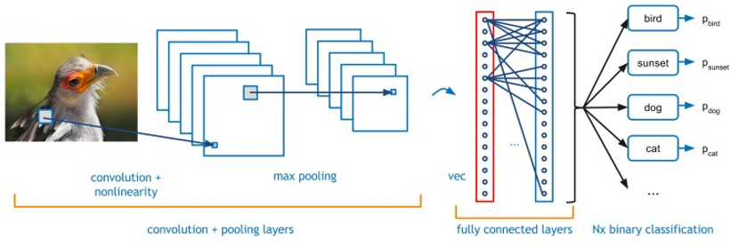
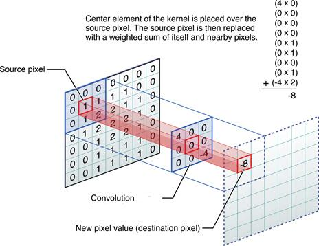
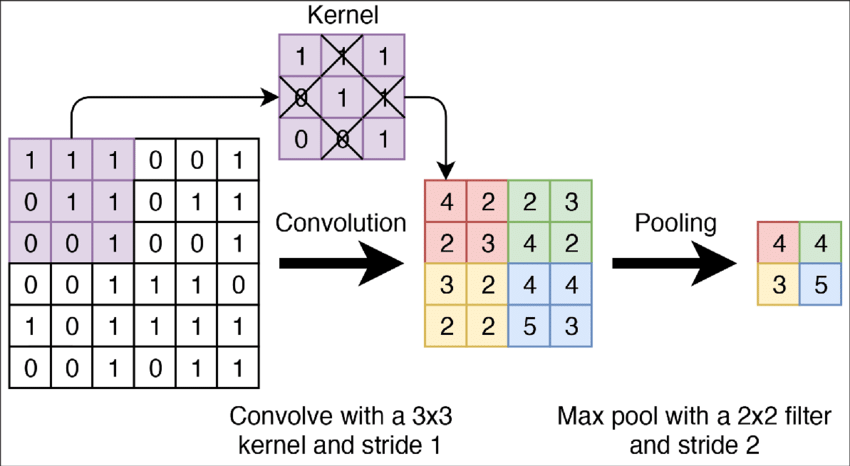

8. Machine Learning with Python 101
Yi-Ju Tseng
資料建模
- 機器學習簡介
- AutoML
- 深度學習簡介
- AutoKeras
- (補充資料)scikit-learn - ML with Python 常用套件
- (補充資料)keras - DL with Python 常用套件
前置作業
為了成功從https (加密封包傳輸)下載資料，首先取消證書驗證
什麼案子可以用AI?
- 有資料
- 學的會
- 學的好有很大的貢獻
- 對AI接受度高
最後….
做個Proof of concept看看會不會成 (快速好用的軟體)
資料建模
- 機器學習簡介
- AutoML
- 深度學習簡介
- AutoKeras
- (補充資料)scikit-learn - ML with Python 常用套件
- (補充資料)keras - DL with Python 常用套件
Machine Learning 機器學習簡介
機器學習簡介
從輸入資料學習新資訊，用來預測事件或協助決策
- Classical Learning 傳統的機器學習
- Supervised learning 監督式學習
- Unsupervised learning 非監督式學習
- Ensemble Method 集成方法
- Stacking
- Bagging
- Boosting
- Reinforcement Learning 強化學習
Classical Learning 傳統的機器學習

監督式學習 Supervised learning
有答案的資料
- Regression 迴歸：真實的’值’（股票、氣溫）
- Linear Regression 線性迴歸
- Support Vector Regression (SVR)
- Decision Tree Regression
監督式學習 Supervised learning
有答案的資料
- Classification 分類：分兩類（P/N, Yes/No, M/F, Sick/Not sick）/分多類 (A/B/C/D)
- Logistic Regression 羅吉斯迴歸、邏輯迴歸
- Support Vector Machines 支持向量機
- Decision Trees 決策樹
- K-Nearest Neighbor
- Artificial Neural Networks 類神經網路
- Deep Learning 深度學習
非監督式學習 Unsupervised learning
沒有答案的資料
- Clustering 分群
- Hierarchical clustering 階層式分群
- K-means clustering
- Artificial Neural Networks 類神經網路
- Deep Learning 深度學習
- Association Rules 關聯式規則
Ensemble Method 集成方法
- Bagging
- Bootstrap aggregating，套袋法
- Random Forest
- Boosting
- XGBoost
- LightGBM
模型驗證
- 在完成模型訓練後，為了驗證模型訓練的好不好，需要用一組獨立的測試資料，來做模型的驗證
- 在訓練模型前，必須特別留意是否有保留一份獨立的測試資料，並確保在訓練模型時都不用到此獨立資料集
- 資料集可分為以下兩種：
- 訓練組Training set, Development set: 讓演算法學到知識
- 測試組Test set, Validation set: 驗證學的怎麼樣
模型驗證方法

資料建模
- 機器學習簡介
- AutoML
- 深度學習簡介
- AutoKeras
- (補充資料)scikit-learn - ML with Python 常用套件
- (補充資料)keras - DL with Python 常用套件
AutoML
AutoML
- AutoML為快速建模的工具
- 市面上有許多AutoML的套件，包括
pycaret scikit-learn則是在python中執行機器學習模型訓練的重要套件
Requirement already satisfied: pycaret in /Users/yjtseng/.virtualenvs/r-reticulate/lib/python3.11/site-packages (3.3.2)
Requirement already satisfied: scikit-learn in /Users/yjtseng/.virtualenvs/r-reticulate/lib/python3.11/site-packages (1.4.2)
Requirement already satisfied: keras in /Users/yjtseng/.virtualenvs/r-reticulate/lib/python3.11/site-packages (3.9.2)
Collecting tensorflow
Downloading tensorflow-2.16.2-cp311-cp311-macosx_10_15_x86_64.whl (259.6 MB)
━━━━━━━━━━━━━━━━━━━━━━━━━━━━━━━━━━━━━━━━ 0.0/259.6 MB ? eta -:--:-- ━━━━━━━━━━━━━━━━━━━━━━━━━━━━━━━━━━━━━━━━ 0.1/259.6 MB 1.2 MB/s eta 0:03:46 ━━━━━━━━━━━━━━━━━━━━━━━━━━━━━━━━━━━━━━━━ 0.1/259.6 MB 1.3 MB/s eta 0:03:18 ━━━━━━━━━━━━━━━━━━━━━━━━━━━━━━━━━━━━━━━━ 0.3/259.6 MB 2.3 MB/s eta 0:01:51 ━━━━━━━━━━━━━━━━━━━━━━━━━━━━━━━━━━━━━━━━ 0.6/259.6 MB 4.1 MB/s eta 0:01:04 ━━━━━━━━━━━━━━━━━━━━━━━━━━━━━━━━━━━━━━━━ 1.2/259.6 MB 6.5 MB/s eta 0:00:40 ━━━━━━━━━━━━━━━━━━━━━━━━━━━━━━━━━━━━━━━━ 1.6/259.6 MB 8.4 MB/s eta 0:00:31 ━━━━━━━━━━━━━━━━━━━━━━━━━━━━━━━━━━━━━━━━ 1.7/259.6 MB 7.5 MB/s eta 0:00:35 ━━━━━━━━━━━━━━━━━━━━━━━━━━━━━━━━━━━━━━━━ 1.7/259.6 MB 7.5 MB/s eta 0:00:35 ╸━━━━━━━━━━━━━━━━━━━━━━━━━━━━━━━━━━━━━━━ 4.1/259.6 MB 13.1 MB/s eta 0:00:20 ╸━━━━━━━━━━━━━━━━━━━━━━━━━━━━━━━━━━━━━━━ 4.7/259.6 MB 14.0 MB/s eta 0:00:19 ╸━━━━━━━━━━━━━━━━━━━━━━━━━━━━━━━━━━━━━━━ 6.1/259.6 MB 15.3 MB/s eta 0:00:17 ━╺━━━━━━━━━━━━━━━━━━━━━━━━━━━━━━━━━━━━━━ 6.7/259.6 MB 15.4 MB/s eta 0:00:17 ━╺━━━━━━━━━━━━━━━━━━━━━━━━━━━━━━━━━━━━━━ 7.4/259.6 MB 15.9 MB/s eta 0:00:16 ━╺━━━━━━━━━━━━━━━━━━━━━━━━━━━━━━━━━━━━━━ 8.2/259.6 MB 16.3 MB/s eta 0:00:16 ━╺━━━━━━━━━━━━━━━━━━━━━━━━━━━━━━━━━━━━━━ 8.4/259.6 MB 16.4 MB/s eta 0:00:16 ━╺━━━━━━━━━━━━━━━━━━━━━━━━━━━━━━━━━━━━━━ 9.1/259.6 MB 16.7 MB/s eta 0:00:16 ━╸━━━━━━━━━━━━━━━━━━━━━━━━━━━━━━━━━━━━━━ 9.9/259.6 MB 16.3 MB/s eta 0:00:16 ━╸━━━━━━━━━━━━━━━━━━━━━━━━━━━━━━━━━━━━━ 10.8/259.6 MB 20.2 MB/s eta 0:00:13 ━╸━━━━━━━━━━━━━━━━━━━━━━━━━━━━━━━━━━━━━ 11.7/259.6 MB 20.5 MB/s eta 0:00:13 ━╸━━━━━━━━━━━━━━━━━━━━━━━━━━━━━━━━━━━━━ 12.5/259.6 MB 24.7 MB/s eta 0:00:10 ━╸━━━━━━━━━━━━━━━━━━━━━━━━━━━━━━━━━━━━━ 13.3/259.6 MB 23.0 MB/s eta 0:00:11 ━━╺━━━━━━━━━━━━━━━━━━━━━━━━━━━━━━━━━━━━ 14.1/259.6 MB 21.5 MB/s eta 0:00:12 ━━╺━━━━━━━━━━━━━━━━━━━━━━━━━━━━━━━━━━━━ 15.0/259.6 MB 22.4 MB/s eta 0:00:11 ━━╺━━━━━━━━━━━━━━━━━━━━━━━━━━━━━━━━━━━━ 15.8/259.6 MB 21.1 MB/s eta 0:00:12 ━━╸━━━━━━━━━━━━━━━━━━━━━━━━━━━━━━━━━━━━ 16.7/259.6 MB 21.0 MB/s eta 0:00:12 ━━╸━━━━━━━━━━━━━━━━━━━━━━━━━━━━━━━━━━━━ 17.5/259.6 MB 21.4 MB/s eta 0:00:12 ━━╸━━━━━━━━━━━━━━━━━━━━━━━━━━━━━━━━━━━━ 17.6/259.6 MB 20.0 MB/s eta 0:00:13 ━━╸━━━━━━━━━━━━━━━━━━━━━━━━━━━━━━━━━━━━ 18.3/259.6 MB 20.1 MB/s eta 0:00:13 ━━╸━━━━━━━━━━━━━━━━━━━━━━━━━━━━━━━━━━━━ 19.1/259.6 MB 21.1 MB/s eta 0:00:12 ━━╸━━━━━━━━━━━━━━━━━━━━━━━━━━━━━━━━━━━━ 19.9/259.6 MB 21.7 MB/s eta 0:00:12 ━━━╺━━━━━━━━━━━━━━━━━━━━━━━━━━━━━━━━━━━ 20.2/259.6 MB 20.4 MB/s eta 0:00:12 ━━━╺━━━━━━━━━━━━━━━━━━━━━━━━━━━━━━━━━━━ 20.7/259.6 MB 19.9 MB/s eta 0:00:13 ━━━╺━━━━━━━━━━━━━━━━━━━━━━━━━━━━━━━━━━━ 21.5/259.6 MB 19.9 MB/s eta 0:00:12 ━━━╺━━━━━━━━━━━━━━━━━━━━━━━━━━━━━━━━━━━ 22.1/259.6 MB 19.4 MB/s eta 0:00:13 ━━━╺━━━━━━━━━━━━━━━━━━━━━━━━━━━━━━━━━━━ 22.9/259.6 MB 19.3 MB/s eta 0:00:13 ━━━╸━━━━━━━━━━━━━━━━━━━━━━━━━━━━━━━━━━━ 23.8/259.6 MB 19.4 MB/s eta 0:00:13 ━━━╸━━━━━━━━━━━━━━━━━━━━━━━━━━━━━━━━━━━ 24.7/259.6 MB 19.4 MB/s eta 0:00:13 ━━━╸━━━━━━━━━━━━━━━━━━━━━━━━━━━━━━━━━━━ 25.2/259.6 MB 19.4 MB/s eta 0:00:13 ━━━╸━━━━━━━━━━━━━━━━━━━━━━━━━━━━━━━━━━━ 26.0/259.6 MB 19.4 MB/s eta 0:00:13 ━━━━╺━━━━━━━━━━━━━━━━━━━━━━━━━━━━━━━━━━ 26.8/259.6 MB 18.5 MB/s eta 0:00:13 ━━━━╺━━━━━━━━━━━━━━━━━━━━━━━━━━━━━━━━━━ 27.7/259.6 MB 18.5 MB/s eta 0:00:13 ━━━━╺━━━━━━━━━━━━━━━━━━━━━━━━━━━━━━━━━━ 28.6/259.6 MB 19.7 MB/s eta 0:00:12 ━━━━╺━━━━━━━━━━━━━━━━━━━━━━━━━━━━━━━━━━ 29.5/259.6 MB 20.5 MB/s eta 0:00:12 ━━━━╸━━━━━━━━━━━━━━━━━━━━━━━━━━━━━━━━━━ 30.3/259.6 MB 21.1 MB/s eta 0:00:11 ━━━━╸━━━━━━━━━━━━━━━━━━━━━━━━━━━━━━━━━━ 31.2/259.6 MB 22.0 MB/s eta 0:00:11 ━━━━╸━━━━━━━━━━━━━━━━━━━━━━━━━━━━━━━━━━ 32.0/259.6 MB 22.6 MB/s eta 0:00:11 ━━━━╸━━━━━━━━━━━━━━━━━━━━━━━━━━━━━━━━━━ 32.9/259.6 MB 22.7 MB/s eta 0:00:10 ━━━━━╺━━━━━━━━━━━━━━━━━━━━━━━━━━━━━━━━━ 33.5/259.6 MB 23.0 MB/s eta 0:00:10 ━━━━━╺━━━━━━━━━━━━━━━━━━━━━━━━━━━━━━━━━ 34.4/259.6 MB 22.8 MB/s eta 0:00:10 ━━━━━╺━━━━━━━━━━━━━━━━━━━━━━━━━━━━━━━━━ 35.1/259.6 MB 21.5 MB/s eta 0:00:11 ━━━━━╺━━━━━━━━━━━━━━━━━━━━━━━━━━━━━━━━━ 36.0/259.6 MB 22.1 MB/s eta 0:00:11 ━━━━━╺━━━━━━━━━━━━━━━━━━━━━━━━━━━━━━━━━ 36.5/259.6 MB 23.1 MB/s eta 0:00:10 ━━━━━╸━━━━━━━━━━━━━━━━━━━━━━━━━━━━━━━━━ 37.4/259.6 MB 22.9 MB/s eta 0:00:10 ━━━━━╸━━━━━━━━━━━━━━━━━━━━━━━━━━━━━━━━━ 38.0/259.6 MB 21.7 MB/s eta 0:00:11 ━━━━━╸━━━━━━━━━━━━━━━━━━━━━━━━━━━━━━━━━ 38.8/259.6 MB 21.6 MB/s eta 0:00:11 ━━━━━╸━━━━━━━━━━━━━━━━━━━━━━━━━━━━━━━━━ 39.8/259.6 MB 21.7 MB/s eta 0:00:11 ━━━━━━╺━━━━━━━━━━━━━━━━━━━━━━━━━━━━━━━━ 40.7/259.6 MB 21.7 MB/s eta 0:00:11 ━━━━━━╺━━━━━━━━━━━━━━━━━━━━━━━━━━━━━━━━ 41.7/259.6 MB 21.8 MB/s eta 0:00:11 ━━━━━━╺━━━━━━━━━━━━━━━━━━━━━━━━━━━━━━━━ 42.2/259.6 MB 21.2 MB/s eta 0:00:11 ━━━━━━╺━━━━━━━━━━━━━━━━━━━━━━━━━━━━━━━━ 43.0/259.6 MB 21.0 MB/s eta 0:00:11 ━━━━━━╸━━━━━━━━━━━━━━━━━━━━━━━━━━━━━━━━ 43.6/259.6 MB 21.3 MB/s eta 0:00:11 ━━━━━━╸━━━━━━━━━━━━━━━━━━━━━━━━━━━━━━━━ 44.5/259.6 MB 20.8 MB/s eta 0:00:11 ━━━━━━╸━━━━━━━━━━━━━━━━━━━━━━━━━━━━━━━━ 45.0/259.6 MB 21.0 MB/s eta 0:00:11 ━━━━━━╸━━━━━━━━━━━━━━━━━━━━━━━━━━━━━━━━ 46.0/259.6 MB 21.0 MB/s eta 0:00:11 ━━━━━━━╺━━━━━━━━━━━━━━━━━━━━━━━━━━━━━━━ 46.7/259.6 MB 20.9 MB/s eta 0:00:11 ━━━━━━━╺━━━━━━━━━━━━━━━━━━━━━━━━━━━━━━━ 47.5/259.6 MB 21.4 MB/s eta 0:00:10 ━━━━━━━╺━━━━━━━━━━━━━━━━━━━━━━━━━━━━━━━ 48.4/259.6 MB 21.6 MB/s eta 0:00:10 ━━━━━━━╺━━━━━━━━━━━━━━━━━━━━━━━━━━━━━━━ 49.2/259.6 MB 21.5 MB/s eta 0:00:10 ━━━━━━━╸━━━━━━━━━━━━━━━━━━━━━━━━━━━━━━━ 50.1/259.6 MB 21.5 MB/s eta 0:00:10 ━━━━━━━╸━━━━━━━━━━━━━━━━━━━━━━━━━━━━━━━ 51.0/259.6 MB 21.5 MB/s eta 0:00:10 ━━━━━━━╸━━━━━━━━━━━━━━━━━━━━━━━━━━━━━━━ 51.9/259.6 MB 21.4 MB/s eta 0:00:10 ━━━━━━━╸━━━━━━━━━━━━━━━━━━━━━━━━━━━━━━━ 53.0/259.6 MB 22.0 MB/s eta 0:00:10 ━━━━━━━━╺━━━━━━━━━━━━━━━━━━━━━━━━━━━━━━ 53.8/259.6 MB 22.1 MB/s eta 0:00:10 ━━━━━━━━╺━━━━━━━━━━━━━━━━━━━━━━━━━━━━━━ 54.8/259.6 MB 23.9 MB/s eta 0:00:09 ━━━━━━━━╺━━━━━━━━━━━━━━━━━━━━━━━━━━━━━━ 55.1/259.6 MB 23.3 MB/s eta 0:00:09 ━━━━━━━━╺━━━━━━━━━━━━━━━━━━━━━━━━━━━━━━ 55.9/259.6 MB 23.8 MB/s eta 0:00:09 ━━━━━━━━╸━━━━━━━━━━━━━━━━━━━━━━━━━━━━━━ 56.8/259.6 MB 22.9 MB/s eta 0:00:09 ━━━━━━━━╸━━━━━━━━━━━━━━━━━━━━━━━━━━━━━━ 57.7/259.6 MB 22.9 MB/s eta 0:00:09 ━━━━━━━━╸━━━━━━━━━━━━━━━━━━━━━━━━━━━━━━ 58.7/259.6 MB 24.3 MB/s eta 0:00:09 ━━━━━━━━╸━━━━━━━━━━━━━━━━━━━━━━━━━━━━━━ 59.8/259.6 MB 24.4 MB/s eta 0:00:09 ━━━━━━━━━╺━━━━━━━━━━━━━━━━━━━━━━━━━━━━━ 60.6/259.6 MB 24.3 MB/s eta 0:00:09 ━━━━━━━━━╺━━━━━━━━━━━━━━━━━━━━━━━━━━━━━ 61.5/259.6 MB 24.2 MB/s eta 0:00:09 ━━━━━━━━━╺━━━━━━━━━━━━━━━━━━━━━━━━━━━━━ 62.4/259.6 MB 23.9 MB/s eta 0:00:09 ━━━━━━━━━╸━━━━━━━━━━━━━━━━━━━━━━━━━━━━━ 63.3/259.6 MB 24.0 MB/s eta 0:00:09 ━━━━━━━━━╸━━━━━━━━━━━━━━━━━━━━━━━━━━━━━ 64.3/259.6 MB 24.1 MB/s eta 0:00:09 ━━━━━━━━━╸━━━━━━━━━━━━━━━━━━━━━━━━━━━━━ 64.7/259.6 MB 22.8 MB/s eta 0:00:09 ━━━━━━━━━╸━━━━━━━━━━━━━━━━━━━━━━━━━━━━━ 65.7/259.6 MB 23.9 MB/s eta 0:00:09 ━━━━━━━━━━╺━━━━━━━━━━━━━━━━━━━━━━━━━━━━ 66.7/259.6 MB 24.2 MB/s eta 0:00:08 ━━━━━━━━━━╺━━━━━━━━━━━━━━━━━━━━━━━━━━━━ 67.7/259.6 MB 24.2 MB/s eta 0:00:08 ━━━━━━━━━━╺━━━━━━━━━━━━━━━━━━━━━━━━━━━━ 68.6/259.6 MB 24.2 MB/s eta 0:00:08 ━━━━━━━━━━╺━━━━━━━━━━━━━━━━━━━━━━━━━━━━ 69.7/259.6 MB 24.2 MB/s eta 0:00:08 ━━━━━━━━━━╸━━━━━━━━━━━━━━━━━━━━━━━━━━━━ 70.6/259.6 MB 24.2 MB/s eta 0:00:08 ━━━━━━━━━━╸━━━━━━━━━━━━━━━━━━━━━━━━━━━━ 71.5/259.6 MB 24.2 MB/s eta 0:00:08 ━━━━━━━━━━╸━━━━━━━━━━━━━━━━━━━━━━━━━━━━ 72.5/259.6 MB 24.3 MB/s eta 0:00:08 ━━━━━━━━━━╸━━━━━━━━━━━━━━━━━━━━━━━━━━━━ 72.9/259.6 MB 23.5 MB/s eta 0:00:08 ━━━━━━━━━━━╺━━━━━━━━━━━━━━━━━━━━━━━━━━━ 73.8/259.6 MB 24.8 MB/s eta 0:00:08 ━━━━━━━━━━━╺━━━━━━━━━━━━━━━━━━━━━━━━━━━ 74.7/259.6 MB 24.9 MB/s eta 0:00:08 ━━━━━━━━━━━╺━━━━━━━━━━━━━━━━━━━━━━━━━━━ 75.6/259.6 MB 24.9 MB/s eta 0:00:08 ━━━━━━━━━━━╸━━━━━━━━━━━━━━━━━━━━━━━━━━━ 76.6/259.6 MB 24.9 MB/s eta 0:00:08 ━━━━━━━━━━━╸━━━━━━━━━━━━━━━━━━━━━━━━━━━ 77.4/259.6 MB 25.0 MB/s eta 0:00:08 ━━━━━━━━━━━╸━━━━━━━━━━━━━━━━━━━━━━━━━━━ 78.3/259.6 MB 25.0 MB/s eta 0:00:08 ━━━━━━━━━━━╸━━━━━━━━━━━━━━━━━━━━━━━━━━━ 78.5/259.6 MB 23.9 MB/s eta 0:00:08 ━━━━━━━━━━━╸━━━━━━━━━━━━━━━━━━━━━━━━━━━ 79.5/259.6 MB 23.8 MB/s eta 0:00:08 ━━━━━━━━━━━━╺━━━━━━━━━━━━━━━━━━━━━━━━━━ 80.2/259.6 MB 22.5 MB/s eta 0:00:08 ━━━━━━━━━━━━╺━━━━━━━━━━━━━━━━━━━━━━━━━━ 81.1/259.6 MB 22.5 MB/s eta 0:00:08 ━━━━━━━━━━━━╺━━━━━━━━━━━━━━━━━━━━━━━━━━ 81.6/259.6 MB 21.4 MB/s eta 0:00:09 ━━━━━━━━━━━━╺━━━━━━━━━━━━━━━━━━━━━━━━━━ 82.6/259.6 MB 21.5 MB/s eta 0:00:09 ━━━━━━━━━━━━╸━━━━━━━━━━━━━━━━━━━━━━━━━━ 83.7/259.6 MB 22.4 MB/s eta 0:00:08 ━━━━━━━━━━━━╸━━━━━━━━━━━━━━━━━━━━━━━━━━ 84.6/259.6 MB 22.5 MB/s eta 0:00:08 ━━━━━━━━━━━━╸━━━━━━━━━━━━━━━━━━━━━━━━━━ 84.9/259.6 MB 22.5 MB/s eta 0:00:08 ━━━━━━━━━━━━╸━━━━━━━━━━━━━━━━━━━━━━━━━━ 84.9/259.6 MB 22.5 MB/s eta 0:00:08 ━━━━━━━━━━━━╸━━━━━━━━━━━━━━━━━━━━━━━━━━ 84.9/259.6 MB 22.5 MB/s eta 0:00:08 ━━━━━━━━━━━━╸━━━━━━━━━━━━━━━━━━━━━━━━━━ 84.9/259.6 MB 22.5 MB/s eta 0:00:08 ━━━━━━━━━━━━╸━━━━━━━━━━━━━━━━━━━━━━━━━━ 84.9/259.6 MB 22.5 MB/s eta 0:00:08 ━━━━━━━━━━━━╸━━━━━━━━━━━━━━━━━━━━━━━━━━ 84.9/259.6 MB 22.5 MB/s eta 0:00:08 ━━━━━━━━━━━━╸━━━━━━━━━━━━━━━━━━━━━━━━━━ 84.9/259.6 MB 22.5 MB/s eta 0:00:08 ━━━━━━━━━━━━╸━━━━━━━━━━━━━━━━━━━━━━━━━━ 84.9/259.6 MB 22.5 MB/s eta 0:00:08 ━━━━━━━━━━━━╸━━━━━━━━━━━━━━━━━━━━━━━━━━ 84.9/259.6 MB 22.5 MB/s eta 0:00:08 ━━━━━━━━━━━━╸━━━━━━━━━━━━━━━━━━━━━━━━━━ 84.9/259.6 MB 22.5 MB/s eta 0:00:08 ━━━━━━━━━━━━╸━━━━━━━━━━━━━━━━━━━━━━━━━━ 84.9/259.6 MB 22.5 MB/s eta 0:00:08 ━━━━━━━━━━━━╸━━━━━━━━━━━━━━━━━━━━━━━━━━ 84.9/259.6 MB 22.5 MB/s eta 0:00:08 ━━━━━━━━━━━━╸━━━━━━━━━━━━━━━━━━━━━━━━━━ 84.9/259.6 MB 22.5 MB/s eta 0:00:08 ━━━━━━━━━━━━╸━━━━━━━━━━━━━━━━━━━━━━━━━━ 84.9/259.6 MB 22.5 MB/s eta 0:00:08 ━━━━━━━━━━━━╸━━━━━━━━━━━━━━━━━━━━━━━━━━ 84.9/259.6 MB 22.5 MB/s eta 0:00:08 ━━━━━━━━━━━━╸━━━━━━━━━━━━━━━━━━━━━━━━━━ 85.2/259.6 MB 10.1 MB/s eta 0:00:18 ━━━━━━━━━━━━╸━━━━━━━━━━━━━━━━━━━━━━━━━━ 86.3/259.6 MB 10.1 MB/s eta 0:00:18 ━━━━━━━━━━━━━╺━━━━━━━━━━━━━━━━━━━━━━━━━ 87.3/259.6 MB 10.1 MB/s eta 0:00:18 ━━━━━━━━━━━━━╺━━━━━━━━━━━━━━━━━━━━━━━━━ 88.2/259.6 MB 10.1 MB/s eta 0:00:17 ━━━━━━━━━━━━━╺━━━━━━━━━━━━━━━━━━━━━━━━━ 88.6/259.6 MB 10.2 MB/s eta 0:00:17 ━━━━━━━━━━━━━╺━━━━━━━━━━━━━━━━━━━━━━━━━ 89.5/259.6 MB 10.4 MB/s eta 0:00:17 ━━━━━━━━━━━━━╸━━━━━━━━━━━━━━━━━━━━━━━━━ 90.4/259.6 MB 10.4 MB/s eta 0:00:17 ━━━━━━━━━━━━━╸━━━━━━━━━━━━━━━━━━━━━━━━━ 91.4/259.6 MB 10.6 MB/s eta 0:00:16 ━━━━━━━━━━━━━╸━━━━━━━━━━━━━━━━━━━━━━━━━ 92.3/259.6 MB 10.7 MB/s eta 0:00:16 ━━━━━━━━━━━━━╸━━━━━━━━━━━━━━━━━━━━━━━━━ 92.3/259.6 MB 10.2 MB/s eta 0:00:17 ━━━━━━━━━━━━━━╺━━━━━━━━━━━━━━━━━━━━━━━━ 93.3/259.6 MB 10.2 MB/s eta 0:00:17 ━━━━━━━━━━━━━━╺━━━━━━━━━━━━━━━━━━━━━━━━ 94.3/259.6 MB 10.2 MB/s eta 0:00:17 ━━━━━━━━━━━━━━╺━━━━━━━━━━━━━━━━━━━━━━━━ 95.3/259.6 MB 22.8 MB/s eta 0:00:08 ━━━━━━━━━━━━━━╺━━━━━━━━━━━━━━━━━━━━━━━━ 95.4/259.6 MB 22.9 MB/s eta 0:00:08 ━━━━━━━━━━━━━━╺━━━━━━━━━━━━━━━━━━━━━━━━ 95.4/259.6 MB 22.9 MB/s eta 0:00:08 ━━━━━━━━━━━━━━╺━━━━━━━━━━━━━━━━━━━━━━━━ 96.4/259.6 MB 19.8 MB/s eta 0:00:09 ━━━━━━━━━━━━━━╸━━━━━━━━━━━━━━━━━━━━━━━━ 97.0/259.6 MB 19.5 MB/s eta 0:00:09 ━━━━━━━━━━━━━━╸━━━━━━━━━━━━━━━━━━━━━━━━ 97.0/259.6 MB 19.5 MB/s eta 0:00:09 ━━━━━━━━━━━━━━╸━━━━━━━━━━━━━━━━━━━━━━━━ 97.0/259.6 MB 19.5 MB/s eta 0:00:09 ━━━━━━━━━━━━━━╸━━━━━━━━━━━━━━━━━━━━━━━━ 97.4/259.6 MB 16.4 MB/s eta 0:00:10 ━━━━━━━━━━━━━━╸━━━━━━━━━━━━━━━━━━━━━━━━ 99.6/259.6 MB 17.7 MB/s eta 0:00:10 ━━━━━━━━━━━━━━╸━━━━━━━━━━━━━━━━━━━━━━━ 100.0/259.6 MB 18.5 MB/s eta 0:00:09 ━━━━━━━━━━━━━━╸━━━━━━━━━━━━━━━━━━━━━━━ 100.9/259.6 MB 18.3 MB/s eta 0:00:09 ━━━━━━━━━━━━━━╸━━━━━━━━━━━━━━━━━━━━━━━ 101.8/259.6 MB 17.6 MB/s eta 0:00:09 ━━━━━━━━━━━━━━━╺━━━━━━━━━━━━━━━━━━━━━━ 102.8/259.6 MB 18.8 MB/s eta 0:00:09 ━━━━━━━━━━━━━━━╺━━━━━━━━━━━━━━━━━━━━━━ 103.9/259.6 MB 18.9 MB/s eta 0:00:09 ━━━━━━━━━━━━━━━╺━━━━━━━━━━━━━━━━━━━━━━ 104.8/259.6 MB 18.9 MB/s eta 0:00:09 ━━━━━━━━━━━━━━━╺━━━━━━━━━━━━━━━━━━━━━━ 105.4/259.6 MB 18.3 MB/s eta 0:00:09 ━━━━━━━━━━━━━━━╸━━━━━━━━━━━━━━━━━━━━━━ 106.3/259.6 MB 21.1 MB/s eta 0:00:08 ━━━━━━━━━━━━━━━╸━━━━━━━━━━━━━━━━━━━━━━ 107.3/259.6 MB 27.2 MB/s eta 0:00:06 ━━━━━━━━━━━━━━━╸━━━━━━━━━━━━━━━━━━━━━━ 108.3/259.6 MB 25.0 MB/s eta 0:00:07 ━━━━━━━━━━━━━━━╸━━━━━━━━━━━━━━━━━━━━━━ 109.3/259.6 MB 23.1 MB/s eta 0:00:07 ━━━━━━━━━━━━━━━━╺━━━━━━━━━━━━━━━━━━━━━ 110.2/259.6 MB 25.2 MB/s eta 0:00:06 ━━━━━━━━━━━━━━━━╺━━━━━━━━━━━━━━━━━━━━━ 111.2/259.6 MB 25.1 MB/s eta 0:00:06 ━━━━━━━━━━━━━━━━╺━━━━━━━━━━━━━━━━━━━━━ 112.1/259.6 MB 25.1 MB/s eta 0:00:06 ━━━━━━━━━━━━━━━━╸━━━━━━━━━━━━━━━━━━━━━ 113.1/259.6 MB 25.2 MB/s eta 0:00:06 ━━━━━━━━━━━━━━━━╸━━━━━━━━━━━━━━━━━━━━━ 113.8/259.6 MB 25.0 MB/s eta 0:00:06 ━━━━━━━━━━━━━━━━╸━━━━━━━━━━━━━━━━━━━━━ 114.7/259.6 MB 25.2 MB/s eta 0:00:06 ━━━━━━━━━━━━━━━━╸━━━━━━━━━━━━━━━━━━━━━ 115.6/259.6 MB 24.0 MB/s eta 0:00:07 ━━━━━━━━━━━━━━━━━╺━━━━━━━━━━━━━━━━━━━━ 116.4/259.6 MB 24.7 MB/s eta 0:00:06 ━━━━━━━━━━━━━━━━━╺━━━━━━━━━━━━━━━━━━━━ 116.4/259.6 MB 24.7 MB/s eta 0:00:06 ━━━━━━━━━━━━━━━━━╺━━━━━━━━━━━━━━━━━━━━ 116.4/259.6 MB 24.7 MB/s eta 0:00:06 ━━━━━━━━━━━━━━━━━╺━━━━━━━━━━━━━━━━━━━━ 116.4/259.6 MB 24.7 MB/s eta 0:00:06 ━━━━━━━━━━━━━━━━━╺━━━━━━━━━━━━━━━━━━━━ 116.4/259.6 MB 24.7 MB/s eta 0:00:06 ━━━━━━━━━━━━━━━━━╺━━━━━━━━━━━━━━━━━━━━ 116.4/259.6 MB 24.7 MB/s eta 0:00:06 ━━━━━━━━━━━━━━━━━╺━━━━━━━━━━━━━━━━━━━━ 116.4/259.6 MB 24.7 MB/s eta 0:00:06 ━━━━━━━━━━━━━━━━━╺━━━━━━━━━━━━━━━━━━━━ 116.4/259.6 MB 24.7 MB/s eta 0:00:06 ━━━━━━━━━━━━━━━━━╺━━━━━━━━━━━━━━━━━━━━ 117.3/259.6 MB 15.6 MB/s eta 0:00:10 ━━━━━━━━━━━━━━━━━╺━━━━━━━━━━━━━━━━━━━━ 117.6/259.6 MB 14.8 MB/s eta 0:00:10 ━━━━━━━━━━━━━━━━━╺━━━━━━━━━━━━━━━━━━━━ 118.4/259.6 MB 14.5 MB/s eta 0:00:10 ━━━━━━━━━━━━━━━━━╺━━━━━━━━━━━━━━━━━━━━ 119.1/259.6 MB 14.3 MB/s eta 0:00:10 ━━━━━━━━━━━━━━━━━╸━━━━━━━━━━━━━━━━━━━━ 120.1/259.6 MB 14.3 MB/s eta 0:00:10 ━━━━━━━━━━━━━━━━━╸━━━━━━━━━━━━━━━━━━━━ 121.0/259.6 MB 14.3 MB/s eta 0:00:10 ━━━━━━━━━━━━━━━━━╸━━━━━━━━━━━━━━━━━━━━ 121.6/259.6 MB 14.3 MB/s eta 0:00:10 ━━━━━━━━━━━━━━━━━╸━━━━━━━━━━━━━━━━━━━━ 121.6/259.6 MB 14.3 MB/s eta 0:00:10 ━━━━━━━━━━━━━━━━━╸━━━━━━━━━━━━━━━━━━━━ 122.1/259.6 MB 13.1 MB/s eta 0:00:11 ━━━━━━━━━━━━━━━━━━╺━━━━━━━━━━━━━━━━━━━ 123.1/259.6 MB 13.1 MB/s eta 0:00:11 ━━━━━━━━━━━━━━━━━━╺━━━━━━━━━━━━━━━━━━━ 123.5/259.6 MB 12.8 MB/s eta 0:00:11 ━━━━━━━━━━━━━━━━━━╺━━━━━━━━━━━━━━━━━━━ 123.7/259.6 MB 12.7 MB/s eta 0:00:11 ━━━━━━━━━━━━━━━━━━╺━━━━━━━━━━━━━━━━━━━ 123.7/259.6 MB 12.7 MB/s eta 0:00:11 ━━━━━━━━━━━━━━━━━━╺━━━━━━━━━━━━━━━━━━━ 124.1/259.6 MB 11.6 MB/s eta 0:00:12 ━━━━━━━━━━━━━━━━━━╺━━━━━━━━━━━━━━━━━━━ 125.1/259.6 MB 11.7 MB/s eta 0:00:12 ━━━━━━━━━━━━━━━━━━╺━━━━━━━━━━━━━━━━━━━ 125.5/259.6 MB 11.4 MB/s eta 0:00:12 ━━━━━━━━━━━━━━━━━━╸━━━━━━━━━━━━━━━━━━━ 126.4/259.6 MB 11.4 MB/s eta 0:00:12 ━━━━━━━━━━━━━━━━━━╸━━━━━━━━━━━━━━━━━━━ 127.5/259.6 MB 15.9 MB/s eta 0:00:09 ━━━━━━━━━━━━━━━━━━╸━━━━━━━━━━━━━━━━━━━ 128.4/259.6 MB 17.2 MB/s eta 0:00:08 ━━━━━━━━━━━━━━━━━━╸━━━━━━━━━━━━━━━━━━━ 129.3/259.6 MB 17.5 MB/s eta 0:00:08 ━━━━━━━━━━━━━━━━━━━╺━━━━━━━━━━━━━━━━━━ 130.3/259.6 MB 17.5 MB/s eta 0:00:08 ━━━━━━━━━━━━━━━━━━━╺━━━━━━━━━━━━━━━━━━ 131.1/259.6 MB 17.4 MB/s eta 0:00:08 ━━━━━━━━━━━━━━━━━━━╺━━━━━━━━━━━━━━━━━━ 131.1/259.6 MB 17.4 MB/s eta 0:00:08 ━━━━━━━━━━━━━━━━━━━╺━━━━━━━━━━━━━━━━━━ 131.1/259.6 MB 17.4 MB/s eta 0:00:08 ━━━━━━━━━━━━━━━━━━━╺━━━━━━━━━━━━━━━━━━ 131.1/259.6 MB 17.4 MB/s eta 0:00:08 ━━━━━━━━━━━━━━━━━━━╺━━━━━━━━━━━━━━━━━━ 131.1/259.6 MB 17.4 MB/s eta 0:00:08 ━━━━━━━━━━━━━━━━━━━╺━━━━━━━━━━━━━━━━━━ 131.1/259.6 MB 17.4 MB/s eta 0:00:08 ━━━━━━━━━━━━━━━━━━━╺━━━━━━━━━━━━━━━━━━ 131.1/259.6 MB 17.4 MB/s eta 0:00:08 ━━━━━━━━━━━━━━━━━━━╺━━━━━━━━━━━━━━━━━━ 131.1/259.6 MB 17.4 MB/s eta 0:00:08 ━━━━━━━━━━━━━━━━━━━╺━━━━━━━━━━━━━━━━━━ 131.1/259.6 MB 17.4 MB/s eta 0:00:08 ━━━━━━━━━━━━━━━━━━━╺━━━━━━━━━━━━━━━━━━ 131.1/259.6 MB 17.4 MB/s eta 0:00:08 ━━━━━━━━━━━━━━━━━━━╺━━━━━━━━━━━━━━━━━━ 131.1/259.6 MB 17.4 MB/s eta 0:00:08 ━━━━━━━━━━━━━━━━━━━╺━━━━━━━━━━━━━━━━━━ 131.1/259.6 MB 17.4 MB/s eta 0:00:08 ━━━━━━━━━━━━━━━━━━━╺━━━━━━━━━━━━━━━━━━ 131.1/259.6 MB 17.4 MB/s eta 0:00:08 ━━━━━━━━━━━━━━━━━━━╸━━━━━━━━━━━━━━━━━━━ 131.5/259.6 MB 9.7 MB/s eta 0:00:14 ━━━━━━━━━━━━━━━━━━━╺━━━━━━━━━━━━━━━━━━ 132.1/259.6 MB 10.3 MB/s eta 0:00:13 ━━━━━━━━━━━━━━━━━━━╺━━━━━━━━━━━━━━━━━━ 132.1/259.6 MB 10.3 MB/s eta 0:00:13 ━━━━━━━━━━━━━━━━━━━╺━━━━━━━━━━━━━━━━━━ 132.1/259.6 MB 10.3 MB/s eta 0:00:13 ━━━━━━━━━━━━━━━━━━━╺━━━━━━━━━━━━━━━━━━ 132.1/259.6 MB 10.3 MB/s eta 0:00:13 ━━━━━━━━━━━━━━━━━━━╺━━━━━━━━━━━━━━━━━━ 132.1/259.6 MB 10.3 MB/s eta 0:00:13 ━━━━━━━━━━━━━━━━━━━╸━━━━━━━━━━━━━━━━━━━ 132.3/259.6 MB 8.7 MB/s eta 0:00:15 ━━━━━━━━━━━━━━━━━━━━╺━━━━━━━━━━━━━━━━━━ 133.4/259.6 MB 8.9 MB/s eta 0:00:15 ━━━━━━━━━━━━━━━━━━━━╺━━━━━━━━━━━━━━━━━━ 134.2/259.6 MB 9.7 MB/s eta 0:00:13 ━━━━━━━━━━━━━━━━━━━━╺━━━━━━━━━━━━━━━━━━ 134.2/259.6 MB 9.7 MB/s eta 0:00:13 ━━━━━━━━━━━━━━━━━━━━╺━━━━━━━━━━━━━━━━━━ 134.2/259.6 MB 9.7 MB/s eta 0:00:13 ━━━━━━━━━━━━━━━━━━━━╺━━━━━━━━━━━━━━━━━━ 134.2/259.6 MB 9.7 MB/s eta 0:00:13 ━━━━━━━━━━━━━━━━━━━━╺━━━━━━━━━━━━━━━━━━ 134.2/259.6 MB 9.7 MB/s eta 0:00:13 ━━━━━━━━━━━━━━━━━━━━╺━━━━━━━━━━━━━━━━━━ 134.2/259.6 MB 9.7 MB/s eta 0:00:13 ━━━━━━━━━━━━━━━━━━━━╺━━━━━━━━━━━━━━━━━━ 134.2/259.6 MB 9.7 MB/s eta 0:00:13 ━━━━━━━━━━━━━━━━━━━━╺━━━━━━━━━━━━━━━━━━ 134.2/259.6 MB 9.7 MB/s eta 0:00:13 ━━━━━━━━━━━━━━━━━━━━╺━━━━━━━━━━━━━━━━━━ 134.2/259.6 MB 9.7 MB/s eta 0:00:13 ━━━━━━━━━━━━━━━━━━━━╺━━━━━━━━━━━━━━━━━━ 134.2/259.6 MB 9.7 MB/s eta 0:00:13 ━━━━━━━━━━━━━━━━━━━━╺━━━━━━━━━━━━━━━━━━ 134.2/259.6 MB 9.7 MB/s eta 0:00:13 ━━━━━━━━━━━━━━━━━━━━╺━━━━━━━━━━━━━━━━━━ 134.2/259.6 MB 9.7 MB/s eta 0:00:13 ━━━━━━━━━━━━━━━━━━━━╺━━━━━━━━━━━━━━━━━━ 134.2/259.6 MB 9.7 MB/s eta 0:00:13 ━━━━━━━━━━━━━━━━━━━━╺━━━━━━━━━━━━━━━━━━ 134.9/259.6 MB 6.7 MB/s eta 0:00:19 ━━━━━━━━━━━━━━━━━━━━╺━━━━━━━━━━━━━━━━━━ 135.9/259.6 MB 6.8 MB/s eta 0:00:19 ━━━━━━━━━━━━━━━━━━━━╸━━━━━━━━━━━━━━━━━━ 136.8/259.6 MB 6.8 MB/s eta 0:00:19 ━━━━━━━━━━━━━━━━━━━━╸━━━━━━━━━━━━━━━━━━ 137.9/259.6 MB 6.8 MB/s eta 0:00:18 ━━━━━━━━━━━━━━━━━━━━╸━━━━━━━━━━━━━━━━━━ 138.9/259.6 MB 6.8 MB/s eta 0:00:18 ━━━━━━━━━━━━━━━━━━━━╸━━━━━━━━━━━━━━━━━━ 138.9/259.6 MB 6.6 MB/s eta 0:00:19 ━━━━━━━━━━━━━━━━━━━━╸━━━━━━━━━━━━━━━━━━ 139.5/259.6 MB 6.7 MB/s eta 0:00:18 ━━━━━━━━━━━━━━━━━━━━━╺━━━━━━━━━━━━━━━━━ 139.8/259.6 MB 6.4 MB/s eta 0:00:19 ━━━━━━━━━━━━━━━━━━━━━╺━━━━━━━━━━━━━━━━━ 140.5/259.6 MB 6.4 MB/s eta 0:00:19 ━━━━━━━━━━━━━━━━━━━━━╺━━━━━━━━━━━━━━━━━ 140.5/259.6 MB 6.4 MB/s eta 0:00:19 ━━━━━━━━━━━━━━━━━━━━━╺━━━━━━━━━━━━━━━━━ 140.5/259.6 MB 6.4 MB/s eta 0:00:19 ━━━━━━━━━━━━━━━━━━━━━╺━━━━━━━━━━━━━━━━━ 140.5/259.6 MB 6.4 MB/s eta 0:00:19 ━━━━━━━━━━━━━━━━━━━━━╺━━━━━━━━━━━━━━━━━ 140.5/259.6 MB 6.4 MB/s eta 0:00:19 ━━━━━━━━━━━━━━━━━━━━━╺━━━━━━━━━━━━━━━━━ 140.5/259.6 MB 6.4 MB/s eta 0:00:19 ━━━━━━━━━━━━━━━━━━━━━╺━━━━━━━━━━━━━━━━━ 140.5/259.6 MB 6.4 MB/s eta 0:00:19 ━━━━━━━━━━━━━━━━━━━━━╺━━━━━━━━━━━━━━━━━ 140.5/259.6 MB 6.4 MB/s eta 0:00:19 ━━━━━━━━━━━━━━━━━━━━━╺━━━━━━━━━━━━━━━━━ 140.5/259.6 MB 6.4 MB/s eta 0:00:19 ━━━━━━━━━━━━━━━━━━━━━╺━━━━━━━━━━━━━━━━━ 140.5/259.6 MB 6.4 MB/s eta 0:00:19 ━━━━━━━━━━━━━━━━━━━━━╺━━━━━━━━━━━━━━━━━ 140.5/259.6 MB 6.4 MB/s eta 0:00:19 ━━━━━━━━━━━━━━━━━━━━━╺━━━━━━━━━━━━━━━━━ 141.4/259.6 MB 6.8 MB/s eta 0:00:18 ━━━━━━━━━━━━━━━━━━━━━╺━━━━━━━━━━━━━━━━━ 142.4/259.6 MB 7.8 MB/s eta 0:00:16 ━━━━━━━━━━━━━━━━━━━━━╸━━━━━━━━━━━━━━━━━ 143.4/259.6 MB 7.8 MB/s eta 0:00:15 ━━━━━━━━━━━━━━━━━━━━━╸━━━━━━━━━━━━━━━━━ 144.4/259.6 MB 7.8 MB/s eta 0:00:15 ━━━━━━━━━━━━━━━━━━━━━╺━━━━━━━━━━━━━━━━ 144.7/259.6 MB 12.2 MB/s eta 0:00:10 ━━━━━━━━━━━━━━━━━━━━━╺━━━━━━━━━━━━━━━━ 144.7/259.6 MB 12.2 MB/s eta 0:00:10 ━━━━━━━━━━━━━━━━━━━━━╺━━━━━━━━━━━━━━━━ 144.7/259.6 MB 12.2 MB/s eta 0:00:10 ━━━━━━━━━━━━━━━━━━━━━╺━━━━━━━━━━━━━━━━ 144.7/259.6 MB 12.2 MB/s eta 0:00:10 ━━━━━━━━━━━━━━━━━━━━━╺━━━━━━━━━━━━━━━━ 144.7/259.6 MB 12.2 MB/s eta 0:00:10 ━━━━━━━━━━━━━━━━━━━━━╺━━━━━━━━━━━━━━━━ 144.7/259.6 MB 12.2 MB/s eta 0:00:10 ━━━━━━━━━━━━━━━━━━━━━╺━━━━━━━━━━━━━━━━ 144.7/259.6 MB 12.2 MB/s eta 0:00:10 ━━━━━━━━━━━━━━━━━━━━━╸━━━━━━━━━━━━━━━━━ 145.6/259.6 MB 9.4 MB/s eta 0:00:13 ━━━━━━━━━━━━━━━━━━━━━━╺━━━━━━━━━━━━━━━━ 146.6/259.6 MB 9.3 MB/s eta 0:00:13 ━━━━━━━━━━━━━━━━━━━━━━╺━━━━━━━━━━━━━━━━ 147.3/259.6 MB 9.3 MB/s eta 0:00:13 ━━━━━━━━━━━━━━━━━━━━━━╺━━━━━━━━━━━━━━━━ 148.2/259.6 MB 9.3 MB/s eta 0:00:12 ━━━━━━━━━━━━━━━━━━━━━━╺━━━━━━━━━━━━━━━━ 149.0/259.6 MB 9.1 MB/s eta 0:00:13 ━━━━━━━━━━━━━━━━━━━━━━╸━━━━━━━━━━━━━━━━ 149.9/259.6 MB 9.8 MB/s eta 0:00:12 ━━━━━━━━━━━━━━━━━━━━━━╸━━━━━━━━━━━━━━━━ 150.1/259.6 MB 9.8 MB/s eta 0:00:12 ━━━━━━━━━━━━━━━━━━━━━━╺━━━━━━━━━━━━━━━ 151.0/259.6 MB 15.2 MB/s eta 0:00:08 ━━━━━━━━━━━━━━━━━━━━━━╺━━━━━━━━━━━━━━━ 152.0/259.6 MB 14.8 MB/s eta 0:00:08 ━━━━━━━━━━━━━━━━━━━━━━╺━━━━━━━━━━━━━━━ 152.9/259.6 MB 14.6 MB/s eta 0:00:08 ━━━━━━━━━━━━━━━━━━━━━━╸━━━━━━━━━━━━━━━ 154.0/259.6 MB 14.7 MB/s eta 0:00:08 ━━━━━━━━━━━━━━━━━━━━━━╸━━━━━━━━━━━━━━━ 155.0/259.6 MB 23.2 MB/s eta 0:00:05 ━━━━━━━━━━━━━━━━━━━━━━╸━━━━━━━━━━━━━━━ 155.7/259.6 MB 22.4 MB/s eta 0:00:05 ━━━━━━━━━━━━━━━━━━━━━━╸━━━━━━━━━━━━━━━ 156.6/259.6 MB 23.1 MB/s eta 0:00:05 ━━━━━━━━━━━━━━━━━━━━━━━╺━━━━━━━━━━━━━━ 157.4/259.6 MB 22.0 MB/s eta 0:00:05 ━━━━━━━━━━━━━━━━━━━━━━━╺━━━━━━━━━━━━━━ 158.4/259.6 MB 22.0 MB/s eta 0:00:05 ━━━━━━━━━━━━━━━━━━━━━━━╺━━━━━━━━━━━━━━ 159.4/259.6 MB 24.1 MB/s eta 0:00:05 ━━━━━━━━━━━━━━━━━━━━━━━╺━━━━━━━━━━━━━━ 160.4/259.6 MB 25.0 MB/s eta 0:00:04 ━━━━━━━━━━━━━━━━━━━━━━━╸━━━━━━━━━━━━━━ 161.5/259.6 MB 25.3 MB/s eta 0:00:04 ━━━━━━━━━━━━━━━━━━━━━━━╸━━━━━━━━━━━━━━ 162.5/259.6 MB 25.4 MB/s eta 0:00:04 ━━━━━━━━━━━━━━━━━━━━━━━╸━━━━━━━━━━━━━━ 163.6/259.6 MB 25.3 MB/s eta 0:00:04 ━━━━━━━━━━━━━━━━━━━━━━━━╺━━━━━━━━━━━━━ 164.1/259.6 MB 24.8 MB/s eta 0:00:04 ━━━━━━━━━━━━━━━━━━━━━━━━╺━━━━━━━━━━━━━ 164.1/259.6 MB 24.8 MB/s eta 0:00:04 ━━━━━━━━━━━━━━━━━━━━━━━━╺━━━━━━━━━━━━━ 165.7/259.6 MB 23.4 MB/s eta 0:00:05 ━━━━━━━━━━━━━━━━━━━━━━━━╺━━━━━━━━━━━━━ 166.3/259.6 MB 23.6 MB/s eta 0:00:04 ━━━━━━━━━━━━━━━━━━━━━━━━╺━━━━━━━━━━━━━ 167.3/259.6 MB 24.1 MB/s eta 0:00:04 ━━━━━━━━━━━━━━━━━━━━━━━━╸━━━━━━━━━━━━━ 167.8/259.6 MB 24.0 MB/s eta 0:00:04 ━━━━━━━━━━━━━━━━━━━━━━━━╸━━━━━━━━━━━━━ 168.8/259.6 MB 23.9 MB/s eta 0:00:04 ━━━━━━━━━━━━━━━━━━━━━━━━╸━━━━━━━━━━━━━ 169.7/259.6 MB 22.8 MB/s eta 0:00:04 ━━━━━━━━━━━━━━━━━━━━━━━━╸━━━━━━━━━━━━━ 170.6/259.6 MB 22.6 MB/s eta 0:00:04 ━━━━━━━━━━━━━━━━━━━━━━━━━╺━━━━━━━━━━━━ 171.6/259.6 MB 22.6 MB/s eta 0:00:04 ━━━━━━━━━━━━━━━━━━━━━━━━━╺━━━━━━━━━━━━ 172.5/259.6 MB 22.3 MB/s eta 0:00:04 ━━━━━━━━━━━━━━━━━━━━━━━━━╺━━━━━━━━━━━━ 172.5/259.6 MB 22.3 MB/s eta 0:00:04 ━━━━━━━━━━━━━━━━━━━━━━━━━╺━━━━━━━━━━━━ 172.5/259.6 MB 22.3 MB/s eta 0:00:04 ━━━━━━━━━━━━━━━━━━━━━━━━━╺━━━━━━━━━━━━ 173.6/259.6 MB 19.3 MB/s eta 0:00:05 ━━━━━━━━━━━━━━━━━━━━━━━━━╸━━━━━━━━━━━━ 174.7/259.6 MB 22.1 MB/s eta 0:00:04 ━━━━━━━━━━━━━━━━━━━━━━━━━╸━━━━━━━━━━━━ 175.5/259.6 MB 20.8 MB/s eta 0:00:05 ━━━━━━━━━━━━━━━━━━━━━━━━━╸━━━━━━━━━━━━ 176.5/259.6 MB 20.7 MB/s eta 0:00:05 ━━━━━━━━━━━━━━━━━━━━━━━━━╸━━━━━━━━━━━━ 176.9/259.6 MB 20.4 MB/s eta 0:00:05 ━━━━━━━━━━━━━━━━━━━━━━━━━━╺━━━━━━━━━━━ 177.9/259.6 MB 20.2 MB/s eta 0:00:05 ━━━━━━━━━━━━━━━━━━━━━━━━━━╺━━━━━━━━━━━ 178.8/259.6 MB 20.2 MB/s eta 0:00:04 ━━━━━━━━━━━━━━━━━━━━━━━━━━╺━━━━━━━━━━━ 179.4/259.6 MB 20.3 MB/s eta 0:00:04 ━━━━━━━━━━━━━━━━━━━━━━━━━━╺━━━━━━━━━━━ 180.3/259.6 MB 20.2 MB/s eta 0:00:04 ━━━━━━━━━━━━━━━━━━━━━━━━━━╺━━━━━━━━━━━ 180.9/259.6 MB 20.2 MB/s eta 0:00:04 ━━━━━━━━━━━━━━━━━━━━━━━━━━╺━━━━━━━━━━━ 180.9/259.6 MB 19.0 MB/s eta 0:00:05 ━━━━━━━━━━━━━━━━━━━━━━━━━━╺━━━━━━━━━━━ 180.9/259.6 MB 19.0 MB/s eta 0:00:05 ━━━━━━━━━━━━━━━━━━━━━━━━━━╺━━━━━━━━━━━ 180.9/259.6 MB 19.0 MB/s eta 0:00:05 ━━━━━━━━━━━━━━━━━━━━━━━━━━╸━━━━━━━━━━━ 182.9/259.6 MB 20.9 MB/s eta 0:00:04 ━━━━━━━━━━━━━━━━━━━━━━━━━━╸━━━━━━━━━━━ 183.5/259.6 MB 19.4 MB/s eta 0:00:04 ━━━━━━━━━━━━━━━━━━━━━━━━━━╸━━━━━━━━━━━ 184.2/259.6 MB 18.3 MB/s eta 0:00:05 ━━━━━━━━━━━━━━━━━━━━━━━━━━━╺━━━━━━━━━━ 185.3/259.6 MB 18.6 MB/s eta 0:00:05 ━━━━━━━━━━━━━━━━━━━━━━━━━━━╺━━━━━━━━━━ 185.6/259.6 MB 18.6 MB/s eta 0:00:04 ━━━━━━━━━━━━━━━━━━━━━━━━━━━╺━━━━━━━━━━ 186.5/259.6 MB 18.1 MB/s eta 0:00:05 ━━━━━━━━━━━━━━━━━━━━━━━━━━━╺━━━━━━━━━━ 187.5/259.6 MB 18.6 MB/s eta 0:00:04 ━━━━━━━━━━━━━━━━━━━━━━━━━━━╸━━━━━━━━━━ 188.4/259.6 MB 19.2 MB/s eta 0:00:04 ━━━━━━━━━━━━━━━━━━━━━━━━━━━╸━━━━━━━━━━ 189.3/259.6 MB 19.5 MB/s eta 0:00:04 ━━━━━━━━━━━━━━━━━━━━━━━━━━━╸━━━━━━━━━━ 190.2/259.6 MB 19.3 MB/s eta 0:00:04 ━━━━━━━━━━━━━━━━━━━━━━━━━━━╸━━━━━━━━━━ 190.6/259.6 MB 19.0 MB/s eta 0:00:04 ━━━━━━━━━━━━━━━━━━━━━━━━━━━╸━━━━━━━━━━ 190.8/259.6 MB 18.8 MB/s eta 0:00:04 ━━━━━━━━━━━━━━━━━━━━━━━━━━━╸━━━━━━━━━━ 190.8/259.6 MB 18.8 MB/s eta 0:00:04 ━━━━━━━━━━━━━━━━━━━━━━━━━━━╸━━━━━━━━━━ 190.8/259.6 MB 18.8 MB/s eta 0:00:04 ━━━━━━━━━━━━━━━━━━━━━━━━━━━╸━━━━━━━━━━ 190.8/259.6 MB 18.8 MB/s eta 0:00:04 ━━━━━━━━━━━━━━━━━━━━━━━━━━━╸━━━━━━━━━━ 190.8/259.6 MB 18.8 MB/s eta 0:00:04 ━━━━━━━━━━━━━━━━━━━━━━━━━━━╸━━━━━━━━━━ 190.8/259.6 MB 18.8 MB/s eta 0:00:04 ━━━━━━━━━━━━━━━━━━━━━━━━━━━╸━━━━━━━━━━ 190.8/259.6 MB 18.8 MB/s eta 0:00:04 ━━━━━━━━━━━━━━━━━━━━━━━━━━━╸━━━━━━━━━━ 190.8/259.6 MB 18.8 MB/s eta 0:00:04 ━━━━━━━━━━━━━━━━━━━━━━━━━━━╸━━━━━━━━━━ 190.8/259.6 MB 18.8 MB/s eta 0:00:04 ━━━━━━━━━━━━━━━━━━━━━━━━━━━╸━━━━━━━━━━ 190.8/259.6 MB 18.8 MB/s eta 0:00:04 ━━━━━━━━━━━━━━━━━━━━━━━━━━━╸━━━━━━━━━━ 190.8/259.6 MB 18.8 MB/s eta 0:00:04 ━━━━━━━━━━━━━━━━━━━━━━━━━━━╸━━━━━━━━━━ 190.8/259.6 MB 18.8 MB/s eta 0:00:04 ━━━━━━━━━━━━━━━━━━━━━━━━━━━━╺━━━━━━━━━ 191.5/259.6 MB 12.2 MB/s eta 0:00:06 ━━━━━━━━━━━━━━━━━━━━━━━━━━━━╺━━━━━━━━━ 191.9/259.6 MB 11.9 MB/s eta 0:00:06 ━━━━━━━━━━━━━━━━━━━━━━━━━━━━╺━━━━━━━━━ 192.9/259.6 MB 11.5 MB/s eta 0:00:06 ━━━━━━━━━━━━━━━━━━━━━━━━━━━━╺━━━━━━━━━ 193.8/259.6 MB 11.4 MB/s eta 0:00:06 ━━━━━━━━━━━━━━━━━━━━━━━━━━━━╸━━━━━━━━━ 194.8/259.6 MB 11.4 MB/s eta 0:00:06 ━━━━━━━━━━━━━━━━━━━━━━━━━━━━╸━━━━━━━━━ 195.8/259.6 MB 11.4 MB/s eta 0:00:06 ━━━━━━━━━━━━━━━━━━━━━━━━━━━━╸━━━━━━━━━ 196.8/259.6 MB 11.8 MB/s eta 0:00:06 ━━━━━━━━━━━━━━━━━━━━━━━━━━━━╸━━━━━━━━━ 197.6/259.6 MB 11.8 MB/s eta 0:00:06 ━━━━━━━━━━━━━━━━━━━━━━━━━━━━━╺━━━━━━━━ 198.6/259.6 MB 11.8 MB/s eta 0:00:06 ━━━━━━━━━━━━━━━━━━━━━━━━━━━━━╺━━━━━━━━ 199.1/259.6 MB 11.5 MB/s eta 0:00:06 ━━━━━━━━━━━━━━━━━━━━━━━━━━━━━╺━━━━━━━━ 200.1/259.6 MB 11.7 MB/s eta 0:00:06 ━━━━━━━━━━━━━━━━━━━━━━━━━━━━━╺━━━━━━━━ 201.1/259.6 MB 24.2 MB/s eta 0:00:03 ━━━━━━━━━━━━━━━━━━━━━━━━━━━━━╺━━━━━━━━ 201.3/259.6 MB 24.2 MB/s eta 0:00:03 ━━━━━━━━━━━━━━━━━━━━━━━━━━━━━╺━━━━━━━━ 201.3/259.6 MB 24.2 MB/s eta 0:00:03 ━━━━━━━━━━━━━━━━━━━━━━━━━━━━━╺━━━━━━━━ 201.3/259.6 MB 24.2 MB/s eta 0:00:03 ━━━━━━━━━━━━━━━━━━━━━━━━━━━━━╺━━━━━━━━ 201.3/259.6 MB 24.2 MB/s eta 0:00:03 ━━━━━━━━━━━━━━━━━━━━━━━━━━━━━╺━━━━━━━━ 201.3/259.6 MB 24.2 MB/s eta 0:00:03 ━━━━━━━━━━━━━━━━━━━━━━━━━━━━━╺━━━━━━━━ 201.3/259.6 MB 24.2 MB/s eta 0:00:03 ━━━━━━━━━━━━━━━━━━━━━━━━━━━━━╺━━━━━━━━ 201.3/259.6 MB 24.2 MB/s eta 0:00:03 ━━━━━━━━━━━━━━━━━━━━━━━━━━━━━╺━━━━━━━━ 201.4/259.6 MB 14.2 MB/s eta 0:00:05 ━━━━━━━━━━━━━━━━━━━━━━━━━━━━━╸━━━━━━━━ 202.3/259.6 MB 14.8 MB/s eta 0:00:04 ━━━━━━━━━━━━━━━━━━━━━━━━━━━━━╸━━━━━━━━ 202.7/259.6 MB 14.1 MB/s eta 0:00:05 ━━━━━━━━━━━━━━━━━━━━━━━━━━━━━╸━━━━━━━━ 203.7/259.6 MB 14.1 MB/s eta 0:00:04 ━━━━━━━━━━━━━━━━━━━━━━━━━━━━━╸━━━━━━━━ 204.6/259.6 MB 14.1 MB/s eta 0:00:04 ━━━━━━━━━━━━━━━━━━━━━━━━━━━━━━╺━━━━━━━ 205.5/259.6 MB 14.1 MB/s eta 0:00:04 ━━━━━━━━━━━━━━━━━━━━━━━━━━━━━━╺━━━━━━━ 206.0/259.6 MB 14.0 MB/s eta 0:00:04 ━━━━━━━━━━━━━━━━━━━━━━━━━━━━━━╺━━━━━━━ 206.9/259.6 MB 14.0 MB/s eta 0:00:04 ━━━━━━━━━━━━━━━━━━━━━━━━━━━━━━╺━━━━━━━ 207.8/259.6 MB 13.7 MB/s eta 0:00:04 ━━━━━━━━━━━━━━━━━━━━━━━━━━━━━━╸━━━━━━━ 208.8/259.6 MB 14.1 MB/s eta 0:00:04 ━━━━━━━━━━━━━━━━━━━━━━━━━━━━━━╸━━━━━━━ 209.8/259.6 MB 14.1 MB/s eta 0:00:04 ━━━━━━━━━━━━━━━━━━━━━━━━━━━━━━╸━━━━━━━ 210.7/259.6 MB 14.2 MB/s eta 0:00:04 ━━━━━━━━━━━━━━━━━━━━━━━━━━━━━━╸━━━━━━━ 211.7/259.6 MB 24.1 MB/s eta 0:00:02 ━━━━━━━━━━━━━━━━━━━━━━━━━━━━━━━╺━━━━━━ 212.8/259.6 MB 24.2 MB/s eta 0:00:02 ━━━━━━━━━━━━━━━━━━━━━━━━━━━━━━━╺━━━━━━ 213.7/259.6 MB 25.1 MB/s eta 0:00:02 ━━━━━━━━━━━━━━━━━━━━━━━━━━━━━━━╺━━━━━━ 214.4/259.6 MB 24.5 MB/s eta 0:00:02 ━━━━━━━━━━━━━━━━━━━━━━━━━━━━━━━╸━━━━━━ 215.4/259.6 MB 25.1 MB/s eta 0:00:02 ━━━━━━━━━━━━━━━━━━━━━━━━━━━━━━━╸━━━━━━ 216.2/259.6 MB 23.9 MB/s eta 0:00:02 ━━━━━━━━━━━━━━━━━━━━━━━━━━━━━━━╸━━━━━━ 217.1/259.6 MB 24.5 MB/s eta 0:00:02 ━━━━━━━━━━━━━━━━━━━━━━━━━━━━━━━╸━━━━━━ 218.0/259.6 MB 25.0 MB/s eta 0:00:02 ━━━━━━━━━━━━━━━━━━━━━━━━━━━━━━━━╺━━━━━ 219.0/259.6 MB 24.8 MB/s eta 0:00:02 ━━━━━━━━━━━━━━━━━━━━━━━━━━━━━━━━╺━━━━━ 219.9/259.6 MB 24.7 MB/s eta 0:00:02 ━━━━━━━━━━━━━━━━━━━━━━━━━━━━━━━━╺━━━━━ 220.9/259.6 MB 24.8 MB/s eta 0:00:02 ━━━━━━━━━━━━━━━━━━━━━━━━━━━━━━━━╺━━━━━ 222.0/259.6 MB 24.9 MB/s eta 0:00:02 ━━━━━━━━━━━━━━━━━━━━━━━━━━━━━━━━╸━━━━━ 222.8/259.6 MB 24.4 MB/s eta 0:00:02 ━━━━━━━━━━━━━━━━━━━━━━━━━━━━━━━━╸━━━━━ 223.3/259.6 MB 23.1 MB/s eta 0:00:02 ━━━━━━━━━━━━━━━━━━━━━━━━━━━━━━━━╸━━━━━ 224.4/259.6 MB 23.3 MB/s eta 0:00:02 ━━━━━━━━━━━━━━━━━━━━━━━━━━━━━━━━╸━━━━━ 225.3/259.6 MB 24.0 MB/s eta 0:00:02 ━━━━━━━━━━━━━━━━━━━━━━━━━━━━━━━━━╺━━━━ 225.4/259.6 MB 23.7 MB/s eta 0:00:02 ━━━━━━━━━━━━━━━━━━━━━━━━━━━━━━━━━╺━━━━ 225.7/259.6 MB 22.0 MB/s eta 0:00:02 ━━━━━━━━━━━━━━━━━━━━━━━━━━━━━━━━━╺━━━━ 226.7/259.6 MB 22.2 MB/s eta 0:00:02 ━━━━━━━━━━━━━━━━━━━━━━━━━━━━━━━━━╺━━━━ 227.5/259.6 MB 21.3 MB/s eta 0:00:02 ━━━━━━━━━━━━━━━━━━━━━━━━━━━━━━━━━╺━━━━ 228.4/259.6 MB 21.0 MB/s eta 0:00:02 ━━━━━━━━━━━━━━━━━━━━━━━━━━━━━━━━━╸━━━━ 229.2/259.6 MB 20.7 MB/s eta 0:00:02 ━━━━━━━━━━━━━━━━━━━━━━━━━━━━━━━━━╸━━━━ 229.6/259.6 MB 21.0 MB/s eta 0:00:02 ━━━━━━━━━━━━━━━━━━━━━━━━━━━━━━━━━╸━━━━ 229.6/259.6 MB 21.0 MB/s eta 0:00:02 ━━━━━━━━━━━━━━━━━━━━━━━━━━━━━━━━━╸━━━━ 230.5/259.6 MB 18.9 MB/s eta 0:00:02 ━━━━━━━━━━━━━━━━━━━━━━━━━━━━━━━━━╸━━━━ 231.1/259.6 MB 18.1 MB/s eta 0:00:02 ━━━━━━━━━━━━━━━━━━━━━━━━━━━━━━━━━╸━━━━ 231.2/259.6 MB 17.6 MB/s eta 0:00:02 ━━━━━━━━━━━━━━━━━━━━━━━━━━━━━━━━━╸━━━━ 231.2/259.6 MB 16.3 MB/s eta 0:00:02 ━━━━━━━━━━━━━━━━━━━━━━━━━━━━━━━━━━╺━━━ 232.9/259.6 MB 16.6 MB/s eta 0:00:02 ━━━━━━━━━━━━━━━━━━━━━━━━━━━━━━━━━━╺━━━ 233.0/259.6 MB 16.4 MB/s eta 0:00:02 ━━━━━━━━━━━━━━━━━━━━━━━━━━━━━━━━━━╺━━━ 233.9/259.6 MB 16.3 MB/s eta 0:00:02 ━━━━━━━━━━━━━━━━━━━━━━━━━━━━━━━━━━╺━━━ 234.7/259.6 MB 16.3 MB/s eta 0:00:02 ━━━━━━━━━━━━━━━━━━━━━━━━━━━━━━━━━━╺━━━ 234.9/259.6 MB 16.2 MB/s eta 0:00:02 ━━━━━━━━━━━━━━━━━━━━━━━━━━━━━━━━━━╺━━━ 234.9/259.6 MB 16.2 MB/s eta 0:00:02 ━━━━━━━━━━━━━━━━━━━━━━━━━━━━━━━━━━╺━━━ 234.9/259.6 MB 16.2 MB/s eta 0:00:02 ━━━━━━━━━━━━━━━━━━━━━━━━━━━━━━━━━━╺━━━ 234.9/259.6 MB 16.2 MB/s eta 0:00:02 ━━━━━━━━━━━━━━━━━━━━━━━━━━━━━━━━━━╺━━━ 234.9/259.6 MB 16.2 MB/s eta 0:00:02 ━━━━━━━━━━━━━━━━━━━━━━━━━━━━━━━━━━╸━━━ 235.8/259.6 MB 13.5 MB/s eta 0:00:02 ━━━━━━━━━━━━━━━━━━━━━━━━━━━━━━━━━━╸━━━ 236.8/259.6 MB 13.5 MB/s eta 0:00:02 ━━━━━━━━━━━━━━━━━━━━━━━━━━━━━━━━━━╸━━━ 237.8/259.6 MB 14.0 MB/s eta 0:00:02 ━━━━━━━━━━━━━━━━━━━━━━━━━━━━━━━━━━╸━━━ 238.7/259.6 MB 13.8 MB/s eta 0:00:02 ━━━━━━━━━━━━━━━━━━━━━━━━━━━━━━━━━━╸━━━ 239.1/259.6 MB 14.0 MB/s eta 0:00:02 ━━━━━━━━━━━━━━━━━━━━━━━━━━━━━━━━━━╸━━━ 239.1/259.6 MB 14.0 MB/s eta 0:00:02 ━━━━━━━━━━━━━━━━━━━━━━━━━━━━━━━━━━╸━━━ 239.1/259.6 MB 14.0 MB/s eta 0:00:02 ━━━━━━━━━━━━━━━━━━━━━━━━━━━━━━━━━━╸━━━ 239.1/259.6 MB 14.0 MB/s eta 0:00:02 ━━━━━━━━━━━━━━━━━━━━━━━━━━━━━━━━━━━╺━━ 239.6/259.6 MB 11.7 MB/s eta 0:00:02 ━━━━━━━━━━━━━━━━━━━━━━━━━━━━━━━━━━━╺━━ 240.6/259.6 MB 12.6 MB/s eta 0:00:02 ━━━━━━━━━━━━━━━━━━━━━━━━━━━━━━━━━━━╺━━ 241.2/259.6 MB 12.6 MB/s eta 0:00:02 ━━━━━━━━━━━━━━━━━━━━━━━━━━━━━━━━━━━╺━━ 242.1/259.6 MB 14.0 MB/s eta 0:00:02 ━━━━━━━━━━━━━━━━━━━━━━━━━━━━━━━━━━━╸━━ 243.3/259.6 MB 14.4 MB/s eta 0:00:02 ━━━━━━━━━━━━━━━━━━━━━━━━━━━━━━━━━━━╸━━ 244.2/259.6 MB 14.2 MB/s eta 0:00:02 ━━━━━━━━━━━━━━━━━━━━━━━━━━━━━━━━━━━╸━━ 244.3/259.6 MB 14.2 MB/s eta 0:00:02 ━━━━━━━━━━━━━━━━━━━━━━━━━━━━━━━━━━━╸━━ 244.3/259.6 MB 14.2 MB/s eta 0:00:02 ━━━━━━━━━━━━━━━━━━━━━━━━━━━━━━━━━━━╸━━ 244.5/259.6 MB 12.5 MB/s eta 0:00:02 ━━━━━━━━━━━━━━━━━━━━━━━━━━━━━━━━━━━╸━━ 245.4/259.6 MB 16.1 MB/s eta 0:00:01 ━━━━━━━━━━━━━━━━━━━━━━━━━━━━━━━━━━━━╺━ 246.5/259.6 MB 16.1 MB/s eta 0:00:01 ━━━━━━━━━━━━━━━━━━━━━━━━━━━━━━━━━━━━╺━ 247.5/259.6 MB 16.2 MB/s eta 0:00:01 ━━━━━━━━━━━━━━━━━━━━━━━━━━━━━━━━━━━━╺━ 247.5/259.6 MB 16.2 MB/s eta 0:00:01 ━━━━━━━━━━━━━━━━━━━━━━━━━━━━━━━━━━━━╺━ 247.5/259.6 MB 16.2 MB/s eta 0:00:01 ━━━━━━━━━━━━━━━━━━━━━━━━━━━━━━━━━━━━╺━ 248.0/259.6 MB 14.3 MB/s eta 0:00:01 ━━━━━━━━━━━━━━━━━━━━━━━━━━━━━━━━━━━━╺━ 248.3/259.6 MB 13.9 MB/s eta 0:00:01 ━━━━━━━━━━━━━━━━━━━━━━━━━━━━━━━━━━━━╺━ 248.3/259.6 MB 13.9 MB/s eta 0:00:01 ━━━━━━━━━━━━━━━━━━━━━━━━━━━━━━━━━━━━╺━ 248.3/259.6 MB 13.9 MB/s eta 0:00:01 ━━━━━━━━━━━━━━━━━━━━━━━━━━━━━━━━━━━━╸━ 250.7/259.6 MB 16.4 MB/s eta 0:00:01 ━━━━━━━━━━━━━━━━━━━━━━━━━━━━━━━━━━━━╸━ 251.7/259.6 MB 16.8 MB/s eta 0:00:01 ━━━━━━━━━━━━━━━━━━━━━━━━━━━━━━━━━━━━╸━ 252.5/259.6 MB 16.7 MB/s eta 0:00:01 ━━━━━━━━━━━━━━━━━━━━━━━━━━━━━━━━━━━━━╺ 253.3/259.6 MB 16.6 MB/s eta 0:00:01 ━━━━━━━━━━━━━━━━━━━━━━━━━━━━━━━━━━━━━╺ 254.3/259.6 MB 16.7 MB/s eta 0:00:01 ━━━━━━━━━━━━━━━━━━━━━━━━━━━━━━━━━━━━━╺ 255.2/259.6 MB 19.1 MB/s eta 0:00:01 ━━━━━━━━━━━━━━━━━━━━━━━━━━━━━━━━━━━━━╺ 256.1/259.6 MB 19.1 MB/s eta 0:00:01 ━━━━━━━━━━━━━━━━━━━━━━━━━━━━━━━━━━━━━╸ 256.4/259.6 MB 18.6 MB/s eta 0:00:01 ━━━━━━━━━━━━━━━━━━━━━━━━━━━━━━━━━━━━━╸ 257.6/259.6 MB 18.4 MB/s eta 0:00:01 ━━━━━━━━━━━━━━━━━━━━━━━━━━━━━━━━━━━━━╸ 258.6/259.6 MB 29.8 MB/s eta 0:00:01 ━━━━━━━━━━━━━━━━━━━━━━━━━━━━━━━━━━━━━╸ 259.6/259.6 MB 27.7 MB/s eta 0:00:01 ━━━━━━━━━━━━━━━━━━━━━━━━━━━━━━━━━━━━━╸ 259.6/259.6 MB 27.7 MB/s eta 0:00:01 ━━━━━━━━━━━━━━━━━━━━━━━━━━━━━━━━━━━━━╸ 259.6/259.6 MB 27.7 MB/s eta 0:00:01 ━━━━━━━━━━━━━━━━━━━━━━━━━━━━━━━━━━━━━╸ 259.6/259.6 MB 27.7 MB/s eta 0:00:01 ━━━━━━━━━━━━━━━━━━━━━━━━━━━━━━━━━━━━━╸ 259.6/259.6 MB 27.7 MB/s eta 0:00:01 ━━━━━━━━━━━━━━━━━━━━━━━━━━━━━━━━━━━━━╸ 259.6/259.6 MB 27.7 MB/s eta 0:00:01 ━━━━━━━━━━━━━━━━━━━━━━━━━━━━━━━━━━━━━╸ 259.6/259.6 MB 27.7 MB/s eta 0:00:01 ━━━━━━━━━━━━━━━━━━━━━━━━━━━━━━━━━━━━━╸ 259.6/259.6 MB 27.7 MB/s eta 0:00:01 ━━━━━━━━━━━━━━━━━━━━━━━━━━━━━━━━━━━━━╸ 259.6/259.6 MB 27.7 MB/s eta 0:00:01 ━━━━━━━━━━━━━━━━━━━━━━━━━━━━━━━━━━━━━╸ 259.6/259.6 MB 27.7 MB/s eta 0:00:01 ━━━━━━━━━━━━━━━━━━━━━━━━━━━━━━━━━━━━━╸ 259.6/259.6 MB 27.7 MB/s eta 0:00:01 ━━━━━━━━━━━━━━━━━━━━━━━━━━━━━━━━━━━━━╸ 259.6/259.6 MB 27.7 MB/s eta 0:00:01 ━━━━━━━━━━━━━━━━━━━━━━━━━━━━━━━━━━━━━╸ 259.6/259.6 MB 27.7 MB/s eta 0:00:01 ━━━━━━━━━━━━━━━━━━━━━━━━━━━━━━━━━━━━━╸ 259.6/259.6 MB 27.7 MB/s eta 0:00:01 ━━━━━━━━━━━━━━━━━━━━━━━━━━━━━━━━━━━━━╸ 259.6/259.6 MB 27.7 MB/s eta 0:00:01 ━━━━━━━━━━━━━━━━━━━━━━━━━━━━━━━━━━━━━╸ 259.6/259.6 MB 27.7 MB/s eta 0:00:01 ━━━━━━━━━━━━━━━━━━━━━━━━━━━━━━━━━━━━━╸ 259.6/259.6 MB 27.7 MB/s eta 0:00:01 ━━━━━━━━━━━━━━━━━━━━━━━━━━━━━━━━━━━━━╸ 259.6/259.6 MB 27.7 MB/s eta 0:00:01 ━━━━━━━━━━━━━━━━━━━━━━━━━━━━━━━━━━━━━╸ 259.6/259.6 MB 27.7 MB/s eta 0:00:01 ━━━━━━━━━━━━━━━━━━━━━━━━━━━━━━━━━━━━━╸ 259.6/259.6 MB 27.7 MB/s eta 0:00:01 ━━━━━━━━━━━━━━━━━━━━━━━━━━━━━━━━━━━━━╸ 259.6/259.6 MB 27.7 MB/s eta 0:00:01 ━━━━━━━━━━━━━━━━━━━━━━━━━━━━━━━━━━━━━╸ 259.6/259.6 MB 27.7 MB/s eta 0:00:01 ━━━━━━━━━━━━━━━━━━━━━━━━━━━━━━━━━━━━━╸ 259.6/259.6 MB 27.7 MB/s eta 0:00:01 ━━━━━━━━━━━━━━━━━━━━━━━━━━━━━━━━━━━━━╸ 259.6/259.6 MB 27.7 MB/s eta 0:00:01 ━━━━━━━━━━━━━━━━━━━━━━━━━━━━━━━━━━━━━╸ 259.6/259.6 MB 27.7 MB/s eta 0:00:01 ━━━━━━━━━━━━━━━━━━━━━━━━━━━━━━━━━━━━━╸ 259.6/259.6 MB 27.7 MB/s eta 0:00:01 ━━━━━━━━━━━━━━━━━━━━━━━━━━━━━━━━━━━━━╸ 259.6/259.6 MB 27.7 MB/s eta 0:00:01 ━━━━━━━━━━━━━━━━━━━━━━━━━━━━━━━━━━━━━╸ 259.6/259.6 MB 27.7 MB/s eta 0:00:01 ━━━━━━━━━━━━━━━━━━━━━━━━━━━━━━━━━━━━━╸ 259.6/259.6 MB 27.7 MB/s eta 0:00:01 ━━━━━━━━━━━━━━━━━━━━━━━━━━━━━━━━━━━━━╸ 259.6/259.6 MB 27.7 MB/s eta 0:00:01 ━━━━━━━━━━━━━━━━━━━━━━━━━━━━━━━━━━━━━╸ 259.6/259.6 MB 27.7 MB/s eta 0:00:01 ━━━━━━━━━━━━━━━━━━━━━━━━━━━━━━━━━━━━━╸ 259.6/259.6 MB 27.7 MB/s eta 0:00:01 ━━━━━━━━━━━━━━━━━━━━━━━━━━━━━━━━━━━━━╸ 259.6/259.6 MB 27.7 MB/s eta 0:00:01 ━━━━━━━━━━━━━━━━━━━━━━━━━━━━━━━━━━━━━╸ 259.6/259.6 MB 27.7 MB/s eta 0:00:01 ━━━━━━━━━━━━━━━━━━━━━━━━━━━━━━━━━━━━━╸ 259.6/259.6 MB 27.7 MB/s eta 0:00:01 ━━━━━━━━━━━━━━━━━━━━━━━━━━━━━━━━━━━━━╸ 259.6/259.6 MB 27.7 MB/s eta 0:00:01 ━━━━━━━━━━━━━━━━━━━━━━━━━━━━━━━━━━━━━╸ 259.6/259.6 MB 27.7 MB/s eta 0:00:01 ━━━━━━━━━━━━━━━━━━━━━━━━━━━━━━━━━━━━━╸ 259.6/259.6 MB 27.7 MB/s eta 0:00:01 ━━━━━━━━━━━━━━━━━━━━━━━━━━━━━━━━━━━━━╸ 259.6/259.6 MB 27.7 MB/s eta 0:00:01 ━━━━━━━━━━━━━━━━━━━━━━━━━━━━━━━━━━━━━╸ 259.6/259.6 MB 27.7 MB/s eta 0:00:01 ━━━━━━━━━━━━━━━━━━━━━━━━━━━━━━━━━━━━━╸ 259.6/259.6 MB 27.7 MB/s eta 0:00:01 ━━━━━━━━━━━━━━━━━━━━━━━━━━━━━━━━━━━━━╸ 259.6/259.6 MB 27.7 MB/s eta 0:00:01 ━━━━━━━━━━━━━━━━━━━━━━━━━━━━━━━━━━━━━╸ 259.6/259.6 MB 27.7 MB/s eta 0:00:01 ━━━━━━━━━━━━━━━━━━━━━━━━━━━━━━━━━━━━━╸ 259.6/259.6 MB 27.7 MB/s eta 0:00:01 ━━━━━━━━━━━━━━━━━━━━━━━━━━━━━━━━━━━━━╸ 259.6/259.6 MB 27.7 MB/s eta 0:00:01 ━━━━━━━━━━━━━━━━━━━━━━━━━━━━━━━━━━━━━╸ 259.6/259.6 MB 27.7 MB/s eta 0:00:01 ━━━━━━━━━━━━━━━━━━━━━━━━━━━━━━━━━━━━━╸ 259.6/259.6 MB 27.7 MB/s eta 0:00:01 ━━━━━━━━━━━━━━━━━━━━━━━━━━━━━━━━━━━━━╸ 259.6/259.6 MB 27.7 MB/s eta 0:00:01 ━━━━━━━━━━━━━━━━━━━━━━━━━━━━━━━━━━━━━╸ 259.6/259.6 MB 27.7 MB/s eta 0:00:01 ━━━━━━━━━━━━━━━━━━━━━━━━━━━━━━━━━━━━━╸ 259.6/259.6 MB 27.7 MB/s eta 0:00:01 ━━━━━━━━━━━━━━━━━━━━━━━━━━━━━━━━━━━━━╸ 259.6/259.6 MB 27.7 MB/s eta 0:00:01 ━━━━━━━━━━━━━━━━━━━━━━━━━━━━━━━━━━━━━╸ 259.6/259.6 MB 27.7 MB/s eta 0:00:01 ━━━━━━━━━━━━━━━━━━━━━━━━━━━━━━━━━━━━━╸ 259.6/259.6 MB 27.7 MB/s eta 0:00:01 ━━━━━━━━━━━━━━━━━━━━━━━━━━━━━━━━━━━━━╸ 259.6/259.6 MB 27.7 MB/s eta 0:00:01 ━━━━━━━━━━━━━━━━━━━━━━━━━━━━━━━━━━━━━╸ 259.6/259.6 MB 27.7 MB/s eta 0:00:01 ━━━━━━━━━━━━━━━━━━━━━━━━━━━━━━━━━━━━━╸ 259.6/259.6 MB 27.7 MB/s eta 0:00:01 ━━━━━━━━━━━━━━━━━━━━━━━━━━━━━━━━━━━━━╸ 259.6/259.6 MB 27.7 MB/s eta 0:00:01 ━━━━━━━━━━━━━━━━━━━━━━━━━━━━━━━━━━━━━╸ 259.6/259.6 MB 27.7 MB/s eta 0:00:01 ━━━━━━━━━━━━━━━━━━━━━━━━━━━━━━━━━━━━━╸ 259.6/259.6 MB 27.7 MB/s eta 0:00:01 ━━━━━━━━━━━━━━━━━━━━━━━━━━━━━━━━━━━━━╸ 259.6/259.6 MB 27.7 MB/s eta 0:00:01 ━━━━━━━━━━━━━━━━━━━━━━━━━━━━━━━━━━━━━╸ 259.6/259.6 MB 27.7 MB/s eta 0:00:01 ━━━━━━━━━━━━━━━━━━━━━━━━━━━━━━━━━━━━━╸ 259.6/259.6 MB 27.7 MB/s eta 0:00:01 ━━━━━━━━━━━━━━━━━━━━━━━━━━━━━━━━━━━━━╸ 259.6/259.6 MB 27.7 MB/s eta 0:00:01 ━━━━━━━━━━━━━━━━━━━━━━━━━━━━━━━━━━━━━╸ 259.6/259.6 MB 27.7 MB/s eta 0:00:01 ━━━━━━━━━━━━━━━━━━━━━━━━━━━━━━━━━━━━━╸ 259.6/259.6 MB 27.7 MB/s eta 0:00:01 ━━━━━━━━━━━━━━━━━━━━━━━━━━━━━━━━━━━━━━━ 259.6/259.6 MB 2.1 MB/s eta 0:00:00
Requirement already satisfied: ipython>=5.5.0 in /Users/yjtseng/.virtualenvs/r-reticulate/lib/python3.11/site-packages (from pycaret) (8.32.0)
Requirement already satisfied: ipywidgets>=7.6.5 in /Users/yjtseng/.virtualenvs/r-reticulate/lib/python3.11/site-packages (from pycaret) (8.1.5)
Requirement already satisfied: tqdm>=4.62.0 in /Users/yjtseng/.virtualenvs/r-reticulate/lib/python3.11/site-packages (from pycaret) (4.67.1)
Requirement already satisfied: numpy<1.27,>=1.21 in /Users/yjtseng/.virtualenvs/r-reticulate/lib/python3.11/site-packages (from pycaret) (1.24.3)
Requirement already satisfied: pandas<2.2.0 in /Users/yjtseng/.virtualenvs/r-reticulate/lib/python3.11/site-packages (from pycaret) (2.1.4)
Requirement already satisfied: jinja2>=3 in /Users/yjtseng/.virtualenvs/r-reticulate/lib/python3.11/site-packages (from pycaret) (3.1.5)
Requirement already satisfied: scipy<=1.11.4,>=1.6.1 in /Users/yjtseng/.virtualenvs/r-reticulate/lib/python3.11/site-packages (from pycaret) (1.11.4)
Requirement already satisfied: joblib<1.4,>=1.2.0 in /Users/yjtseng/.virtualenvs/r-reticulate/lib/python3.11/site-packages (from pycaret) (1.3.2)
Requirement already satisfied: pyod>=1.1.3 in /Users/yjtseng/.virtualenvs/r-reticulate/lib/python3.11/site-packages (from pycaret) (2.0.5)
Requirement already satisfied: imbalanced-learn>=0.12.0 in /Users/yjtseng/.virtualenvs/r-reticulate/lib/python3.11/site-packages (from pycaret) (0.13.0)
Requirement already satisfied: category-encoders>=2.4.0 in /Users/yjtseng/.virtualenvs/r-reticulate/lib/python3.11/site-packages (from pycaret) (2.7.0)
Requirement already satisfied: lightgbm>=3.0.0 in /Users/yjtseng/.virtualenvs/r-reticulate/lib/python3.11/site-packages (from pycaret) (4.6.0)
Requirement already satisfied: numba>=0.55.0 in /Users/yjtseng/.virtualenvs/r-reticulate/lib/python3.11/site-packages (from pycaret) (0.61.2)
Requirement already satisfied: requests>=2.27.1 in /Users/yjtseng/.virtualenvs/r-reticulate/lib/python3.11/site-packages (from pycaret) (2.32.3)
Requirement already satisfied: psutil>=5.9.0 in /Users/yjtseng/.virtualenvs/r-reticulate/lib/python3.11/site-packages (from pycaret) (7.0.0)
Requirement already satisfied: markupsafe>=2.0.1 in /Users/yjtseng/.virtualenvs/r-reticulate/lib/python3.11/site-packages (from pycaret) (3.0.2)
Requirement already satisfied: importlib-metadata>=4.12.0 in /Users/yjtseng/.virtualenvs/r-reticulate/lib/python3.11/site-packages (from pycaret) (8.7.0)
Requirement already satisfied: nbformat>=4.2.0 in /Users/yjtseng/.virtualenvs/r-reticulate/lib/python3.11/site-packages (from pycaret) (5.10.4)
Requirement already satisfied: cloudpickle in /Users/yjtseng/.virtualenvs/r-reticulate/lib/python3.11/site-packages (from pycaret) (3.1.1)
Requirement already satisfied: deprecation>=2.1.0 in /Users/yjtseng/.virtualenvs/r-reticulate/lib/python3.11/site-packages (from pycaret) (2.1.0)
Requirement already satisfied: xxhash in /Users/yjtseng/.virtualenvs/r-reticulate/lib/python3.11/site-packages (from pycaret) (3.5.0)
Requirement already satisfied: matplotlib<3.8.0 in /Users/yjtseng/.virtualenvs/r-reticulate/lib/python3.11/site-packages (from pycaret) (3.7.5)
Requirement already satisfied: scikit-plot>=0.3.7 in /Users/yjtseng/.virtualenvs/r-reticulate/lib/python3.11/site-packages (from pycaret) (0.3.7)
Requirement already satisfied: yellowbrick>=1.4 in /Users/yjtseng/.virtualenvs/r-reticulate/lib/python3.11/site-packages (from pycaret) (1.5)
Requirement already satisfied: plotly>=5.14.0 in /Users/yjtseng/.virtualenvs/r-reticulate/lib/python3.11/site-packages (from pycaret) (5.24.1)
Requirement already satisfied: kaleido>=0.2.1 in /Users/yjtseng/.virtualenvs/r-reticulate/lib/python3.11/site-packages (from pycaret) (0.2.1)
Requirement already satisfied: schemdraw==0.15 in /Users/yjtseng/.virtualenvs/r-reticulate/lib/python3.11/site-packages (from pycaret) (0.15)
Requirement already satisfied: plotly-resampler>=0.8.3.1 in /Users/yjtseng/.virtualenvs/r-reticulate/lib/python3.11/site-packages (from pycaret) (0.10.0)
Requirement already satisfied: statsmodels>=0.12.1 in /Users/yjtseng/.virtualenvs/r-reticulate/lib/python3.11/site-packages (from pycaret) (0.14.4)
Requirement already satisfied: sktime==0.26.0 in /Users/yjtseng/.virtualenvs/r-reticulate/lib/python3.11/site-packages (from pycaret) (0.26.0)
Requirement already satisfied: tbats>=1.1.3 in /Users/yjtseng/.virtualenvs/r-reticulate/lib/python3.11/site-packages (from pycaret) (1.1.3)
Requirement already satisfied: pmdarima>=2.0.4 in /Users/yjtseng/.virtualenvs/r-reticulate/lib/python3.11/site-packages (from pycaret) (2.0.4)
Requirement already satisfied: wurlitzer in /Users/yjtseng/.virtualenvs/r-reticulate/lib/python3.11/site-packages (from pycaret) (3.1.1)
Requirement already satisfied: packaging in /Users/yjtseng/.virtualenvs/r-reticulate/lib/python3.11/site-packages (from sktime==0.26.0->pycaret) (23.2)
Requirement already satisfied: scikit-base<0.8.0 in /Users/yjtseng/.virtualenvs/r-reticulate/lib/python3.11/site-packages (from sktime==0.26.0->pycaret) (0.7.8)
Requirement already satisfied: threadpoolctl>=2.0.0 in /Users/yjtseng/.virtualenvs/r-reticulate/lib/python3.11/site-packages (from scikit-learn) (3.6.0)
Requirement already satisfied: absl-py in /Users/yjtseng/.virtualenvs/r-reticulate/lib/python3.11/site-packages (from keras) (2.2.2)
Requirement already satisfied: rich in /Users/yjtseng/.virtualenvs/r-reticulate/lib/python3.11/site-packages (from keras) (14.0.0)
Requirement already satisfied: namex in /Users/yjtseng/.virtualenvs/r-reticulate/lib/python3.11/site-packages (from keras) (0.0.9)
Requirement already satisfied: h5py in /Users/yjtseng/.virtualenvs/r-reticulate/lib/python3.11/site-packages (from keras) (3.13.0)
Requirement already satisfied: optree in /Users/yjtseng/.virtualenvs/r-reticulate/lib/python3.11/site-packages (from keras) (0.15.0)
Requirement already satisfied: ml-dtypes in /Users/yjtseng/.virtualenvs/r-reticulate/lib/python3.11/site-packages (from keras) (0.5.1)
Collecting astunparse>=1.6.0 (from tensorflow)
Using cached astunparse-1.6.3-py2.py3-none-any.whl (12 kB)
Collecting flatbuffers>=23.5.26 (from tensorflow)
Downloading flatbuffers-25.2.10-py2.py3-none-any.whl (30 kB)
Collecting gast!=0.5.0,!=0.5.1,!=0.5.2,>=0.2.1 (from tensorflow)
Downloading gast-0.6.0-py3-none-any.whl (21 kB)
Collecting google-pasta>=0.1.1 (from tensorflow)
Using cached google_pasta-0.2.0-py3-none-any.whl (57 kB)
Collecting libclang>=13.0.0 (from tensorflow)
Using cached libclang-18.1.1-py2.py3-none-macosx_10_9_x86_64.whl (26.5 MB)
Collecting ml-dtypes (from keras)
Downloading ml_dtypes-0.3.2-cp311-cp311-macosx_10_9_universal2.whl (389 kB)
━━━━━━━━━━━━━━━━━━━━━━━━━━━━━━━━━━━━━━━━ 0.0/389.8 kB ? eta -:--:-- ━━━━━━━━━━━━━━━━━━━━━━━━━━━━━━━━━━━━━╸ 389.1/389.8 kB 39.7 MB/s eta 0:00:01 ━━━━━━━━━━━━━━━━━━━━━━━━━━━━━━━━━━━━━╸ 389.1/389.8 kB 39.7 MB/s eta 0:00:01 ━━━━━━━━━━━━━━━━━━━━━━━━━━━━━━━━━━━━━━━ 389.8/389.8 kB 2.0 MB/s eta 0:00:00
Collecting opt-einsum>=2.3.2 (from tensorflow)
Downloading opt_einsum-3.4.0-py3-none-any.whl (71 kB)
━━━━━━━━━━━━━━━━━━━━━━━━━━━━━━━━━━━━━━━━ 0.0/71.9 kB ? eta -:--:-- ━━━━━━━━━━━━━━━━━━━━━━━━━━━━━━━━━━━━━━╸ 71.7/71.9 kB 175.8 MB/s eta 0:00:01 ━━━━━━━━━━━━━━━━━━━━━━━━━━━━━━━━━━━━━━━━ 71.9/71.9 kB 1.6 MB/s eta 0:00:00
Collecting protobuf!=4.21.0,!=4.21.1,!=4.21.2,!=4.21.3,!=4.21.4,!=4.21.5,<5.0.0dev,>=3.20.3 (from tensorflow)
Downloading protobuf-4.25.7-cp37-abi3-macosx_10_9_universal2.whl (394 kB)
━━━━━━━━━━━━━━━━━━━━━━━━━━━━━━━━━━━━━━━━ 0.0/394.2 kB ? eta -:--:-- ━━━━━━━━━━━━━━━━━━━━━━━━━━━━━━━━━━━━━╸ 389.1/394.2 kB 36.6 MB/s eta 0:00:01 ━━━━━━━━━━━━━━━━━━━━━━━━━━━━━━━━━━━━━━━ 394.2/394.2 kB 7.8 MB/s eta 0:00:00
Requirement already satisfied: setuptools in /Users/yjtseng/.virtualenvs/r-reticulate/lib/python3.11/site-packages (from tensorflow) (67.7.2)
Requirement already satisfied: six>=1.12.0 in /Users/yjtseng/.virtualenvs/r-reticulate/lib/python3.11/site-packages (from tensorflow) (1.17.0)
Collecting termcolor>=1.1.0 (from tensorflow)
Downloading termcolor-3.1.0-py3-none-any.whl (7.7 kB)
Requirement already satisfied: typing-extensions>=3.6.6 in /Users/yjtseng/.virtualenvs/r-reticulate/lib/python3.11/site-packages (from tensorflow) (4.12.2)
Collecting wrapt>=1.11.0 (from tensorflow)
Downloading wrapt-1.17.2-cp311-cp311-macosx_10_9_x86_64.whl (38 kB)
Collecting grpcio<2.0,>=1.24.3 (from tensorflow)
Downloading grpcio-1.71.0-cp311-cp311-macosx_10_14_universal2.whl (11.3 MB)
━━━━━━━━━━━━━━━━━━━━━━━━━━━━━━━━━━━━━━━━ 0.0/11.3 MB ? eta -:--:-- ━━━╸━━━━━━━━━━━━━━━━━━━━━━━━━━━━━━━━━━━━ 1.1/11.3 MB 29.3 MB/s eta 0:00:01 ━━━━━━━╺━━━━━━━━━━━━━━━━━━━━━━━━━━━━━━━━ 2.1/11.3 MB 29.2 MB/s eta 0:00:01 ━━━━━━━━━━━╺━━━━━━━━━━━━━━━━━━━━━━━━━━━━ 3.2/11.3 MB 29.2 MB/s eta 0:00:01 ━━━━━━━━━━━━━━╸━━━━━━━━━━━━━━━━━━━━━━━━━ 4.2/11.3 MB 28.9 MB/s eta 0:00:01 ━━━━━━━━━━━━━━━━━━╺━━━━━━━━━━━━━━━━━━━━━ 5.2/11.3 MB 28.9 MB/s eta 0:00:01 ━━━━━━━━━━━━━━━━━━━━━━╺━━━━━━━━━━━━━━━━━ 6.4/11.3 MB 28.9 MB/s eta 0:00:01 ━━━━━━━━━━━━━━━━━━━━━━━━━╸━━━━━━━━━━━━━━ 7.4/11.3 MB 28.9 MB/s eta 0:00:01 ━━━━━━━━━━━━━━━━━━━━━━━━━━━━━╸━━━━━━━━━━ 8.4/11.3 MB 28.9 MB/s eta 0:00:01 ━━━━━━━━━━━━━━━━━━━━━━━━━━━━━━━╺━━━━━━━━ 8.8/11.3 MB 26.6 MB/s eta 0:00:01 ━━━━━━━━━━━━━━━━━━━━━━━━━━━━━━━━━━━╸━━━━ 10.1/11.3 MB 27.3 MB/s eta 0:00:01 ━━━━━━━━━━━━━━━━━━━━━━━━━━━━━━━━━━━━━━━╺ 11.1/11.3 MB 26.9 MB/s eta 0:00:01 ━━━━━━━━━━━━━━━━━━━━━━━━━━━━━━━━━━━━━━━╸ 11.3/11.3 MB 27.4 MB/s eta 0:00:01 ━━━━━━━━━━━━━━━━━━━━━━━━━━━━━━━━━━━━━━━╸ 11.3/11.3 MB 27.4 MB/s eta 0:00:01 ━━━━━━━━━━━━━━━━━━━━━━━━━━━━━━━━━━━━━━━━ 11.3/11.3 MB 22.1 MB/s eta 0:00:00
Collecting tensorboard<2.17,>=2.16 (from tensorflow)
Using cached tensorboard-2.16.2-py3-none-any.whl (5.5 MB)
Collecting tensorflow-io-gcs-filesystem>=0.23.1 (from tensorflow)
Downloading tensorflow_io_gcs_filesystem-0.37.1-cp311-cp311-macosx_10_14_x86_64.whl (2.5 MB)
━━━━━━━━━━━━━━━━━━━━━━━━━━━━━━━━━━━━━━━━ 0.0/2.5 MB ? eta -:--:-- ━━━━━━━━━━━━━━━━╸━━━━━━━━━━━━━━━━━━━━━━━ 1.0/2.5 MB 29.9 MB/s eta 0:00:01 ━━━━━━━━━━━━━━━━╸━━━━━━━━━━━━━━━━━━━━━━━ 1.0/2.5 MB 29.9 MB/s eta 0:00:01 ━━━━━━━━━━━━━━━━╸━━━━━━━━━━━━━━━━━━━━━━━ 1.0/2.5 MB 29.9 MB/s eta 0:00:01 ━━━━━━━━━━━━━━━━╸━━━━━━━━━━━━━━━━━━━━━━━ 1.0/2.5 MB 29.9 MB/s eta 0:00:01 ━━━━━━━━━━━━━━━━╸━━━━━━━━━━━━━━━━━━━━━━━ 1.0/2.5 MB 29.9 MB/s eta 0:00:01 ━━━━━━━━━━━━━━━━╸━━━━━━━━━━━━━━━━━━━━━━━ 1.0/2.5 MB 29.9 MB/s eta 0:00:01 ━━━━━━━━━━━━━━━━╸━━━━━━━━━━━━━━━━━━━━━━━ 1.0/2.5 MB 29.9 MB/s eta 0:00:01 ━━━━━━━━━━━━━━━━╸━━━━━━━━━━━━━━━━━━━━━━━ 1.0/2.5 MB 29.9 MB/s eta 0:00:01 ━━━━━━━━━━━━━━━━╸━━━━━━━━━━━━━━━━━━━━━━━ 1.0/2.5 MB 29.9 MB/s eta 0:00:01 ━━━━━━━━━━━━━━━━━━━━━━╺━━━━━━━━━━━━━━━━━ 1.4/2.5 MB 3.6 MB/s eta 0:00:01 ━━━━━━━━━━━━━━━━━━━━━━━━━━━━━━━━━━━━━━━╺ 2.4/2.5 MB 5.9 MB/s eta 0:00:01 ━━━━━━━━━━━━━━━━━━━━━━━━━━━━━━━━━━━━━━━╸ 2.5/2.5 MB 5.9 MB/s eta 0:00:01 ━━━━━━━━━━━━━━━━━━━━━━━━━━━━━━━━━━━━━━━━ 2.5/2.5 MB 5.1 MB/s eta 0:00:00
Requirement already satisfied: wheel<1.0,>=0.23.0 in /Users/yjtseng/.virtualenvs/r-reticulate/lib/python3.11/site-packages (from astunparse>=1.6.0->tensorflow) (0.40.0)
Requirement already satisfied: patsy>=0.5.1 in /Users/yjtseng/.virtualenvs/r-reticulate/lib/python3.11/site-packages (from category-encoders>=2.4.0->pycaret) (1.0.1)
Requirement already satisfied: sklearn-compat<1,>=0.1 in /Users/yjtseng/.virtualenvs/r-reticulate/lib/python3.11/site-packages (from imbalanced-learn>=0.12.0->pycaret) (0.1.3)
Requirement already satisfied: zipp>=3.20 in /Users/yjtseng/.virtualenvs/r-reticulate/lib/python3.11/site-packages (from importlib-metadata>=4.12.0->pycaret) (3.21.0)
Requirement already satisfied: decorator in /Users/yjtseng/.virtualenvs/r-reticulate/lib/python3.11/site-packages (from ipython>=5.5.0->pycaret) (5.1.1)
Requirement already satisfied: jedi>=0.16 in /Users/yjtseng/.virtualenvs/r-reticulate/lib/python3.11/site-packages (from ipython>=5.5.0->pycaret) (0.19.2)
Requirement already satisfied: matplotlib-inline in /Users/yjtseng/.virtualenvs/r-reticulate/lib/python3.11/site-packages (from ipython>=5.5.0->pycaret) (0.1.7)
Requirement already satisfied: pexpect>4.3 in /Users/yjtseng/.virtualenvs/r-reticulate/lib/python3.11/site-packages (from ipython>=5.5.0->pycaret) (4.9.0)
Requirement already satisfied: prompt_toolkit<3.1.0,>=3.0.41 in /Users/yjtseng/.virtualenvs/r-reticulate/lib/python3.11/site-packages (from ipython>=5.5.0->pycaret) (3.0.50)
Requirement already satisfied: pygments>=2.4.0 in /Users/yjtseng/.virtualenvs/r-reticulate/lib/python3.11/site-packages (from ipython>=5.5.0->pycaret) (2.19.1)
Requirement already satisfied: stack_data in /Users/yjtseng/.virtualenvs/r-reticulate/lib/python3.11/site-packages (from ipython>=5.5.0->pycaret) (0.6.3)
Requirement already satisfied: traitlets>=5.13.0 in /Users/yjtseng/.virtualenvs/r-reticulate/lib/python3.11/site-packages (from ipython>=5.5.0->pycaret) (5.14.3)
Requirement already satisfied: comm>=0.1.3 in /Users/yjtseng/.virtualenvs/r-reticulate/lib/python3.11/site-packages (from ipywidgets>=7.6.5->pycaret) (0.2.2)
Requirement already satisfied: widgetsnbextension~=4.0.12 in /Users/yjtseng/.virtualenvs/r-reticulate/lib/python3.11/site-packages (from ipywidgets>=7.6.5->pycaret) (4.0.13)
Requirement already satisfied: jupyterlab-widgets~=3.0.12 in /Users/yjtseng/.virtualenvs/r-reticulate/lib/python3.11/site-packages (from ipywidgets>=7.6.5->pycaret) (3.0.13)
Requirement already satisfied: contourpy>=1.0.1 in /Users/yjtseng/.virtualenvs/r-reticulate/lib/python3.11/site-packages (from matplotlib<3.8.0->pycaret) (1.3.1)
Requirement already satisfied: cycler>=0.10 in /Users/yjtseng/.virtualenvs/r-reticulate/lib/python3.11/site-packages (from matplotlib<3.8.0->pycaret) (0.12.1)
Requirement already satisfied: fonttools>=4.22.0 in /Users/yjtseng/.virtualenvs/r-reticulate/lib/python3.11/site-packages (from matplotlib<3.8.0->pycaret) (4.56.0)
Requirement already satisfied: kiwisolver>=1.0.1 in /Users/yjtseng/.virtualenvs/r-reticulate/lib/python3.11/site-packages (from matplotlib<3.8.0->pycaret) (1.4.8)
Requirement already satisfied: pillow>=6.2.0 in /Users/yjtseng/.virtualenvs/r-reticulate/lib/python3.11/site-packages (from matplotlib<3.8.0->pycaret) (11.1.0)
Requirement already satisfied: pyparsing>=2.3.1 in /Users/yjtseng/.virtualenvs/r-reticulate/lib/python3.11/site-packages (from matplotlib<3.8.0->pycaret) (3.2.1)
Requirement already satisfied: python-dateutil>=2.7 in /Users/yjtseng/.virtualenvs/r-reticulate/lib/python3.11/site-packages (from matplotlib<3.8.0->pycaret) (2.9.0.post0)
Requirement already satisfied: fastjsonschema>=2.15 in /Users/yjtseng/.virtualenvs/r-reticulate/lib/python3.11/site-packages (from nbformat>=4.2.0->pycaret) (2.21.1)
Requirement already satisfied: jsonschema>=2.6 in /Users/yjtseng/.virtualenvs/r-reticulate/lib/python3.11/site-packages (from nbformat>=4.2.0->pycaret) (4.23.0)
Requirement already satisfied: jupyter-core!=5.0.*,>=4.12 in /Users/yjtseng/.virtualenvs/r-reticulate/lib/python3.11/site-packages (from nbformat>=4.2.0->pycaret) (5.7.2)
Requirement already satisfied: llvmlite<0.45,>=0.44.0dev0 in /Users/yjtseng/.virtualenvs/r-reticulate/lib/python3.11/site-packages (from numba>=0.55.0->pycaret) (0.44.0)
Requirement already satisfied: pytz>=2020.1 in /Users/yjtseng/.virtualenvs/r-reticulate/lib/python3.11/site-packages (from pandas<2.2.0->pycaret) (2025.1)
Requirement already satisfied: tzdata>=2022.1 in /Users/yjtseng/.virtualenvs/r-reticulate/lib/python3.11/site-packages (from pandas<2.2.0->pycaret) (2025.1)
Requirement already satisfied: tenacity>=6.2.0 in /Users/yjtseng/.virtualenvs/r-reticulate/lib/python3.11/site-packages (from plotly>=5.14.0->pycaret) (9.1.2)
Requirement already satisfied: dash>=2.9.0 in /Users/yjtseng/.virtualenvs/r-reticulate/lib/python3.11/site-packages (from plotly-resampler>=0.8.3.1->pycaret) (3.0.4)
Requirement already satisfied: orjson<4.0.0,>=3.8.0 in /Users/yjtseng/.virtualenvs/r-reticulate/lib/python3.11/site-packages (from plotly-resampler>=0.8.3.1->pycaret) (3.10.18)
Requirement already satisfied: tsdownsample>=0.1.3 in /Users/yjtseng/.virtualenvs/r-reticulate/lib/python3.11/site-packages (from plotly-resampler>=0.8.3.1->pycaret) (0.1.4.1)
Requirement already satisfied: Cython!=0.29.18,!=0.29.31,>=0.29 in /Users/yjtseng/.virtualenvs/r-reticulate/lib/python3.11/site-packages (from pmdarima>=2.0.4->pycaret) (3.0.12)
Requirement already satisfied: urllib3 in /Users/yjtseng/.virtualenvs/r-reticulate/lib/python3.11/site-packages (from pmdarima>=2.0.4->pycaret) (2.3.0)
Requirement already satisfied: charset-normalizer<4,>=2 in /Users/yjtseng/.virtualenvs/r-reticulate/lib/python3.11/site-packages (from requests>=2.27.1->pycaret) (3.4.1)
Requirement already satisfied: idna<4,>=2.5 in /Users/yjtseng/.virtualenvs/r-reticulate/lib/python3.11/site-packages (from requests>=2.27.1->pycaret) (3.10)
Requirement already satisfied: certifi>=2017.4.17 in /Users/yjtseng/.virtualenvs/r-reticulate/lib/python3.11/site-packages (from requests>=2.27.1->pycaret) (2025.1.31)
Collecting markdown>=2.6.8 (from tensorboard<2.17,>=2.16->tensorflow)
Downloading markdown-3.8-py3-none-any.whl (106 kB)
━━━━━━━━━━━━━━━━━━━━━━━━━━━━━━━━━━━━━━━━ 0.0/106.2 kB ? eta -:--:-- ━━━━━━━━━━━━━━━━━━━━━━━━━━━━━━━━━━━━━━━ 106.2/106.2 kB 3.0 MB/s eta 0:00:00
Collecting tensorboard-data-server<0.8.0,>=0.7.0 (from tensorboard<2.17,>=2.16->tensorflow)
Using cached tensorboard_data_server-0.7.2-py3-none-macosx_10_9_x86_64.whl (4.8 MB)
Requirement already satisfied: werkzeug>=1.0.1 in /Users/yjtseng/.virtualenvs/r-reticulate/lib/python3.11/site-packages (from tensorboard<2.17,>=2.16->tensorflow) (3.0.6)
Requirement already satisfied: markdown-it-py>=2.2.0 in /Users/yjtseng/.virtualenvs/r-reticulate/lib/python3.11/site-packages (from rich->keras) (3.0.0)
Requirement already satisfied: Flask<3.1,>=1.0.4 in /Users/yjtseng/.virtualenvs/r-reticulate/lib/python3.11/site-packages (from dash>=2.9.0->plotly-resampler>=0.8.3.1->pycaret) (3.0.3)
Requirement already satisfied: retrying in /Users/yjtseng/.virtualenvs/r-reticulate/lib/python3.11/site-packages (from dash>=2.9.0->plotly-resampler>=0.8.3.1->pycaret) (1.3.4)
Requirement already satisfied: nest-asyncio in /Users/yjtseng/.virtualenvs/r-reticulate/lib/python3.11/site-packages (from dash>=2.9.0->plotly-resampler>=0.8.3.1->pycaret) (1.6.0)
Requirement already satisfied: parso<0.9.0,>=0.8.4 in /Users/yjtseng/.virtualenvs/r-reticulate/lib/python3.11/site-packages (from jedi>=0.16->ipython>=5.5.0->pycaret) (0.8.4)
Requirement already satisfied: attrs>=22.2.0 in /Users/yjtseng/.virtualenvs/r-reticulate/lib/python3.11/site-packages (from jsonschema>=2.6->nbformat>=4.2.0->pycaret) (25.1.0)
Requirement already satisfied: jsonschema-specifications>=2023.03.6 in /Users/yjtseng/.virtualenvs/r-reticulate/lib/python3.11/site-packages (from jsonschema>=2.6->nbformat>=4.2.0->pycaret) (2024.10.1)
Requirement already satisfied: referencing>=0.28.4 in /Users/yjtseng/.virtualenvs/r-reticulate/lib/python3.11/site-packages (from jsonschema>=2.6->nbformat>=4.2.0->pycaret) (0.36.2)
Requirement already satisfied: rpds-py>=0.7.1 in /Users/yjtseng/.virtualenvs/r-reticulate/lib/python3.11/site-packages (from jsonschema>=2.6->nbformat>=4.2.0->pycaret) (0.22.3)
Requirement already satisfied: platformdirs>=2.5 in /Users/yjtseng/.virtualenvs/r-reticulate/lib/python3.11/site-packages (from jupyter-core!=5.0.*,>=4.12->nbformat>=4.2.0->pycaret) (4.3.6)
Requirement already satisfied: mdurl~=0.1 in /Users/yjtseng/.virtualenvs/r-reticulate/lib/python3.11/site-packages (from markdown-it-py>=2.2.0->rich->keras) (0.1.2)
Requirement already satisfied: ptyprocess>=0.5 in /Users/yjtseng/.virtualenvs/r-reticulate/lib/python3.11/site-packages (from pexpect>4.3->ipython>=5.5.0->pycaret) (0.7.0)
Requirement already satisfied: wcwidth in /Users/yjtseng/.virtualenvs/r-reticulate/lib/python3.11/site-packages (from prompt_toolkit<3.1.0,>=3.0.41->ipython>=5.5.0->pycaret) (0.2.13)
Requirement already satisfied: executing>=1.2.0 in /Users/yjtseng/.virtualenvs/r-reticulate/lib/python3.11/site-packages (from stack_data->ipython>=5.5.0->pycaret) (2.2.0)
Requirement already satisfied: asttokens>=2.1.0 in /Users/yjtseng/.virtualenvs/r-reticulate/lib/python3.11/site-packages (from stack_data->ipython>=5.5.0->pycaret) (3.0.0)
Requirement already satisfied: pure-eval in /Users/yjtseng/.virtualenvs/r-reticulate/lib/python3.11/site-packages (from stack_data->ipython>=5.5.0->pycaret) (0.2.3)
Requirement already satisfied: itsdangerous>=2.1.2 in /Users/yjtseng/.virtualenvs/r-reticulate/lib/python3.11/site-packages (from Flask<3.1,>=1.0.4->dash>=2.9.0->plotly-resampler>=0.8.3.1->pycaret) (2.2.0)
Requirement already satisfied: click>=8.1.3 in /Users/yjtseng/.virtualenvs/r-reticulate/lib/python3.11/site-packages (from Flask<3.1,>=1.0.4->dash>=2.9.0->plotly-resampler>=0.8.3.1->pycaret) (8.1.8)
Requirement already satisfied: blinker>=1.6.2 in /Users/yjtseng/.virtualenvs/r-reticulate/lib/python3.11/site-packages (from Flask<3.1,>=1.0.4->dash>=2.9.0->plotly-resampler>=0.8.3.1->pycaret) (1.9.0)
Installing collected packages: libclang, flatbuffers, wrapt, termcolor, tensorflow-io-gcs-filesystem, tensorboard-data-server, protobuf, opt-einsum, ml-dtypes, markdown, grpcio, google-pasta, gast, astunparse, tensorboard, tensorflow
Attempting uninstall: ml-dtypes
Found existing installation: ml_dtypes 0.5.1
Uninstalling ml_dtypes-0.5.1:
Successfully uninstalled ml_dtypes-0.5.1
Successfully installed astunparse-1.6.3 flatbuffers-25.2.10 gast-0.6.0 google-pasta-0.2.0 grpcio-1.71.0 libclang-18.1.1 markdown-3.8 ml-dtypes-0.3.2 opt-einsum-3.4.0 protobuf-4.25.7 tensorboard-2.16.2 tensorboard-data-server-0.7.2 tensorflow-2.16.2 tensorflow-io-gcs-filesystem-0.37.1 termcolor-3.1.0 wrapt-1.17.2
[notice] A new release of pip is available: 23.1.2 -> 25.1
[notice] To update, run: pip install --upgrade pip載入所需套件
載入資料
cancer = datasets.load_breast_cancer()
X = pd.DataFrame(cancer["data"], columns=cancer["feature_names"])
y = pd.DataFrame(cancer["target"], columns=["target"])
print(X.head()) mean radius mean texture mean perimeter mean area mean smoothness \
0 17.99 10.38 122.80 1001.0 0.11840
1 20.57 17.77 132.90 1326.0 0.08474
2 19.69 21.25 130.00 1203.0 0.10960
3 11.42 20.38 77.58 386.1 0.14250
4 20.29 14.34 135.10 1297.0 0.10030
mean compactness mean concavity mean concave points mean symmetry \
0 0.27760 0.3001 0.14710 0.2419
1 0.07864 0.0869 0.07017 0.1812
2 0.15990 0.1974 0.12790 0.2069
3 0.28390 0.2414 0.10520 0.2597
4 0.13280 0.1980 0.10430 0.1809
mean fractal dimension ... worst radius worst texture worst perimeter \
0 0.07871 ... 25.38 17.33 184.60
1 0.05667 ... 24.99 23.41 158.80
2 0.05999 ... 23.57 25.53 152.50
3 0.09744 ... 14.91 26.50 98.87
4 0.05883 ... 22.54 16.67 152.20
worst area worst smoothness worst compactness worst concavity \
0 2019.0 0.1622 0.6656 0.7119
1 1956.0 0.1238 0.1866 0.2416
2 1709.0 0.1444 0.4245 0.4504
3 567.7 0.2098 0.8663 0.6869
4 1575.0 0.1374 0.2050 0.4000
worst concave points worst symmetry worst fractal dimension
0 0.2654 0.4601 0.11890
1 0.1860 0.2750 0.08902
2 0.2430 0.3613 0.08758
3 0.2575 0.6638 0.17300
4 0.1625 0.2364 0.07678
[5 rows x 30 columns]拆分成訓練集與測試集
train_test_split(X,y,test_size=比例,random_state=隨機種子)- 依照設定比例將資料隨機分為訓練組與測試組
整合訓練集
pd.concat([df1,df2], axis = 1) 左右整合df1和df2
mean radius mean texture mean perimeter mean area mean smoothness \
149 13.74 17.91 88.12 585.0 0.07944
124 13.37 16.39 86.10 553.5 0.07115
421 14.69 13.98 98.22 656.1 0.10310
195 12.91 16.33 82.53 516.4 0.07941
545 13.62 23.23 87.19 573.2 0.09246
mean compactness mean concavity mean concave points mean symmetry \
149 0.06376 0.02881 0.01329 0.1473
124 0.07325 0.08092 0.02800 0.1422
421 0.18360 0.14500 0.06300 0.2086
195 0.05366 0.03873 0.02377 0.1829
545 0.06747 0.02974 0.02443 0.1664
mean fractal dimension ... worst texture worst perimeter worst area \
149 0.05580 ... 22.46 97.19 725.9
124 0.05823 ... 22.75 91.99 632.1
421 0.07406 ... 18.34 114.10 809.2
195 0.05667 ... 22.00 90.81 600.6
545 0.05801 ... 29.09 97.58 729.8
worst smoothness worst compactness worst concavity \
149 0.09711 0.1824 0.1564
124 0.10250 0.2531 0.3308
421 0.13120 0.3635 0.3219
195 0.10970 0.1506 0.1764
545 0.12160 0.1517 0.1049
worst concave points worst symmetry worst fractal dimension target
149 0.06019 0.2350 0.07014 1
124 0.08978 0.2048 0.07628 1
421 0.11080 0.2827 0.09208 1
195 0.08235 0.3024 0.06949 1
545 0.07174 0.2642 0.06953 1
[5 rows x 31 columns]自動訓練
setup(有標籤的訓練資料,targe=標籤名稱)設定 PyCaret AutoML環境compare_models()選擇最好的模型
| Description | Value | |
|---|---|---|
| 0 | Session id | 3519 |
| 1 | Target | target |
| 2 | Target type | Binary |
| 3 | Original data shape | (398, 31) |
| 4 | Transformed data shape | (398, 31) |
| 5 | Transformed train set shape | (278, 31) |
| 6 | Transformed test set shape | (120, 31) |
| 7 | Numeric features | 30 |
| 8 | Preprocess | True |
| 9 | Imputation type | simple |
| 10 | Numeric imputation | mean |
| 11 | Categorical imputation | mode |
| 12 | Fold Generator | StratifiedKFold |
| 13 | Fold Number | 10 |
| 14 | CPU Jobs | -1 |
| 15 | Use GPU | False |
| 16 | Log Experiment | False |
| 17 | Experiment Name | clf-default-name |
| 18 | USI | 5599 |
| Model | Accuracy | AUC | Recall | Prec. | F1 | Kappa | MCC | TT (Sec) | |
|---|---|---|---|---|---|---|---|---|---|
| rf | Random Forest Classifier | 0.9606 | 0.9958 | 0.9827 | 0.9573 | 0.9691 | 0.9143 | 0.9173 | 0.0500 |
| et | Extra Trees Classifier | 0.9606 | 0.9967 | 0.9768 | 0.9625 | 0.9686 | 0.9151 | 0.9185 | 0.0390 |
| lightgbm | Light Gradient Boosting Machine | 0.9606 | 0.9928 | 0.9827 | 0.9566 | 0.9690 | 0.9145 | 0.9171 | 0.2140 |
| ada | Ada Boost Classifier | 0.9567 | 0.9912 | 0.9709 | 0.9619 | 0.9654 | 0.9072 | 0.9105 | 0.0360 |
| lda | Linear Discriminant Analysis | 0.9532 | 0.9901 | 1.0000 | 0.9319 | 0.9644 | 0.8961 | 0.9025 | 0.0090 |
| gbc | Gradient Boosting Classifier | 0.9495 | 0.9922 | 0.9650 | 0.9569 | 0.9597 | 0.8914 | 0.8956 | 0.0720 |
| lr | Logistic Regression | 0.9459 | 0.9867 | 0.9654 | 0.9520 | 0.9572 | 0.8833 | 0.8884 | 0.6720 |
| nb | Naive Bayes | 0.9459 | 0.9892 | 0.9650 | 0.9510 | 0.9568 | 0.8837 | 0.8877 | 0.0090 |
| ridge | Ridge Classifier | 0.9459 | 0.9862 | 0.9771 | 0.9414 | 0.9580 | 0.8817 | 0.8864 | 0.0090 |
| qda | Quadratic Discriminant Analysis | 0.9388 | 0.9932 | 0.9307 | 0.9726 | 0.9499 | 0.8705 | 0.8757 | 0.0070 |
| dt | Decision Tree Classifier | 0.9353 | 0.9326 | 0.9425 | 0.9558 | 0.9473 | 0.8633 | 0.8688 | 0.0090 |
| knn | K Neighbors Classifier | 0.9101 | 0.9439 | 0.9709 | 0.9012 | 0.9325 | 0.7977 | 0.8126 | 0.0170 |
| svm | SVM - Linear Kernel | 0.8083 | 0.9115 | 0.8735 | 0.8505 | 0.8339 | 0.5949 | 0.6395 | 0.0080 |
| dummy | Dummy Classifier | 0.6259 | 0.5000 | 1.0000 | 0.6259 | 0.7698 | 0.0000 | 0.0000 | 0.0080 |
RandomForestClassifier(bootstrap=True, ccp_alpha=0.0, class_weight=None,
criterion='gini', max_depth=None, max_features='sqrt',
max_leaf_nodes=None, max_samples=None,
min_impurity_decrease=0.0, min_samples_leaf=1,
min_samples_split=2, min_weight_fraction_leaf=0.0,
monotonic_cst=None, n_estimators=100, n_jobs=-1,
oob_score=False, random_state=3519, verbose=0,
warm_start=False)模型評估
evaluate_model(模型物件) 評估模型內容
用在測試集上（模型驗證）
predict_model(訓練出來的模型,data = 測試資料)將訓練好的模型用在測試集中metrics.accuracy_score(正確答案,預測答案)計算準確率
測在其他資料上
鐵達尼號資料集
train = pd.read_csv("https://raw.githubusercontent.com/pplonski/datasets-for-start/master/Titanic/train.csv")
test = pd.read_csv("https://raw.githubusercontent.com/pplonski/datasets-for-start/master/Titanic/test_with_Survived.csv")
print(train.head()) PassengerId Survived Pclass \
0 1 0 3
1 2 1 1
2 3 1 3
3 4 1 1
4 5 0 3
Name Sex Age SibSp \
0 Braund, Mr. Owen Harris male 22.0 1
1 Cumings, Mrs. John Bradley (Florence Briggs Th... female 38.0 1
2 Heikkinen, Miss. Laina female 26.0 0
3 Futrelle, Mrs. Jacques Heath (Lily May Peel) female 35.0 1
4 Allen, Mr. William Henry male 35.0 0
Parch Ticket Fare Cabin Embarked
0 0 A/5 21171 7.2500 NaN S
1 0 PC 17599 71.2833 C85 C
2 0 STON/O2. 3101282 7.9250 NaN S
3 0 113803 53.1000 C123 S
4 0 373450 8.0500 NaN S 自動訓練
setup(有標籤的訓練資料,targe=標籤名稱)設定 PyCaret AutoML環境compare_models()選擇最好的模型
| Description | Value | |
|---|---|---|
| 0 | Session id | 5451 |
| 1 | Target | Survived |
| 2 | Target type | Binary |
| 3 | Original data shape | (891, 12) |
| 4 | Transformed data shape | (891, 14) |
| 5 | Transformed train set shape | (623, 14) |
| 6 | Transformed test set shape | (268, 14) |
| 7 | Numeric features | 6 |
| 8 | Categorical features | 5 |
| 9 | Rows with missing values | 79.5% |
| 10 | Preprocess | True |
| 11 | Imputation type | simple |
| 12 | Numeric imputation | mean |
| 13 | Categorical imputation | mode |
| 14 | Maximum one-hot encoding | 25 |
| 15 | Encoding method | None |
| 16 | Fold Generator | StratifiedKFold |
| 17 | Fold Number | 10 |
| 18 | CPU Jobs | -1 |
| 19 | Use GPU | False |
| 20 | Log Experiment | False |
| 21 | Experiment Name | clf-default-name |
| 22 | USI | 72a9 |
| Model | Accuracy | AUC | Recall | Prec. | F1 | Kappa | MCC | TT (Sec) | |
|---|---|---|---|---|---|---|---|---|---|
| lr | Logistic Regression | 0.8058 | 0.8632 | 0.6572 | 0.8048 | 0.7198 | 0.5743 | 0.5837 | 0.0580 |
| ridge | Ridge Classifier | 0.7608 | 0.8434 | 0.4562 | 0.8465 | 0.5883 | 0.4439 | 0.4866 | 0.0240 |
| et | Extra Trees Classifier | 0.7014 | 0.7830 | 0.2931 | 0.8134 | 0.4253 | 0.2821 | 0.3502 | 0.0640 |
| nb | Naive Bayes | 0.6485 | 0.7740 | 0.1214 | 0.8383 | 0.2064 | 0.1165 | 0.2112 | 0.0280 |
| rf | Random Forest Classifier | 0.6276 | 0.7811 | 0.0377 | 0.5500 | 0.0694 | 0.0395 | 0.1013 | 0.0720 |
| lda | Linear Discriminant Analysis | 0.6276 | 0.5257 | 0.0391 | 0.0818 | 0.0529 | 0.0381 | 0.0430 | 0.0260 |
| dt | Decision Tree Classifier | 0.6164 | 0.5000 | 0.0000 | 0.0000 | 0.0000 | 0.0000 | 0.0000 | 0.0260 |
| ada | Ada Boost Classifier | 0.6164 | 0.5000 | 0.0000 | 0.0000 | 0.0000 | 0.0000 | 0.0000 | 0.0250 |
| gbc | Gradient Boosting Classifier | 0.6164 | 0.5000 | 0.0000 | 0.0000 | 0.0000 | 0.0000 | 0.0000 | 0.0450 |
| lightgbm | Light Gradient Boosting Machine | 0.6164 | 0.4971 | 0.0000 | 0.0000 | 0.0000 | 0.0000 | 0.0000 | 0.1390 |
| dummy | Dummy Classifier | 0.6164 | 0.5000 | 0.0000 | 0.0000 | 0.0000 | 0.0000 | 0.0000 | 0.0260 |
| knn | K Neighbors Classifier | 0.6070 | 0.5867 | 0.3647 | 0.4859 | 0.4142 | 0.1286 | 0.1322 | 0.0320 |
| qda | Quadratic Discriminant Analysis | 0.5938 | 0.5487 | 0.1000 | 0.0387 | 0.0558 | 0.0000 | 0.0000 | 0.0250 |
| svm | SVM - Linear Kernel | 0.5617 | 0.6272 | 0.5462 | 0.5963 | 0.4365 | 0.1254 | 0.1735 | 0.0250 |
LogisticRegression(C=1.0, class_weight=None, dual=False, fit_intercept=True,
intercept_scaling=1, l1_ratio=None, max_iter=1000,
multi_class='auto', n_jobs=None, penalty='l2',
random_state=5451, solver='lbfgs', tol=0.0001, verbose=0,
warm_start=False)模型評估
evaluate_model(模型物件)評估模型內容
用在測試集上（模型驗證）
predict_model(訓練出來的模型,data = 測試資料)將訓練好的模型用在測試集中metrics.accuracy_score(正確答案,預測答案)計算準確率
y_pred_pycaret = predict_model(best_model, data = test)
print("PyCaret Testing Data Accuracy: %.5f" % metrics.accuracy_score(test['Survived'], y_pred_pycaret["prediction_label"]))| Model | Accuracy | AUC | Recall | Prec. | F1 | Kappa | MCC | |
|---|---|---|---|---|---|---|---|---|
| 0 | Logistic Regression | 0.7799 | 0.8216 | 0.6835 | 0.7200 | 0.7013 | 0.5272 | 0.5277 |
PyCaret Testing Data Accuracy: 0.77990Hands-on AutoML
import pandas as pd
stock_data = pd.read_csv("https://raw.githubusercontent.com/CGUIM-BigDataAnalysis/BigDataCGUIM/master/EMBA_BigData/Data/NVDA.csv",index_col="Date")
print(stock_data.head()) Open High Low Close Adj Close Volume
Date
2019-03-29 44.985001 45.134998 44.477501 44.889999 44.585125 45689600
2019-04-01 45.814999 45.875000 45.092499 45.570000 45.260521 48382400
2019-04-02 45.812500 46.197498 45.380001 45.750000 45.439281 44092000
2019-04-03 46.250000 47.750000 46.200001 47.154999 46.834740 78350400
2019-04-04 47.000000 47.492500 46.432499 47.064999 46.745358 45737600Hands-on AutoML 資料前處理
計算漲跌
Open High Low Close Adj Close Volume \
Date
2019-03-29 44.985001 45.134998 44.477501 44.889999 44.585125 45689600
2019-04-01 45.814999 45.875000 45.092499 45.570000 45.260521 48382400
2019-04-02 45.812500 46.197498 45.380001 45.750000 45.439281 44092000
2019-04-03 46.250000 47.750000 46.200001 47.154999 46.834740 78350400
2019-04-04 47.000000 47.492500 46.432499 47.064999 46.745358 45737600
change
Date
2019-03-29 NaN
2019-04-01 0.680001
2019-04-02 0.180000
2019-04-03 1.404999
2019-04-04 -0.090000 Hands-on AutoML 資料前處理
計算移動平均
def make_ma(i,j,df,price='Close'):
df_out=pd.DataFrame()
for _ in range(i,j+1):
df_out['ma_'+str(_)]=stock_data[price].rolling(_).mean()
df_out['res']=np.where(stock_data['change']>0,1,0)
return df_out
# 3日移動平均到90日移動平均
stock_ana=make_ma(3,90,stock_data)
stock_ana = stock_ana[90:]
print(stock_ana.head()) ma_3 ma_4 ma_5 ma_6 ma_7 ma_8 \
Date
2019-08-07 38.085833 38.638750 39.157000 39.660834 40.261071 40.691563
2019-08-08 38.708334 38.455625 38.824000 39.225000 39.647143 40.174062
2019-08-09 38.860832 38.667500 38.473499 38.777500 39.127857 39.509375
2019-08-12 38.657499 38.611249 38.506500 38.371666 38.646785 38.969687
2019-08-13 38.473333 38.746249 38.691499 38.590833 38.463214 38.692500
ma_9 ma_10 ma_11 ma_12 ... ma_82 \
Date ...
2019-08-07 41.033334 41.264501 41.573637 41.768751 ... 40.899024
2019-08-08 40.566389 40.886500 41.110000 41.406250 ... 40.797561
2019-08-09 39.993055 40.364250 40.673636 40.896250 ... 40.688323
2019-08-12 39.326389 39.780000 40.136818 40.439375 ... 40.586951
2019-08-13 38.974444 39.295000 39.710227 40.043125 ... 40.488902
ma_83 ma_84 ma_85 ma_86 ma_87 ma_88 \
Date
2019-08-07 40.984880 41.060238 41.141265 41.217965 41.285172 41.351875
2019-08-08 40.882952 40.967976 41.042647 41.122936 41.198966 41.265625
2019-08-09 40.770422 40.855119 40.939471 41.013605 41.093305 41.168807
2019-08-12 40.654277 40.735804 40.819912 40.903692 40.977385 41.056591
2019-08-13 40.567982 40.634732 40.715529 40.798895 40.881954 40.955057
ma_89 ma_90 res
Date
2019-08-07 41.401292 41.447611 1
2019-08-08 41.331798 41.380889 1
2019-08-09 41.235056 41.300833 0
2019-08-12 41.131657 41.197583 0
2019-08-13 41.033624 41.108111 1
[5 rows x 89 columns]Hands-on AutoML 切訓練集與測試集
features = stock_ana.columns[:-1]
X_train,X_test,y_train,y_test = train_test_split(stock_ana[features], stock_ana['res'], test_size=0.3)
print(X_train.size)
print(X_test.size)
print(y_train.describe())71984
30888
count 818.000000
mean 0.561125
std 0.496553
min 0.000000
25% 0.000000
50% 1.000000
75% 1.000000
max 1.000000
Name: res, dtype: float64Hands-on AutoML 訓練資料整合
其他的就交給你們自己嘗試了….
ma_3 ma_4 ma_5 ma_6 ma_7 \
Date
2021-07-07 205.190832 204.423123 203.543497 202.997498 202.547856
2023-03-28 265.733338 267.277504 266.758002 265.963333 264.968571
2019-09-19 44.832501 44.887501 45.007001 45.183751 45.312144
2022-02-03 246.093333 245.785000 242.307999 238.496666 236.957142
2021-11-04 276.000010 271.567505 268.388004 265.225004 262.265717
ma_8 ma_9 ma_10 ma_11 ma_12 ... \
Date ...
2021-07-07 201.018124 200.022220 199.077248 198.149088 196.992707 ...
2023-03-28 264.003750 263.048889 260.972000 259.122728 256.667501 ...
2019-09-19 45.372500 45.345000 45.276750 45.245682 44.991042 ...
2022-02-03 235.242500 235.073334 234.940001 235.536364 236.797500 ...
2021-11-04 260.378752 257.187780 254.195001 251.715456 249.158334 ...
ma_82 ma_83 ma_84 ma_85 ma_86 \
Date
2021-07-07 156.859085 156.471415 156.099166 155.626617 155.266017
2023-03-28 199.100731 198.608795 198.181309 197.793176 197.358139
2019-09-19 40.379177 40.336416 40.309196 40.291029 40.263663
2022-02-03 274.083780 273.320723 272.531190 271.730941 270.865697
2021-11-04 214.587867 214.473856 214.307531 214.127765 214.006716
ma_87 ma_88 ma_89 ma_90 res
Date
2021-07-07 154.903218 154.598039 154.367303 154.190083 0
2023-03-28 196.850229 196.364318 195.919438 195.510333 0
2019-09-19 40.250661 40.248352 40.244382 40.247333 0
2022-02-03 270.136437 269.420795 268.698876 268.013222 0
2021-11-04 213.926006 213.823097 213.691602 213.539751 1
[5 rows x 89 columns]資料建模
- 機器學習簡介
- AutoML
- 深度學習簡介
- AutoKeras
- (補充資料)scikit-learn - ML with Python 常用套件
- (補充資料)keras - DL with Python 常用套件
Deep Learning 深度學習
Deep Learning 深度學習
以神經網路為基礎，發展出適合不同資料的架構
- 前饋式多層感知機 multiple layer perceptron (MLP)
- 卷積神經網路 convolutional neural network (CNN)
- 遞迴神經網路 recurrent neural networks (RNN)
- Transformer
Artificial Neural Networks 類神經網路

卷積神經網路 CNN - 卷積層
 Source
卷積神經網路 CNN - 卷積層

Pooling池化層
 Source
Pooling池化層
 Source
Example code with keras
- From keras
- Load packages
資料前處理
- Model / data parameters
- 區分訓練集與測試集
資料前處理
- 像素標準化 Scale images to the [0, 1] range
- 確認資料維度(28, 28, 1)
x_train = x_train.astype("float32") / 255
x_test = x_test.astype("float32") / 255
x_train = np.expand_dims(x_train, -1)
x_test = np.expand_dims(x_test, -1)
print("x_train shape:", x_train.shape)
print(x_train.shape[0], "train samples")
print(x_test.shape[0], "test samples")x_train shape: (60000, 28, 28, 1)
60000 train samples
10000 test samples看一下資料（視覺化）
import matplotlib.pyplot as plt
n = 5
fig, axs = plt.subplots(nrows=n, ncols=n, sharex=True, sharey=True, figsize=(12, 12))
for i in range(n**2):
ax = axs[i // n, i % n]
(-x_train[i]+1)/2
ax.imshow((-x_train[i, :, :, 0] + 1)/2, cmap=plt.cm.gray)
ax.axis('off')
plt.tight_layout()
plt.show()
y_test = keras.utils.to_categorical(y_test, num_classes)看一下資料（視覺化）
資料類別轉換
將0~9轉換為二維的分類答案
y_train = keras.utils.to_categorical(y_train, num_classes)
y_test = keras.utils.to_categorical(y_test, num_classes)
print(y_test)[[[1. 0. 0. ... 0. 0. 0.]
[1. 0. 0. ... 0. 0. 0.]
[1. 0. 0. ... 0. 0. 0.]
...
[0. 1. 0. ... 0. 0. 0.]
[1. 0. 0. ... 0. 0. 0.]
[1. 0. 0. ... 0. 0. 0.]]
[[1. 0. 0. ... 0. 0. 0.]
[1. 0. 0. ... 0. 0. 0.]
[0. 1. 0. ... 0. 0. 0.]
...
[1. 0. 0. ... 0. 0. 0.]
[1. 0. 0. ... 0. 0. 0.]
[1. 0. 0. ... 0. 0. 0.]]
[[1. 0. 0. ... 0. 0. 0.]
[0. 1. 0. ... 0. 0. 0.]
[1. 0. 0. ... 0. 0. 0.]
...
[1. 0. 0. ... 0. 0. 0.]
[1. 0. 0. ... 0. 0. 0.]
[1. 0. 0. ... 0. 0. 0.]]
...
[[1. 0. 0. ... 0. 0. 0.]
[1. 0. 0. ... 0. 0. 0.]
[1. 0. 0. ... 0. 0. 0.]
...
[1. 0. 0. ... 0. 0. 0.]
[1. 0. 0. ... 0. 0. 0.]
[1. 0. 0. ... 0. 0. 0.]]
[[1. 0. 0. ... 0. 0. 0.]
[1. 0. 0. ... 0. 0. 0.]
[1. 0. 0. ... 0. 0. 0.]
...
[1. 0. 0. ... 0. 0. 0.]
[1. 0. 0. ... 0. 0. 0.]
[1. 0. 0. ... 0. 0. 0.]]
[[1. 0. 0. ... 0. 0. 0.]
[1. 0. 0. ... 0. 0. 0.]
[1. 0. 0. ... 0. 0. 0.]
...
[1. 0. 0. ... 0. 0. 0.]
[1. 0. 0. ... 0. 0. 0.]
[1. 0. 0. ... 0. 0. 0.]]]模型架構設計
model = keras.Sequential(
[
keras.Input(shape=input_shape), ## 28,28,1
layers.Conv2D(32, kernel_size=(3, 3), activation="relu"),
layers.MaxPooling2D(pool_size=(2, 2)),
layers.Conv2D(64, kernel_size=(3, 3), activation="relu"),
layers.MaxPooling2D(pool_size=(2, 2)),
layers.Flatten(), #5x5x64
layers.Dropout(0.5),
layers.Dense(num_classes, activation="softmax"),
]
)
model.summary()Model: "sequential"
┏━━━━━━━━━━━━━━━━━━━━━━━━━━━━━━━━━┳━━━━━━━━━━━━━━━━━━━━━━━━┳━━━━━━━━━━━━━━━┓ ┃ Layer (type) ┃ Output Shape ┃ Param # ┃ ┡━━━━━━━━━━━━━━━━━━━━━━━━━━━━━━━━━╇━━━━━━━━━━━━━━━━━━━━━━━━╇━━━━━━━━━━━━━━━┩ │ conv2d (Conv2D) │ (None, 26, 26, 32) │ 320 │ ├─────────────────────────────────┼────────────────────────┼───────────────┤ │ max_pooling2d (MaxPooling2D) │ (None, 13, 13, 32) │ 0 │ ├─────────────────────────────────┼────────────────────────┼───────────────┤ │ conv2d_1 (Conv2D) │ (None, 11, 11, 64) │ 18,496 │ ├─────────────────────────────────┼────────────────────────┼───────────────┤ │ max_pooling2d_1 (MaxPooling2D) │ (None, 5, 5, 64) │ 0 │ ├─────────────────────────────────┼────────────────────────┼───────────────┤ │ flatten (Flatten) │ (None, 1600) │ 0 │ ├─────────────────────────────────┼────────────────────────┼───────────────┤ │ dropout (Dropout) │ (None, 1600) │ 0 │ ├─────────────────────────────────┼────────────────────────┼───────────────┤ │ dense (Dense) │ (None, 10) │ 16,010 │ └─────────────────────────────────┴────────────────────────┴───────────────┘
Total params: 34,826 (136.04 KB)
Trainable params: 34,826 (136.04 KB)
Non-trainable params: 0 (0.00 B)
模型架構設計
Model: "sequential"
┏━━━━━━━━━━━━━━━━━━━━━━━━━━━━━━━━━┳━━━━━━━━━━━━━━━━━━━━━━━━┳━━━━━━━━━━━━━━━┓ ┃ Layer (type) ┃ Output Shape ┃ Param # ┃ ┡━━━━━━━━━━━━━━━━━━━━━━━━━━━━━━━━━╇━━━━━━━━━━━━━━━━━━━━━━━━╇━━━━━━━━━━━━━━━┩ │ conv2d (Conv2D) │ (None, 26, 26, 32) │ 320 │ ├─────────────────────────────────┼────────────────────────┼───────────────┤ │ max_pooling2d (MaxPooling2D) │ (None, 13, 13, 32) │ 0 │ ├─────────────────────────────────┼────────────────────────┼───────────────┤ │ conv2d_1 (Conv2D) │ (None, 11, 11, 64) │ 18,496 │ ├─────────────────────────────────┼────────────────────────┼───────────────┤ │ max_pooling2d_1 (MaxPooling2D) │ (None, 5, 5, 64) │ 0 │ ├─────────────────────────────────┼────────────────────────┼───────────────┤ │ flatten (Flatten) │ (None, 1600) │ 0 │ ├─────────────────────────────────┼────────────────────────┼───────────────┤ │ dropout (Dropout) │ (None, 1600) │ 0 │ ├─────────────────────────────────┼────────────────────────┼───────────────┤ │ dense (Dense) │ (None, 10) │ 16,010 │ └─────────────────────────────────┴────────────────────────┴───────────────┘
Total params: 34,826 (136.04 KB)
Trainable params: 34,826 (136.04 KB)
Non-trainable params: 0 (0.00 B)
模型訓練
batch_size = 128
epochs = 5
model.compile(loss="categorical_crossentropy", optimizer="adam", metrics=["accuracy"])
model.fit(x_train, y_train, batch_size=batch_size, epochs=epochs, validation_split=0.1)Epoch 1/5
1/422 ━━━━━━━━━━━━━━━━━━━━ 6:06 870ms/step - accuracy: 0.1641 - loss: 2.2985 3/422 ━━━━━━━━━━━━━━━━━━━━ 12s 29ms/step - accuracy: 0.1610 - loss: 2.2899 6/422 ━━━━━━━━━━━━━━━━━━━━ 11s 27ms/step - accuracy: 0.1583 - loss: 2.2811 8/422 ━━━━━━━━━━━━━━━━━━━━ 11s 27ms/step - accuracy: 0.1640 - loss: 2.2737 11/422 ━━━━━━━━━━━━━━━━━━━━ 10s 26ms/step - accuracy: 0.1772 - loss: 2.2612 13/422 ━━━━━━━━━━━━━━━━━━━━ 10s 26ms/step - accuracy: 0.1886 - loss: 2.2513 15/422 ━━━━━━━━━━━━━━━━━━━━ 10s 26ms/step - accuracy: 0.2019 - loss: 2.2400 18/422 ━━━━━━━━━━━━━━━━━━━━ 10s 26ms/step - accuracy: 0.2225 - loss: 2.2204 20/422 ━━━━━━━━━━━━━━━━━━━━ 10s 26ms/step - accuracy: 0.2358 - loss: 2.2058 22/422 ━━━━━━━━━━━━━━━━━━━━ 10s 26ms/step - accuracy: 0.2489 - loss: 2.1896 25/422 ━━━━━━━━━━━━━━━━━━━━ 10s 26ms/step - accuracy: 0.2676 - loss: 2.1628 27/422 ━━━━━━━━━━━━━━━━━━━━ 10s 26ms/step - accuracy: 0.2796 - loss: 2.1434 30/422 ━━━━━━━━━━━━━━━━━━━━ 9s 25ms/step - accuracy: 0.2967 - loss: 2.1128 33/422 ━━━━━━━━━━━━━━━━━━━━ 9s 25ms/step - accuracy: 0.3131 - loss: 2.0806 35/422 ━━━━━━━━━━━━━━━━━━━━ 9s 25ms/step - accuracy: 0.3234 - loss: 2.0587 37/422 ━━━━━━━━━━━━━━━━━━━━ 9s 25ms/step - accuracy: 0.3333 - loss: 2.0368 39/422 ━━━━━━━━━━━━━━━━━━━━ 9s 26ms/step - accuracy: 0.3428 - loss: 2.0149 42/422 ━━━━━━━━━━━━━━━━━━━━ 9s 25ms/step - accuracy: 0.3564 - loss: 1.9826 44/422 ━━━━━━━━━━━━━━━━━━━━ 9s 25ms/step - accuracy: 0.3651 - loss: 1.9614 46/422 ━━━━━━━━━━━━━━━━━━━━ 9s 25ms/step - accuracy: 0.3733 - loss: 1.9404 48/422 ━━━━━━━━━━━━━━━━━━━━ 9s 26ms/step - accuracy: 0.3813 - loss: 1.9197 51/422 ━━━━━━━━━━━━━━━━━━━━ 9s 25ms/step - accuracy: 0.3929 - loss: 1.8891 54/422 ━━━━━━━━━━━━━━━━━━━━ 9s 25ms/step - accuracy: 0.4039 - loss: 1.8595 56/422 ━━━━━━━━━━━━━━━━━━━━ 9s 25ms/step - accuracy: 0.4109 - loss: 1.8403 59/422 ━━━━━━━━━━━━━━━━━━━━ 9s 25ms/step - accuracy: 0.4210 - loss: 1.8121 61/422 ━━━━━━━━━━━━━━━━━━━━ 9s 25ms/step - accuracy: 0.4275 - loss: 1.7937 63/422 ━━━━━━━━━━━━━━━━━━━━ 9s 25ms/step - accuracy: 0.4339 - loss: 1.7758 66/422 ━━━━━━━━━━━━━━━━━━━━ 9s 25ms/step - accuracy: 0.4431 - loss: 1.7496 68/422 ━━━━━━━━━━━━━━━━━━━━ 8s 25ms/step - accuracy: 0.4490 - loss: 1.7326 71/422 ━━━━━━━━━━━━━━━━━━━━ 8s 25ms/step - accuracy: 0.4576 - loss: 1.7078 74/422 ━━━━━━━━━━━━━━━━━━━━ 8s 25ms/step - accuracy: 0.4658 - loss: 1.6839 76/422 ━━━━━━━━━━━━━━━━━━━━ 8s 25ms/step - accuracy: 0.4712 - loss: 1.6683 78/422 ━━━━━━━━━━━━━━━━━━━━ 8s 25ms/step - accuracy: 0.4764 - loss: 1.6532 80/422 ━━━━━━━━━━━━━━━━━━━━ 8s 25ms/step - accuracy: 0.4814 - loss: 1.6384 83/422 ━━━━━━━━━━━━━━━━━━━━ 8s 25ms/step - accuracy: 0.4887 - loss: 1.6168 85/422 ━━━━━━━━━━━━━━━━━━━━ 8s 25ms/step - accuracy: 0.4935 - loss: 1.6027 87/422 ━━━━━━━━━━━━━━━━━━━━ 8s 25ms/step - accuracy: 0.4981 - loss: 1.5890 89/422 ━━━━━━━━━━━━━━━━━━━━ 8s 25ms/step - accuracy: 0.5026 - loss: 1.5756 91/422 ━━━━━━━━━━━━━━━━━━━━ 8s 25ms/step - accuracy: 0.5070 - loss: 1.5625 94/422 ━━━━━━━━━━━━━━━━━━━━ 8s 25ms/step - accuracy: 0.5134 - loss: 1.5433 96/422 ━━━━━━━━━━━━━━━━━━━━ 8s 25ms/step - accuracy: 0.5176 - loss: 1.5309 98/422 ━━━━━━━━━━━━━━━━━━━━ 8s 26ms/step - accuracy: 0.5216 - loss: 1.5187100/422 ━━━━━━━━━━━━━━━━━━━━ 8s 26ms/step - accuracy: 0.5256 - loss: 1.5067102/422 ━━━━━━━━━━━━━━━━━━━━ 8s 26ms/step - accuracy: 0.5295 - loss: 1.4950104/422 ━━━━━━━━━━━━━━━━━━━━ 8s 26ms/step - accuracy: 0.5333 - loss: 1.4835106/422 ━━━━━━━━━━━━━━━━━━━━ 8s 26ms/step - accuracy: 0.5370 - loss: 1.4722108/422 ━━━━━━━━━━━━━━━━━━━━ 8s 26ms/step - accuracy: 0.5406 - loss: 1.4612110/422 ━━━━━━━━━━━━━━━━━━━━ 7s 26ms/step - accuracy: 0.5441 - loss: 1.4504113/422 ━━━━━━━━━━━━━━━━━━━━ 7s 26ms/step - accuracy: 0.5493 - loss: 1.4346115/422 ━━━━━━━━━━━━━━━━━━━━ 7s 26ms/step - accuracy: 0.5527 - loss: 1.4243117/422 ━━━━━━━━━━━━━━━━━━━━ 7s 26ms/step - accuracy: 0.5559 - loss: 1.4143119/422 ━━━━━━━━━━━━━━━━━━━━ 7s 26ms/step - accuracy: 0.5591 - loss: 1.4044121/422 ━━━━━━━━━━━━━━━━━━━━ 7s 26ms/step - accuracy: 0.5623 - loss: 1.3948123/422 ━━━━━━━━━━━━━━━━━━━━ 7s 26ms/step - accuracy: 0.5654 - loss: 1.3853125/422 ━━━━━━━━━━━━━━━━━━━━ 7s 26ms/step - accuracy: 0.5684 - loss: 1.3759127/422 ━━━━━━━━━━━━━━━━━━━━ 7s 26ms/step - accuracy: 0.5714 - loss: 1.3668129/422 ━━━━━━━━━━━━━━━━━━━━ 7s 26ms/step - accuracy: 0.5743 - loss: 1.3578131/422 ━━━━━━━━━━━━━━━━━━━━ 7s 26ms/step - accuracy: 0.5772 - loss: 1.3489133/422 ━━━━━━━━━━━━━━━━━━━━ 7s 26ms/step - accuracy: 0.5800 - loss: 1.3402135/422 ━━━━━━━━━━━━━━━━━━━━ 7s 26ms/step - accuracy: 0.5828 - loss: 1.3317137/422 ━━━━━━━━━━━━━━━━━━━━ 7s 26ms/step - accuracy: 0.5855 - loss: 1.3233139/422 ━━━━━━━━━━━━━━━━━━━━ 7s 26ms/step - accuracy: 0.5881 - loss: 1.3151141/422 ━━━━━━━━━━━━━━━━━━━━ 7s 26ms/step - accuracy: 0.5907 - loss: 1.3070143/422 ━━━━━━━━━━━━━━━━━━━━ 7s 26ms/step - accuracy: 0.5933 - loss: 1.2990145/422 ━━━━━━━━━━━━━━━━━━━━ 7s 26ms/step - accuracy: 0.5958 - loss: 1.2912147/422 ━━━━━━━━━━━━━━━━━━━━ 7s 26ms/step - accuracy: 0.5983 - loss: 1.2835149/422 ━━━━━━━━━━━━━━━━━━━━ 7s 26ms/step - accuracy: 0.6008 - loss: 1.2759151/422 ━━━━━━━━━━━━━━━━━━━━ 7s 26ms/step - accuracy: 0.6032 - loss: 1.2684153/422 ━━━━━━━━━━━━━━━━━━━━ 7s 26ms/step - accuracy: 0.6055 - loss: 1.2611155/422 ━━━━━━━━━━━━━━━━━━━━ 6s 26ms/step - accuracy: 0.6078 - loss: 1.2538157/422 ━━━━━━━━━━━━━━━━━━━━ 6s 26ms/step - accuracy: 0.6101 - loss: 1.2467159/422 ━━━━━━━━━━━━━━━━━━━━ 6s 26ms/step - accuracy: 0.6124 - loss: 1.2397161/422 ━━━━━━━━━━━━━━━━━━━━ 6s 26ms/step - accuracy: 0.6146 - loss: 1.2328163/422 ━━━━━━━━━━━━━━━━━━━━ 6s 26ms/step - accuracy: 0.6168 - loss: 1.2260165/422 ━━━━━━━━━━━━━━━━━━━━ 6s 26ms/step - accuracy: 0.6189 - loss: 1.2193167/422 ━━━━━━━━━━━━━━━━━━━━ 6s 26ms/step - accuracy: 0.6210 - loss: 1.2127169/422 ━━━━━━━━━━━━━━━━━━━━ 6s 26ms/step - accuracy: 0.6231 - loss: 1.2062171/422 ━━━━━━━━━━━━━━━━━━━━ 6s 26ms/step - accuracy: 0.6251 - loss: 1.1998173/422 ━━━━━━━━━━━━━━━━━━━━ 6s 26ms/step - accuracy: 0.6271 - loss: 1.1935175/422 ━━━━━━━━━━━━━━━━━━━━ 6s 26ms/step - accuracy: 0.6291 - loss: 1.1873177/422 ━━━━━━━━━━━━━━━━━━━━ 6s 26ms/step - accuracy: 0.6311 - loss: 1.1812179/422 ━━━━━━━━━━━━━━━━━━━━ 6s 26ms/step - accuracy: 0.6330 - loss: 1.1751182/422 ━━━━━━━━━━━━━━━━━━━━ 6s 26ms/step - accuracy: 0.6359 - loss: 1.1662184/422 ━━━━━━━━━━━━━━━━━━━━ 6s 27ms/step - accuracy: 0.6378 - loss: 1.1604186/422 ━━━━━━━━━━━━━━━━━━━━ 6s 27ms/step - accuracy: 0.6396 - loss: 1.1547188/422 ━━━━━━━━━━━━━━━━━━━━ 6s 27ms/step - accuracy: 0.6414 - loss: 1.1490190/422 ━━━━━━━━━━━━━━━━━━━━ 6s 27ms/step - accuracy: 0.6432 - loss: 1.1434192/422 ━━━━━━━━━━━━━━━━━━━━ 6s 27ms/step - accuracy: 0.6450 - loss: 1.1379194/422 ━━━━━━━━━━━━━━━━━━━━ 6s 27ms/step - accuracy: 0.6467 - loss: 1.1324196/422 ━━━━━━━━━━━━━━━━━━━━ 6s 27ms/step - accuracy: 0.6484 - loss: 1.1270198/422 ━━━━━━━━━━━━━━━━━━━━ 5s 27ms/step - accuracy: 0.6501 - loss: 1.1217200/422 ━━━━━━━━━━━━━━━━━━━━ 5s 27ms/step - accuracy: 0.6518 - loss: 1.1165202/422 ━━━━━━━━━━━━━━━━━━━━ 5s 27ms/step - accuracy: 0.6535 - loss: 1.1113204/422 ━━━━━━━━━━━━━━━━━━━━ 5s 27ms/step - accuracy: 0.6551 - loss: 1.1062206/422 ━━━━━━━━━━━━━━━━━━━━ 5s 27ms/step - accuracy: 0.6567 - loss: 1.1011208/422 ━━━━━━━━━━━━━━━━━━━━ 5s 27ms/step - accuracy: 0.6583 - loss: 1.0961210/422 ━━━━━━━━━━━━━━━━━━━━ 5s 27ms/step - accuracy: 0.6599 - loss: 1.0912212/422 ━━━━━━━━━━━━━━━━━━━━ 5s 27ms/step - accuracy: 0.6614 - loss: 1.0863214/422 ━━━━━━━━━━━━━━━━━━━━ 5s 27ms/step - accuracy: 0.6630 - loss: 1.0815216/422 ━━━━━━━━━━━━━━━━━━━━ 5s 27ms/step - accuracy: 0.6645 - loss: 1.0767218/422 ━━━━━━━━━━━━━━━━━━━━ 5s 27ms/step - accuracy: 0.6660 - loss: 1.0720220/422 ━━━━━━━━━━━━━━━━━━━━ 5s 27ms/step - accuracy: 0.6675 - loss: 1.0674222/422 ━━━━━━━━━━━━━━━━━━━━ 5s 27ms/step - accuracy: 0.6689 - loss: 1.0628224/422 ━━━━━━━━━━━━━━━━━━━━ 5s 27ms/step - accuracy: 0.6704 - loss: 1.0582226/422 ━━━━━━━━━━━━━━━━━━━━ 5s 27ms/step - accuracy: 0.6718 - loss: 1.0537228/422 ━━━━━━━━━━━━━━━━━━━━ 5s 27ms/step - accuracy: 0.6732 - loss: 1.0493230/422 ━━━━━━━━━━━━━━━━━━━━ 5s 27ms/step - accuracy: 0.6746 - loss: 1.0449232/422 ━━━━━━━━━━━━━━━━━━━━ 5s 27ms/step - accuracy: 0.6760 - loss: 1.0405234/422 ━━━━━━━━━━━━━━━━━━━━ 5s 27ms/step - accuracy: 0.6774 - loss: 1.0362236/422 ━━━━━━━━━━━━━━━━━━━━ 4s 27ms/step - accuracy: 0.6787 - loss: 1.0320238/422 ━━━━━━━━━━━━━━━━━━━━ 4s 27ms/step - accuracy: 0.6801 - loss: 1.0278240/422 ━━━━━━━━━━━━━━━━━━━━ 4s 27ms/step - accuracy: 0.6814 - loss: 1.0236242/422 ━━━━━━━━━━━━━━━━━━━━ 4s 27ms/step - accuracy: 0.6827 - loss: 1.0195244/422 ━━━━━━━━━━━━━━━━━━━━ 4s 27ms/step - accuracy: 0.6840 - loss: 1.0154246/422 ━━━━━━━━━━━━━━━━━━━━ 4s 27ms/step - accuracy: 0.6853 - loss: 1.0114248/422 ━━━━━━━━━━━━━━━━━━━━ 4s 27ms/step - accuracy: 0.6865 - loss: 1.0074250/422 ━━━━━━━━━━━━━━━━━━━━ 4s 27ms/step - accuracy: 0.6878 - loss: 1.0035252/422 ━━━━━━━━━━━━━━━━━━━━ 4s 27ms/step - accuracy: 0.6890 - loss: 0.9996254/422 ━━━━━━━━━━━━━━━━━━━━ 4s 27ms/step - accuracy: 0.6902 - loss: 0.9957256/422 ━━━━━━━━━━━━━━━━━━━━ 4s 27ms/step - accuracy: 0.6915 - loss: 0.9919258/422 ━━━━━━━━━━━━━━━━━━━━ 4s 27ms/step - accuracy: 0.6927 - loss: 0.9881260/422 ━━━━━━━━━━━━━━━━━━━━ 4s 27ms/step - accuracy: 0.6938 - loss: 0.9844262/422 ━━━━━━━━━━━━━━━━━━━━ 4s 27ms/step - accuracy: 0.6950 - loss: 0.9807264/422 ━━━━━━━━━━━━━━━━━━━━ 4s 27ms/step - accuracy: 0.6962 - loss: 0.9770266/422 ━━━━━━━━━━━━━━━━━━━━ 4s 27ms/step - accuracy: 0.6973 - loss: 0.9734268/422 ━━━━━━━━━━━━━━━━━━━━ 4s 27ms/step - accuracy: 0.6985 - loss: 0.9698270/422 ━━━━━━━━━━━━━━━━━━━━ 4s 27ms/step - accuracy: 0.6996 - loss: 0.9663272/422 ━━━━━━━━━━━━━━━━━━━━ 4s 27ms/step - accuracy: 0.7007 - loss: 0.9628274/422 ━━━━━━━━━━━━━━━━━━━━ 4s 27ms/step - accuracy: 0.7018 - loss: 0.9593276/422 ━━━━━━━━━━━━━━━━━━━━ 3s 27ms/step - accuracy: 0.7029 - loss: 0.9559278/422 ━━━━━━━━━━━━━━━━━━━━ 3s 27ms/step - accuracy: 0.7040 - loss: 0.9524280/422 ━━━━━━━━━━━━━━━━━━━━ 3s 27ms/step - accuracy: 0.7050 - loss: 0.9491282/422 ━━━━━━━━━━━━━━━━━━━━ 3s 27ms/step - accuracy: 0.7061 - loss: 0.9457284/422 ━━━━━━━━━━━━━━━━━━━━ 3s 27ms/step - accuracy: 0.7072 - loss: 0.9424286/422 ━━━━━━━━━━━━━━━━━━━━ 3s 27ms/step - accuracy: 0.7082 - loss: 0.9391288/422 ━━━━━━━━━━━━━━━━━━━━ 3s 27ms/step - accuracy: 0.7092 - loss: 0.9359290/422 ━━━━━━━━━━━━━━━━━━━━ 3s 27ms/step - accuracy: 0.7102 - loss: 0.9327292/422 ━━━━━━━━━━━━━━━━━━━━ 3s 27ms/step - accuracy: 0.7112 - loss: 0.9295294/422 ━━━━━━━━━━━━━━━━━━━━ 3s 27ms/step - accuracy: 0.7122 - loss: 0.9263296/422 ━━━━━━━━━━━━━━━━━━━━ 3s 27ms/step - accuracy: 0.7132 - loss: 0.9232298/422 ━━━━━━━━━━━━━━━━━━━━ 3s 27ms/step - accuracy: 0.7142 - loss: 0.9201300/422 ━━━━━━━━━━━━━━━━━━━━ 3s 27ms/step - accuracy: 0.7152 - loss: 0.9170302/422 ━━━━━━━━━━━━━━━━━━━━ 3s 27ms/step - accuracy: 0.7162 - loss: 0.9140304/422 ━━━━━━━━━━━━━━━━━━━━ 3s 27ms/step - accuracy: 0.7171 - loss: 0.9110306/422 ━━━━━━━━━━━━━━━━━━━━ 3s 27ms/step - accuracy: 0.7181 - loss: 0.9080308/422 ━━━━━━━━━━━━━━━━━━━━ 3s 27ms/step - accuracy: 0.7190 - loss: 0.9050310/422 ━━━━━━━━━━━━━━━━━━━━ 3s 27ms/step - accuracy: 0.7199 - loss: 0.9021312/422 ━━━━━━━━━━━━━━━━━━━━ 3s 27ms/step - accuracy: 0.7209 - loss: 0.8991314/422 ━━━━━━━━━━━━━━━━━━━━ 2s 27ms/step - accuracy: 0.7218 - loss: 0.8963316/422 ━━━━━━━━━━━━━━━━━━━━ 2s 27ms/step - accuracy: 0.7227 - loss: 0.8934318/422 ━━━━━━━━━━━━━━━━━━━━ 2s 27ms/step - accuracy: 0.7236 - loss: 0.8905320/422 ━━━━━━━━━━━━━━━━━━━━ 2s 27ms/step - accuracy: 0.7245 - loss: 0.8877322/422 ━━━━━━━━━━━━━━━━━━━━ 2s 27ms/step - accuracy: 0.7254 - loss: 0.8849324/422 ━━━━━━━━━━━━━━━━━━━━ 2s 27ms/step - accuracy: 0.7262 - loss: 0.8822326/422 ━━━━━━━━━━━━━━━━━━━━ 2s 28ms/step - accuracy: 0.7271 - loss: 0.8794328/422 ━━━━━━━━━━━━━━━━━━━━ 2s 28ms/step - accuracy: 0.7280 - loss: 0.8767330/422 ━━━━━━━━━━━━━━━━━━━━ 2s 28ms/step - accuracy: 0.7288 - loss: 0.8740332/422 ━━━━━━━━━━━━━━━━━━━━ 2s 28ms/step - accuracy: 0.7297 - loss: 0.8713334/422 ━━━━━━━━━━━━━━━━━━━━ 2s 28ms/step - accuracy: 0.7305 - loss: 0.8687336/422 ━━━━━━━━━━━━━━━━━━━━ 2s 28ms/step - accuracy: 0.7313 - loss: 0.8661338/422 ━━━━━━━━━━━━━━━━━━━━ 2s 28ms/step - accuracy: 0.7322 - loss: 0.8634340/422 ━━━━━━━━━━━━━━━━━━━━ 2s 28ms/step - accuracy: 0.7330 - loss: 0.8609342/422 ━━━━━━━━━━━━━━━━━━━━ 2s 28ms/step - accuracy: 0.7338 - loss: 0.8583344/422 ━━━━━━━━━━━━━━━━━━━━ 2s 28ms/step - accuracy: 0.7346 - loss: 0.8557345/422 ━━━━━━━━━━━━━━━━━━━━ 2s 28ms/step - accuracy: 0.7350 - loss: 0.8545346/422 ━━━━━━━━━━━━━━━━━━━━ 2s 28ms/step - accuracy: 0.7354 - loss: 0.8532348/422 ━━━━━━━━━━━━━━━━━━━━ 2s 28ms/step - accuracy: 0.7362 - loss: 0.8507350/422 ━━━━━━━━━━━━━━━━━━━━ 2s 28ms/step - accuracy: 0.7370 - loss: 0.8482352/422 ━━━━━━━━━━━━━━━━━━━━ 1s 28ms/step - accuracy: 0.7377 - loss: 0.8458354/422 ━━━━━━━━━━━━━━━━━━━━ 1s 28ms/step - accuracy: 0.7385 - loss: 0.8433356/422 ━━━━━━━━━━━━━━━━━━━━ 1s 28ms/step - accuracy: 0.7393 - loss: 0.8409358/422 ━━━━━━━━━━━━━━━━━━━━ 1s 28ms/step - accuracy: 0.7400 - loss: 0.8385360/422 ━━━━━━━━━━━━━━━━━━━━ 1s 28ms/step - accuracy: 0.7408 - loss: 0.8361362/422 ━━━━━━━━━━━━━━━━━━━━ 1s 28ms/step - accuracy: 0.7415 - loss: 0.8337364/422 ━━━━━━━━━━━━━━━━━━━━ 1s 28ms/step - accuracy: 0.7423 - loss: 0.8314366/422 ━━━━━━━━━━━━━━━━━━━━ 1s 28ms/step - accuracy: 0.7430 - loss: 0.8290368/422 ━━━━━━━━━━━━━━━━━━━━ 1s 28ms/step - accuracy: 0.7438 - loss: 0.8267370/422 ━━━━━━━━━━━━━━━━━━━━ 1s 28ms/step - accuracy: 0.7445 - loss: 0.8244372/422 ━━━━━━━━━━━━━━━━━━━━ 1s 28ms/step - accuracy: 0.7452 - loss: 0.8221374/422 ━━━━━━━━━━━━━━━━━━━━ 1s 28ms/step - accuracy: 0.7459 - loss: 0.8199376/422 ━━━━━━━━━━━━━━━━━━━━ 1s 28ms/step - accuracy: 0.7466 - loss: 0.8176378/422 ━━━━━━━━━━━━━━━━━━━━ 1s 28ms/step - accuracy: 0.7473 - loss: 0.8154380/422 ━━━━━━━━━━━━━━━━━━━━ 1s 28ms/step - accuracy: 0.7480 - loss: 0.8132382/422 ━━━━━━━━━━━━━━━━━━━━ 1s 28ms/step - accuracy: 0.7487 - loss: 0.8110384/422 ━━━━━━━━━━━━━━━━━━━━ 1s 28ms/step - accuracy: 0.7494 - loss: 0.8088386/422 ━━━━━━━━━━━━━━━━━━━━ 1s 28ms/step - accuracy: 0.7501 - loss: 0.8066388/422 ━━━━━━━━━━━━━━━━━━━━ 0s 28ms/step - accuracy: 0.7508 - loss: 0.8045390/422 ━━━━━━━━━━━━━━━━━━━━ 0s 28ms/step - accuracy: 0.7514 - loss: 0.8023392/422 ━━━━━━━━━━━━━━━━━━━━ 0s 28ms/step - accuracy: 0.7521 - loss: 0.8002394/422 ━━━━━━━━━━━━━━━━━━━━ 0s 28ms/step - accuracy: 0.7528 - loss: 0.7981396/422 ━━━━━━━━━━━━━━━━━━━━ 0s 28ms/step - accuracy: 0.7534 - loss: 0.7960398/422 ━━━━━━━━━━━━━━━━━━━━ 0s 29ms/step - accuracy: 0.7541 - loss: 0.7939400/422 ━━━━━━━━━━━━━━━━━━━━ 0s 29ms/step - accuracy: 0.7547 - loss: 0.7918402/422 ━━━━━━━━━━━━━━━━━━━━ 0s 29ms/step - accuracy: 0.7554 - loss: 0.7898404/422 ━━━━━━━━━━━━━━━━━━━━ 0s 29ms/step - accuracy: 0.7560 - loss: 0.7878406/422 ━━━━━━━━━━━━━━━━━━━━ 0s 29ms/step - accuracy: 0.7566 - loss: 0.7857408/422 ━━━━━━━━━━━━━━━━━━━━ 0s 29ms/step - accuracy: 0.7573 - loss: 0.7837410/422 ━━━━━━━━━━━━━━━━━━━━ 0s 29ms/step - accuracy: 0.7579 - loss: 0.7817412/422 ━━━━━━━━━━━━━━━━━━━━ 0s 29ms/step - accuracy: 0.7585 - loss: 0.7797414/422 ━━━━━━━━━━━━━━━━━━━━ 0s 29ms/step - accuracy: 0.7591 - loss: 0.7778416/422 ━━━━━━━━━━━━━━━━━━━━ 0s 29ms/step - accuracy: 0.7598 - loss: 0.7758418/422 ━━━━━━━━━━━━━━━━━━━━ 0s 29ms/step - accuracy: 0.7604 - loss: 0.7739420/422 ━━━━━━━━━━━━━━━━━━━━ 0s 29ms/step - accuracy: 0.7610 - loss: 0.7719422/422 ━━━━━━━━━━━━━━━━━━━━ 0s 29ms/step - accuracy: 0.7616 - loss: 0.7700422/422 ━━━━━━━━━━━━━━━━━━━━ 14s 30ms/step - accuracy: 0.7619 - loss: 0.7691 - val_accuracy: 0.9783 - val_loss: 0.0817
Epoch 2/5
1/422 ━━━━━━━━━━━━━━━━━━━━ 22s 53ms/step - accuracy: 0.9688 - loss: 0.0869 3/422 ━━━━━━━━━━━━━━━━━━━━ 10s 26ms/step - accuracy: 0.9674 - loss: 0.0909 5/422 ━━━━━━━━━━━━━━━━━━━━ 11s 27ms/step - accuracy: 0.9690 - loss: 0.0890 7/422 ━━━━━━━━━━━━━━━━━━━━ 11s 28ms/step - accuracy: 0.9688 - loss: 0.0907 9/422 ━━━━━━━━━━━━━━━━━━━━ 11s 27ms/step - accuracy: 0.9688 - loss: 0.0932 11/422 ━━━━━━━━━━━━━━━━━━━━ 11s 28ms/step - accuracy: 0.9686 - loss: 0.0953 13/422 ━━━━━━━━━━━━━━━━━━━━ 11s 28ms/step - accuracy: 0.9681 - loss: 0.0982 15/422 ━━━━━━━━━━━━━━━━━━━━ 11s 28ms/step - accuracy: 0.9674 - loss: 0.1006 17/422 ━━━━━━━━━━━━━━━━━━━━ 11s 28ms/step - accuracy: 0.9673 - loss: 0.1018 20/422 ━━━━━━━━━━━━━━━━━━━━ 11s 28ms/step - accuracy: 0.9671 - loss: 0.1035 23/422 ━━━━━━━━━━━━━━━━━━━━ 10s 27ms/step - accuracy: 0.9666 - loss: 0.1055 25/422 ━━━━━━━━━━━━━━━━━━━━ 10s 27ms/step - accuracy: 0.9663 - loss: 0.1067 27/422 ━━━━━━━━━━━━━━━━━━━━ 10s 27ms/step - accuracy: 0.9660 - loss: 0.1077 29/422 ━━━━━━━━━━━━━━━━━━━━ 10s 27ms/step - accuracy: 0.9657 - loss: 0.1085 31/422 ━━━━━━━━━━━━━━━━━━━━ 10s 28ms/step - accuracy: 0.9654 - loss: 0.1094 34/422 ━━━━━━━━━━━━━━━━━━━━ 10s 27ms/step - accuracy: 0.9652 - loss: 0.1106 36/422 ━━━━━━━━━━━━━━━━━━━━ 10s 27ms/step - accuracy: 0.9651 - loss: 0.1112 38/422 ━━━━━━━━━━━━━━━━━━━━ 10s 27ms/step - accuracy: 0.9650 - loss: 0.1117 40/422 ━━━━━━━━━━━━━━━━━━━━ 10s 28ms/step - accuracy: 0.9649 - loss: 0.1121 42/422 ━━━━━━━━━━━━━━━━━━━━ 10s 28ms/step - accuracy: 0.9648 - loss: 0.1125 44/422 ━━━━━━━━━━━━━━━━━━━━ 10s 28ms/step - accuracy: 0.9648 - loss: 0.1129 46/422 ━━━━━━━━━━━━━━━━━━━━ 10s 28ms/step - accuracy: 0.9647 - loss: 0.1132 48/422 ━━━━━━━━━━━━━━━━━━━━ 10s 28ms/step - accuracy: 0.9647 - loss: 0.1134 50/422 ━━━━━━━━━━━━━━━━━━━━ 10s 28ms/step - accuracy: 0.9646 - loss: 0.1137 52/422 ━━━━━━━━━━━━━━━━━━━━ 10s 28ms/step - accuracy: 0.9646 - loss: 0.1140 54/422 ━━━━━━━━━━━━━━━━━━━━ 10s 28ms/step - accuracy: 0.9646 - loss: 0.1142 56/422 ━━━━━━━━━━━━━━━━━━━━ 10s 28ms/step - accuracy: 0.9645 - loss: 0.1145 58/422 ━━━━━━━━━━━━━━━━━━━━ 10s 28ms/step - accuracy: 0.9644 - loss: 0.1149 60/422 ━━━━━━━━━━━━━━━━━━━━ 10s 28ms/step - accuracy: 0.9644 - loss: 0.1151 62/422 ━━━━━━━━━━━━━━━━━━━━ 10s 28ms/step - accuracy: 0.9643 - loss: 0.1154 64/422 ━━━━━━━━━━━━━━━━━━━━ 10s 29ms/step - accuracy: 0.9642 - loss: 0.1157 66/422 ━━━━━━━━━━━━━━━━━━━━ 10s 29ms/step - accuracy: 0.9642 - loss: 0.1159 68/422 ━━━━━━━━━━━━━━━━━━━━ 10s 29ms/step - accuracy: 0.9641 - loss: 0.1162 70/422 ━━━━━━━━━━━━━━━━━━━━ 10s 29ms/step - accuracy: 0.9640 - loss: 0.1165 72/422 ━━━━━━━━━━━━━━━━━━━━ 10s 29ms/step - accuracy: 0.9639 - loss: 0.1169 74/422 ━━━━━━━━━━━━━━━━━━━━ 10s 29ms/step - accuracy: 0.9638 - loss: 0.1172 76/422 ━━━━━━━━━━━━━━━━━━━━ 10s 29ms/step - accuracy: 0.9637 - loss: 0.1175 78/422 ━━━━━━━━━━━━━━━━━━━━ 9s 29ms/step - accuracy: 0.9636 - loss: 0.1178 80/422 ━━━━━━━━━━━━━━━━━━━━ 9s 29ms/step - accuracy: 0.9635 - loss: 0.1181 82/422 ━━━━━━━━━━━━━━━━━━━━ 9s 29ms/step - accuracy: 0.9635 - loss: 0.1183 84/422 ━━━━━━━━━━━━━━━━━━━━ 9s 29ms/step - accuracy: 0.9634 - loss: 0.1185 86/422 ━━━━━━━━━━━━━━━━━━━━ 9s 29ms/step - accuracy: 0.9634 - loss: 0.1187 88/422 ━━━━━━━━━━━━━━━━━━━━ 9s 29ms/step - accuracy: 0.9633 - loss: 0.1189 90/422 ━━━━━━━━━━━━━━━━━━━━ 9s 29ms/step - accuracy: 0.9633 - loss: 0.1191 92/422 ━━━━━━━━━━━━━━━━━━━━ 9s 29ms/step - accuracy: 0.9632 - loss: 0.1193 94/422 ━━━━━━━━━━━━━━━━━━━━ 9s 29ms/step - accuracy: 0.9632 - loss: 0.1195 96/422 ━━━━━━━━━━━━━━━━━━━━ 9s 29ms/step - accuracy: 0.9632 - loss: 0.1197 98/422 ━━━━━━━━━━━━━━━━━━━━ 9s 29ms/step - accuracy: 0.9631 - loss: 0.1198100/422 ━━━━━━━━━━━━━━━━━━━━ 9s 29ms/step - accuracy: 0.9631 - loss: 0.1200102/422 ━━━━━━━━━━━━━━━━━━━━ 9s 29ms/step - accuracy: 0.9631 - loss: 0.1201104/422 ━━━━━━━━━━━━━━━━━━━━ 9s 29ms/step - accuracy: 0.9630 - loss: 0.1203106/422 ━━━━━━━━━━━━━━━━━━━━ 9s 29ms/step - accuracy: 0.9630 - loss: 0.1204108/422 ━━━━━━━━━━━━━━━━━━━━ 9s 29ms/step - accuracy: 0.9630 - loss: 0.1205110/422 ━━━━━━━━━━━━━━━━━━━━ 9s 29ms/step - accuracy: 0.9629 - loss: 0.1207112/422 ━━━━━━━━━━━━━━━━━━━━ 9s 29ms/step - accuracy: 0.9629 - loss: 0.1208114/422 ━━━━━━━━━━━━━━━━━━━━ 9s 29ms/step - accuracy: 0.9629 - loss: 0.1209116/422 ━━━━━━━━━━━━━━━━━━━━ 9s 30ms/step - accuracy: 0.9629 - loss: 0.1210117/422 ━━━━━━━━━━━━━━━━━━━━ 9s 30ms/step - accuracy: 0.9628 - loss: 0.1210119/422 ━━━━━━━━━━━━━━━━━━━━ 9s 30ms/step - accuracy: 0.9628 - loss: 0.1211121/422 ━━━━━━━━━━━━━━━━━━━━ 9s 31ms/step - accuracy: 0.9628 - loss: 0.1212123/422 ━━━━━━━━━━━━━━━━━━━━ 9s 31ms/step - accuracy: 0.9628 - loss: 0.1213125/422 ━━━━━━━━━━━━━━━━━━━━ 9s 31ms/step - accuracy: 0.9627 - loss: 0.1214127/422 ━━━━━━━━━━━━━━━━━━━━ 9s 31ms/step - accuracy: 0.9627 - loss: 0.1215129/422 ━━━━━━━━━━━━━━━━━━━━ 9s 31ms/step - accuracy: 0.9627 - loss: 0.1216131/422 ━━━━━━━━━━━━━━━━━━━━ 8s 31ms/step - accuracy: 0.9626 - loss: 0.1217133/422 ━━━━━━━━━━━━━━━━━━━━ 8s 31ms/step - accuracy: 0.9626 - loss: 0.1218135/422 ━━━━━━━━━━━━━━━━━━━━ 8s 31ms/step - accuracy: 0.9626 - loss: 0.1219137/422 ━━━━━━━━━━━━━━━━━━━━ 8s 31ms/step - accuracy: 0.9625 - loss: 0.1220139/422 ━━━━━━━━━━━━━━━━━━━━ 8s 31ms/step - accuracy: 0.9625 - loss: 0.1221141/422 ━━━━━━━━━━━━━━━━━━━━ 8s 31ms/step - accuracy: 0.9625 - loss: 0.1222143/422 ━━━━━━━━━━━━━━━━━━━━ 8s 31ms/step - accuracy: 0.9625 - loss: 0.1222145/422 ━━━━━━━━━━━━━━━━━━━━ 8s 31ms/step - accuracy: 0.9624 - loss: 0.1223147/422 ━━━━━━━━━━━━━━━━━━━━ 8s 31ms/step - accuracy: 0.9624 - loss: 0.1224149/422 ━━━━━━━━━━━━━━━━━━━━ 8s 31ms/step - accuracy: 0.9624 - loss: 0.1225151/422 ━━━━━━━━━━━━━━━━━━━━ 8s 31ms/step - accuracy: 0.9624 - loss: 0.1225153/422 ━━━━━━━━━━━━━━━━━━━━ 8s 31ms/step - accuracy: 0.9624 - loss: 0.1226155/422 ━━━━━━━━━━━━━━━━━━━━ 8s 31ms/step - accuracy: 0.9623 - loss: 0.1226157/422 ━━━━━━━━━━━━━━━━━━━━ 8s 31ms/step - accuracy: 0.9623 - loss: 0.1227159/422 ━━━━━━━━━━━━━━━━━━━━ 8s 31ms/step - accuracy: 0.9623 - loss: 0.1227161/422 ━━━━━━━━━━━━━━━━━━━━ 8s 31ms/step - accuracy: 0.9623 - loss: 0.1227163/422 ━━━━━━━━━━━━━━━━━━━━ 8s 31ms/step - accuracy: 0.9623 - loss: 0.1228165/422 ━━━━━━━━━━━━━━━━━━━━ 8s 31ms/step - accuracy: 0.9623 - loss: 0.1228167/422 ━━━━━━━━━━━━━━━━━━━━ 7s 31ms/step - accuracy: 0.9623 - loss: 0.1228169/422 ━━━━━━━━━━━━━━━━━━━━ 7s 31ms/step - accuracy: 0.9623 - loss: 0.1229171/422 ━━━━━━━━━━━━━━━━━━━━ 7s 31ms/step - accuracy: 0.9623 - loss: 0.1229173/422 ━━━━━━━━━━━━━━━━━━━━ 7s 31ms/step - accuracy: 0.9622 - loss: 0.1229175/422 ━━━━━━━━━━━━━━━━━━━━ 7s 31ms/step - accuracy: 0.9622 - loss: 0.1229177/422 ━━━━━━━━━━━━━━━━━━━━ 7s 31ms/step - accuracy: 0.9622 - loss: 0.1230179/422 ━━━━━━━━━━━━━━━━━━━━ 7s 31ms/step - accuracy: 0.9622 - loss: 0.1230181/422 ━━━━━━━━━━━━━━━━━━━━ 7s 31ms/step - accuracy: 0.9622 - loss: 0.1230183/422 ━━━━━━━━━━━━━━━━━━━━ 7s 31ms/step - accuracy: 0.9622 - loss: 0.1230185/422 ━━━━━━━━━━━━━━━━━━━━ 7s 31ms/step - accuracy: 0.9622 - loss: 0.1230187/422 ━━━━━━━━━━━━━━━━━━━━ 7s 31ms/step - accuracy: 0.9622 - loss: 0.1231189/422 ━━━━━━━━━━━━━━━━━━━━ 7s 31ms/step - accuracy: 0.9622 - loss: 0.1231191/422 ━━━━━━━━━━━━━━━━━━━━ 7s 31ms/step - accuracy: 0.9622 - loss: 0.1231193/422 ━━━━━━━━━━━━━━━━━━━━ 7s 31ms/step - accuracy: 0.9622 - loss: 0.1231195/422 ━━━━━━━━━━━━━━━━━━━━ 7s 31ms/step - accuracy: 0.9622 - loss: 0.1231197/422 ━━━━━━━━━━━━━━━━━━━━ 7s 31ms/step - accuracy: 0.9622 - loss: 0.1231199/422 ━━━━━━━━━━━━━━━━━━━━ 6s 31ms/step - accuracy: 0.9622 - loss: 0.1231201/422 ━━━━━━━━━━━━━━━━━━━━ 6s 31ms/step - accuracy: 0.9622 - loss: 0.1231203/422 ━━━━━━━━━━━━━━━━━━━━ 6s 31ms/step - accuracy: 0.9622 - loss: 0.1231205/422 ━━━━━━━━━━━━━━━━━━━━ 6s 31ms/step - accuracy: 0.9622 - loss: 0.1231207/422 ━━━━━━━━━━━━━━━━━━━━ 6s 31ms/step - accuracy: 0.9622 - loss: 0.1231209/422 ━━━━━━━━━━━━━━━━━━━━ 6s 31ms/step - accuracy: 0.9622 - loss: 0.1231211/422 ━━━━━━━━━━━━━━━━━━━━ 6s 31ms/step - accuracy: 0.9622 - loss: 0.1231213/422 ━━━━━━━━━━━━━━━━━━━━ 6s 31ms/step - accuracy: 0.9622 - loss: 0.1231215/422 ━━━━━━━━━━━━━━━━━━━━ 6s 31ms/step - accuracy: 0.9622 - loss: 0.1231217/422 ━━━━━━━━━━━━━━━━━━━━ 6s 31ms/step - accuracy: 0.9622 - loss: 0.1231219/422 ━━━━━━━━━━━━━━━━━━━━ 6s 31ms/step - accuracy: 0.9622 - loss: 0.1231221/422 ━━━━━━━━━━━━━━━━━━━━ 6s 31ms/step - accuracy: 0.9622 - loss: 0.1231223/422 ━━━━━━━━━━━━━━━━━━━━ 6s 31ms/step - accuracy: 0.9622 - loss: 0.1231225/422 ━━━━━━━━━━━━━━━━━━━━ 6s 31ms/step - accuracy: 0.9622 - loss: 0.1231227/422 ━━━━━━━━━━━━━━━━━━━━ 6s 31ms/step - accuracy: 0.9622 - loss: 0.1231229/422 ━━━━━━━━━━━━━━━━━━━━ 6s 31ms/step - accuracy: 0.9622 - loss: 0.1231231/422 ━━━━━━━━━━━━━━━━━━━━ 5s 31ms/step - accuracy: 0.9622 - loss: 0.1231233/422 ━━━━━━━━━━━━━━━━━━━━ 5s 31ms/step - accuracy: 0.9622 - loss: 0.1231235/422 ━━━━━━━━━━━━━━━━━━━━ 5s 31ms/step - accuracy: 0.9622 - loss: 0.1231237/422 ━━━━━━━━━━━━━━━━━━━━ 5s 31ms/step - accuracy: 0.9622 - loss: 0.1231239/422 ━━━━━━━━━━━━━━━━━━━━ 5s 31ms/step - accuracy: 0.9622 - loss: 0.1231241/422 ━━━━━━━━━━━━━━━━━━━━ 5s 31ms/step - accuracy: 0.9622 - loss: 0.1231243/422 ━━━━━━━━━━━━━━━━━━━━ 5s 31ms/step - accuracy: 0.9622 - loss: 0.1231245/422 ━━━━━━━━━━━━━━━━━━━━ 5s 31ms/step - accuracy: 0.9622 - loss: 0.1231247/422 ━━━━━━━━━━━━━━━━━━━━ 5s 31ms/step - accuracy: 0.9622 - loss: 0.1231249/422 ━━━━━━━━━━━━━━━━━━━━ 5s 31ms/step - accuracy: 0.9622 - loss: 0.1231251/422 ━━━━━━━━━━━━━━━━━━━━ 5s 31ms/step - accuracy: 0.9622 - loss: 0.1231253/422 ━━━━━━━━━━━━━━━━━━━━ 5s 31ms/step - accuracy: 0.9622 - loss: 0.1231255/422 ━━━━━━━━━━━━━━━━━━━━ 5s 31ms/step - accuracy: 0.9623 - loss: 0.1231257/422 ━━━━━━━━━━━━━━━━━━━━ 5s 31ms/step - accuracy: 0.9623 - loss: 0.1231259/422 ━━━━━━━━━━━━━━━━━━━━ 5s 31ms/step - accuracy: 0.9623 - loss: 0.1231261/422 ━━━━━━━━━━━━━━━━━━━━ 5s 31ms/step - accuracy: 0.9623 - loss: 0.1231263/422 ━━━━━━━━━━━━━━━━━━━━ 4s 31ms/step - accuracy: 0.9623 - loss: 0.1231265/422 ━━━━━━━━━━━━━━━━━━━━ 4s 31ms/step - accuracy: 0.9623 - loss: 0.1231267/422 ━━━━━━━━━━━━━━━━━━━━ 4s 31ms/step - accuracy: 0.9623 - loss: 0.1231269/422 ━━━━━━━━━━━━━━━━━━━━ 4s 31ms/step - accuracy: 0.9623 - loss: 0.1231271/422 ━━━━━━━━━━━━━━━━━━━━ 4s 31ms/step - accuracy: 0.9623 - loss: 0.1230273/422 ━━━━━━━━━━━━━━━━━━━━ 4s 31ms/step - accuracy: 0.9623 - loss: 0.1230275/422 ━━━━━━━━━━━━━━━━━━━━ 4s 31ms/step - accuracy: 0.9623 - loss: 0.1230277/422 ━━━━━━━━━━━━━━━━━━━━ 4s 31ms/step - accuracy: 0.9623 - loss: 0.1230279/422 ━━━━━━━━━━━━━━━━━━━━ 4s 31ms/step - accuracy: 0.9624 - loss: 0.1230281/422 ━━━━━━━━━━━━━━━━━━━━ 4s 31ms/step - accuracy: 0.9624 - loss: 0.1230283/422 ━━━━━━━━━━━━━━━━━━━━ 4s 31ms/step - accuracy: 0.9624 - loss: 0.1229285/422 ━━━━━━━━━━━━━━━━━━━━ 4s 31ms/step - accuracy: 0.9624 - loss: 0.1229287/422 ━━━━━━━━━━━━━━━━━━━━ 4s 31ms/step - accuracy: 0.9624 - loss: 0.1229289/422 ━━━━━━━━━━━━━━━━━━━━ 4s 31ms/step - accuracy: 0.9624 - loss: 0.1229291/422 ━━━━━━━━━━━━━━━━━━━━ 4s 31ms/step - accuracy: 0.9624 - loss: 0.1229293/422 ━━━━━━━━━━━━━━━━━━━━ 4s 31ms/step - accuracy: 0.9624 - loss: 0.1228295/422 ━━━━━━━━━━━━━━━━━━━━ 3s 31ms/step - accuracy: 0.9624 - loss: 0.1228297/422 ━━━━━━━━━━━━━━━━━━━━ 3s 31ms/step - accuracy: 0.9625 - loss: 0.1228299/422 ━━━━━━━━━━━━━━━━━━━━ 3s 31ms/step - accuracy: 0.9625 - loss: 0.1227301/422 ━━━━━━━━━━━━━━━━━━━━ 3s 31ms/step - accuracy: 0.9625 - loss: 0.1227303/422 ━━━━━━━━━━━━━━━━━━━━ 3s 31ms/step - accuracy: 0.9625 - loss: 0.1227305/422 ━━━━━━━━━━━━━━━━━━━━ 3s 31ms/step - accuracy: 0.9625 - loss: 0.1227307/422 ━━━━━━━━━━━━━━━━━━━━ 3s 31ms/step - accuracy: 0.9625 - loss: 0.1226309/422 ━━━━━━━━━━━━━━━━━━━━ 3s 31ms/step - accuracy: 0.9625 - loss: 0.1226311/422 ━━━━━━━━━━━━━━━━━━━━ 3s 31ms/step - accuracy: 0.9625 - loss: 0.1226313/422 ━━━━━━━━━━━━━━━━━━━━ 3s 31ms/step - accuracy: 0.9625 - loss: 0.1226315/422 ━━━━━━━━━━━━━━━━━━━━ 3s 31ms/step - accuracy: 0.9626 - loss: 0.1225317/422 ━━━━━━━━━━━━━━━━━━━━ 3s 31ms/step - accuracy: 0.9626 - loss: 0.1225319/422 ━━━━━━━━━━━━━━━━━━━━ 3s 31ms/step - accuracy: 0.9626 - loss: 0.1225321/422 ━━━━━━━━━━━━━━━━━━━━ 3s 31ms/step - accuracy: 0.9626 - loss: 0.1225323/422 ━━━━━━━━━━━━━━━━━━━━ 3s 31ms/step - accuracy: 0.9626 - loss: 0.1224325/422 ━━━━━━━━━━━━━━━━━━━━ 3s 31ms/step - accuracy: 0.9626 - loss: 0.1224327/422 ━━━━━━━━━━━━━━━━━━━━ 2s 31ms/step - accuracy: 0.9626 - loss: 0.1224329/422 ━━━━━━━━━━━━━━━━━━━━ 2s 31ms/step - accuracy: 0.9626 - loss: 0.1224331/422 ━━━━━━━━━━━━━━━━━━━━ 2s 31ms/step - accuracy: 0.9626 - loss: 0.1223333/422 ━━━━━━━━━━━━━━━━━━━━ 2s 31ms/step - accuracy: 0.9626 - loss: 0.1223335/422 ━━━━━━━━━━━━━━━━━━━━ 2s 31ms/step - accuracy: 0.9627 - loss: 0.1223337/422 ━━━━━━━━━━━━━━━━━━━━ 2s 31ms/step - accuracy: 0.9627 - loss: 0.1222339/422 ━━━━━━━━━━━━━━━━━━━━ 2s 31ms/step - accuracy: 0.9627 - loss: 0.1222341/422 ━━━━━━━━━━━━━━━━━━━━ 2s 31ms/step - accuracy: 0.9627 - loss: 0.1222343/422 ━━━━━━━━━━━━━━━━━━━━ 2s 31ms/step - accuracy: 0.9627 - loss: 0.1222345/422 ━━━━━━━━━━━━━━━━━━━━ 2s 31ms/step - accuracy: 0.9627 - loss: 0.1221347/422 ━━━━━━━━━━━━━━━━━━━━ 2s 31ms/step - accuracy: 0.9627 - loss: 0.1221349/422 ━━━━━━━━━━━━━━━━━━━━ 2s 31ms/step - accuracy: 0.9627 - loss: 0.1221351/422 ━━━━━━━━━━━━━━━━━━━━ 2s 31ms/step - accuracy: 0.9627 - loss: 0.1221353/422 ━━━━━━━━━━━━━━━━━━━━ 2s 31ms/step - accuracy: 0.9628 - loss: 0.1220355/422 ━━━━━━━━━━━━━━━━━━━━ 2s 31ms/step - accuracy: 0.9628 - loss: 0.1220357/422 ━━━━━━━━━━━━━━━━━━━━ 2s 31ms/step - accuracy: 0.9628 - loss: 0.1220359/422 ━━━━━━━━━━━━━━━━━━━━ 1s 31ms/step - accuracy: 0.9628 - loss: 0.1219361/422 ━━━━━━━━━━━━━━━━━━━━ 1s 31ms/step - accuracy: 0.9628 - loss: 0.1219363/422 ━━━━━━━━━━━━━━━━━━━━ 1s 31ms/step - accuracy: 0.9628 - loss: 0.1219365/422 ━━━━━━━━━━━━━━━━━━━━ 1s 31ms/step - accuracy: 0.9628 - loss: 0.1218367/422 ━━━━━━━━━━━━━━━━━━━━ 1s 31ms/step - accuracy: 0.9628 - loss: 0.1218369/422 ━━━━━━━━━━━━━━━━━━━━ 1s 31ms/step - accuracy: 0.9628 - loss: 0.1218371/422 ━━━━━━━━━━━━━━━━━━━━ 1s 31ms/step - accuracy: 0.9629 - loss: 0.1217373/422 ━━━━━━━━━━━━━━━━━━━━ 1s 31ms/step - accuracy: 0.9629 - loss: 0.1217375/422 ━━━━━━━━━━━━━━━━━━━━ 1s 31ms/step - accuracy: 0.9629 - loss: 0.1217377/422 ━━━━━━━━━━━━━━━━━━━━ 1s 31ms/step - accuracy: 0.9629 - loss: 0.1216379/422 ━━━━━━━━━━━━━━━━━━━━ 1s 31ms/step - accuracy: 0.9629 - loss: 0.1216381/422 ━━━━━━━━━━━━━━━━━━━━ 1s 31ms/step - accuracy: 0.9629 - loss: 0.1216383/422 ━━━━━━━━━━━━━━━━━━━━ 1s 31ms/step - accuracy: 0.9629 - loss: 0.1215385/422 ━━━━━━━━━━━━━━━━━━━━ 1s 31ms/step - accuracy: 0.9630 - loss: 0.1215387/422 ━━━━━━━━━━━━━━━━━━━━ 1s 31ms/step - accuracy: 0.9630 - loss: 0.1215389/422 ━━━━━━━━━━━━━━━━━━━━ 1s 31ms/step - accuracy: 0.9630 - loss: 0.1214391/422 ━━━━━━━━━━━━━━━━━━━━ 0s 31ms/step - accuracy: 0.9630 - loss: 0.1214393/422 ━━━━━━━━━━━━━━━━━━━━ 0s 31ms/step - accuracy: 0.9630 - loss: 0.1214395/422 ━━━━━━━━━━━━━━━━━━━━ 0s 31ms/step - accuracy: 0.9630 - loss: 0.1213397/422 ━━━━━━━━━━━━━━━━━━━━ 0s 31ms/step - accuracy: 0.9630 - loss: 0.1213399/422 ━━━━━━━━━━━━━━━━━━━━ 0s 31ms/step - accuracy: 0.9630 - loss: 0.1212401/422 ━━━━━━━━━━━━━━━━━━━━ 0s 31ms/step - accuracy: 0.9631 - loss: 0.1212403/422 ━━━━━━━━━━━━━━━━━━━━ 0s 31ms/step - accuracy: 0.9631 - loss: 0.1212405/422 ━━━━━━━━━━━━━━━━━━━━ 0s 31ms/step - accuracy: 0.9631 - loss: 0.1211407/422 ━━━━━━━━━━━━━━━━━━━━ 0s 31ms/step - accuracy: 0.9631 - loss: 0.1211409/422 ━━━━━━━━━━━━━━━━━━━━ 0s 31ms/step - accuracy: 0.9631 - loss: 0.1210411/422 ━━━━━━━━━━━━━━━━━━━━ 0s 31ms/step - accuracy: 0.9631 - loss: 0.1210413/422 ━━━━━━━━━━━━━━━━━━━━ 0s 31ms/step - accuracy: 0.9631 - loss: 0.1210415/422 ━━━━━━━━━━━━━━━━━━━━ 0s 31ms/step - accuracy: 0.9632 - loss: 0.1209417/422 ━━━━━━━━━━━━━━━━━━━━ 0s 31ms/step - accuracy: 0.9632 - loss: 0.1209419/422 ━━━━━━━━━━━━━━━━━━━━ 0s 31ms/step - accuracy: 0.9632 - loss: 0.1208421/422 ━━━━━━━━━━━━━━━━━━━━ 0s 31ms/step - accuracy: 0.9632 - loss: 0.1208422/422 ━━━━━━━━━━━━━━━━━━━━ 14s 33ms/step - accuracy: 0.9632 - loss: 0.1208 - val_accuracy: 0.9848 - val_loss: 0.0577
Epoch 3/5
1/422 ━━━━━━━━━━━━━━━━━━━━ 21s 50ms/step - accuracy: 0.9766 - loss: 0.0615 3/422 ━━━━━━━━━━━━━━━━━━━━ 12s 30ms/step - accuracy: 0.9796 - loss: 0.0561 5/422 ━━━━━━━━━━━━━━━━━━━━ 12s 30ms/step - accuracy: 0.9785 - loss: 0.0597 7/422 ━━━━━━━━━━━━━━━━━━━━ 12s 31ms/step - accuracy: 0.9771 - loss: 0.0647 9/422 ━━━━━━━━━━━━━━━━━━━━ 13s 32ms/step - accuracy: 0.9759 - loss: 0.0677 11/422 ━━━━━━━━━━━━━━━━━━━━ 12s 31ms/step - accuracy: 0.9747 - loss: 0.0727 13/422 ━━━━━━━━━━━━━━━━━━━━ 12s 31ms/step - accuracy: 0.9739 - loss: 0.0761 15/422 ━━━━━━━━━━━━━━━━━━━━ 13s 32ms/step - accuracy: 0.9734 - loss: 0.0785 17/422 ━━━━━━━━━━━━━━━━━━━━ 13s 32ms/step - accuracy: 0.9730 - loss: 0.0802 19/422 ━━━━━━━━━━━━━━━━━━━━ 12s 32ms/step - accuracy: 0.9729 - loss: 0.0812 21/422 ━━━━━━━━━━━━━━━━━━━━ 12s 32ms/step - accuracy: 0.9728 - loss: 0.0822 23/422 ━━━━━━━━━━━━━━━━━━━━ 12s 32ms/step - accuracy: 0.9728 - loss: 0.0828 25/422 ━━━━━━━━━━━━━━━━━━━━ 12s 32ms/step - accuracy: 0.9728 - loss: 0.0832 27/422 ━━━━━━━━━━━━━━━━━━━━ 12s 32ms/step - accuracy: 0.9727 - loss: 0.0835 29/422 ━━━━━━━━━━━━━━━━━━━━ 12s 32ms/step - accuracy: 0.9727 - loss: 0.0838 31/422 ━━━━━━━━━━━━━━━━━━━━ 12s 32ms/step - accuracy: 0.9726 - loss: 0.0841 33/422 ━━━━━━━━━━━━━━━━━━━━ 12s 32ms/step - accuracy: 0.9725 - loss: 0.0845 35/422 ━━━━━━━━━━━━━━━━━━━━ 12s 32ms/step - accuracy: 0.9724 - loss: 0.0848 37/422 ━━━━━━━━━━━━━━━━━━━━ 12s 32ms/step - accuracy: 0.9724 - loss: 0.0851 39/422 ━━━━━━━━━━━━━━━━━━━━ 12s 32ms/step - accuracy: 0.9723 - loss: 0.0853 41/422 ━━━━━━━━━━━━━━━━━━━━ 12s 31ms/step - accuracy: 0.9723 - loss: 0.0854 43/422 ━━━━━━━━━━━━━━━━━━━━ 11s 31ms/step - accuracy: 0.9723 - loss: 0.0857 45/422 ━━━━━━━━━━━━━━━━━━━━ 11s 31ms/step - accuracy: 0.9722 - loss: 0.0859 47/422 ━━━━━━━━━━━━━━━━━━━━ 11s 31ms/step - accuracy: 0.9722 - loss: 0.0861 49/422 ━━━━━━━━━━━━━━━━━━━━ 11s 31ms/step - accuracy: 0.9723 - loss: 0.0862 51/422 ━━━━━━━━━━━━━━━━━━━━ 11s 31ms/step - accuracy: 0.9723 - loss: 0.0863 53/422 ━━━━━━━━━━━━━━━━━━━━ 11s 31ms/step - accuracy: 0.9723 - loss: 0.0864 55/422 ━━━━━━━━━━━━━━━━━━━━ 11s 31ms/step - accuracy: 0.9723 - loss: 0.0865 57/422 ━━━━━━━━━━━━━━━━━━━━ 11s 31ms/step - accuracy: 0.9723 - loss: 0.0866 59/422 ━━━━━━━━━━━━━━━━━━━━ 11s 31ms/step - accuracy: 0.9723 - loss: 0.0867 61/422 ━━━━━━━━━━━━━━━━━━━━ 11s 31ms/step - accuracy: 0.9723 - loss: 0.0867 63/422 ━━━━━━━━━━━━━━━━━━━━ 11s 31ms/step - accuracy: 0.9723 - loss: 0.0868 65/422 ━━━━━━━━━━━━━━━━━━━━ 10s 31ms/step - accuracy: 0.9724 - loss: 0.0868 67/422 ━━━━━━━━━━━━━━━━━━━━ 10s 31ms/step - accuracy: 0.9724 - loss: 0.0868 69/422 ━━━━━━━━━━━━━━━━━━━━ 10s 31ms/step - accuracy: 0.9724 - loss: 0.0868 71/422 ━━━━━━━━━━━━━━━━━━━━ 10s 31ms/step - accuracy: 0.9724 - loss: 0.0868 73/422 ━━━━━━━━━━━━━━━━━━━━ 10s 31ms/step - accuracy: 0.9724 - loss: 0.0869 75/422 ━━━━━━━━━━━━━━━━━━━━ 10s 31ms/step - accuracy: 0.9724 - loss: 0.0869 77/422 ━━━━━━━━━━━━━━━━━━━━ 10s 31ms/step - accuracy: 0.9724 - loss: 0.0870 79/422 ━━━━━━━━━━━━━━━━━━━━ 10s 31ms/step - accuracy: 0.9724 - loss: 0.0871 81/422 ━━━━━━━━━━━━━━━━━━━━ 10s 31ms/step - accuracy: 0.9724 - loss: 0.0872 83/422 ━━━━━━━━━━━━━━━━━━━━ 10s 31ms/step - accuracy: 0.9724 - loss: 0.0873 85/422 ━━━━━━━━━━━━━━━━━━━━ 10s 31ms/step - accuracy: 0.9724 - loss: 0.0875 87/422 ━━━━━━━━━━━━━━━━━━━━ 10s 31ms/step - accuracy: 0.9724 - loss: 0.0876 89/422 ━━━━━━━━━━━━━━━━━━━━ 10s 31ms/step - accuracy: 0.9724 - loss: 0.0877 91/422 ━━━━━━━━━━━━━━━━━━━━ 10s 31ms/step - accuracy: 0.9724 - loss: 0.0878 93/422 ━━━━━━━━━━━━━━━━━━━━ 10s 31ms/step - accuracy: 0.9723 - loss: 0.0879 95/422 ━━━━━━━━━━━━━━━━━━━━ 10s 31ms/step - accuracy: 0.9723 - loss: 0.0880 97/422 ━━━━━━━━━━━━━━━━━━━━ 9s 31ms/step - accuracy: 0.9723 - loss: 0.0881 99/422 ━━━━━━━━━━━━━━━━━━━━ 9s 31ms/step - accuracy: 0.9723 - loss: 0.0882101/422 ━━━━━━━━━━━━━━━━━━━━ 9s 31ms/step - accuracy: 0.9723 - loss: 0.0884103/422 ━━━━━━━━━━━━━━━━━━━━ 9s 31ms/step - accuracy: 0.9723 - loss: 0.0885105/422 ━━━━━━━━━━━━━━━━━━━━ 9s 31ms/step - accuracy: 0.9722 - loss: 0.0886107/422 ━━━━━━━━━━━━━━━━━━━━ 9s 31ms/step - accuracy: 0.9722 - loss: 0.0887109/422 ━━━━━━━━━━━━━━━━━━━━ 9s 30ms/step - accuracy: 0.9722 - loss: 0.0888111/422 ━━━━━━━━━━━━━━━━━━━━ 9s 31ms/step - accuracy: 0.9722 - loss: 0.0889113/422 ━━━━━━━━━━━━━━━━━━━━ 9s 31ms/step - accuracy: 0.9722 - loss: 0.0889115/422 ━━━━━━━━━━━━━━━━━━━━ 9s 31ms/step - accuracy: 0.9722 - loss: 0.0890116/422 ━━━━━━━━━━━━━━━━━━━━ 9s 31ms/step - accuracy: 0.9722 - loss: 0.0890118/422 ━━━━━━━━━━━━━━━━━━━━ 9s 31ms/step - accuracy: 0.9722 - loss: 0.0891120/422 ━━━━━━━━━━━━━━━━━━━━ 9s 31ms/step - accuracy: 0.9722 - loss: 0.0892122/422 ━━━━━━━━━━━━━━━━━━━━ 9s 31ms/step - accuracy: 0.9722 - loss: 0.0892124/422 ━━━━━━━━━━━━━━━━━━━━ 9s 31ms/step - accuracy: 0.9721 - loss: 0.0893126/422 ━━━━━━━━━━━━━━━━━━━━ 9s 31ms/step - accuracy: 0.9722 - loss: 0.0893128/422 ━━━━━━━━━━━━━━━━━━━━ 9s 31ms/step - accuracy: 0.9722 - loss: 0.0894130/422 ━━━━━━━━━━━━━━━━━━━━ 8s 31ms/step - accuracy: 0.9722 - loss: 0.0894132/422 ━━━━━━━━━━━━━━━━━━━━ 8s 31ms/step - accuracy: 0.9722 - loss: 0.0895134/422 ━━━━━━━━━━━━━━━━━━━━ 8s 31ms/step - accuracy: 0.9722 - loss: 0.0895136/422 ━━━━━━━━━━━━━━━━━━━━ 8s 31ms/step - accuracy: 0.9722 - loss: 0.0895138/422 ━━━━━━━━━━━━━━━━━━━━ 8s 31ms/step - accuracy: 0.9722 - loss: 0.0896140/422 ━━━━━━━━━━━━━━━━━━━━ 8s 31ms/step - accuracy: 0.9722 - loss: 0.0896142/422 ━━━━━━━━━━━━━━━━━━━━ 8s 31ms/step - accuracy: 0.9722 - loss: 0.0896144/422 ━━━━━━━━━━━━━━━━━━━━ 8s 30ms/step - accuracy: 0.9722 - loss: 0.0897146/422 ━━━━━━━━━━━━━━━━━━━━ 8s 30ms/step - accuracy: 0.9722 - loss: 0.0897148/422 ━━━━━━━━━━━━━━━━━━━━ 8s 30ms/step - accuracy: 0.9722 - loss: 0.0897150/422 ━━━━━━━━━━━━━━━━━━━━ 8s 30ms/step - accuracy: 0.9722 - loss: 0.0898152/422 ━━━━━━━━━━━━━━━━━━━━ 8s 30ms/step - accuracy: 0.9721 - loss: 0.0898154/422 ━━━━━━━━━━━━━━━━━━━━ 8s 30ms/step - accuracy: 0.9721 - loss: 0.0898156/422 ━━━━━━━━━━━━━━━━━━━━ 8s 30ms/step - accuracy: 0.9721 - loss: 0.0899158/422 ━━━━━━━━━━━━━━━━━━━━ 8s 30ms/step - accuracy: 0.9721 - loss: 0.0899160/422 ━━━━━━━━━━━━━━━━━━━━ 7s 30ms/step - accuracy: 0.9721 - loss: 0.0899162/422 ━━━━━━━━━━━━━━━━━━━━ 7s 30ms/step - accuracy: 0.9721 - loss: 0.0900164/422 ━━━━━━━━━━━━━━━━━━━━ 7s 30ms/step - accuracy: 0.9721 - loss: 0.0900166/422 ━━━━━━━━━━━━━━━━━━━━ 7s 30ms/step - accuracy: 0.9721 - loss: 0.0900168/422 ━━━━━━━━━━━━━━━━━━━━ 7s 30ms/step - accuracy: 0.9721 - loss: 0.0900170/422 ━━━━━━━━━━━━━━━━━━━━ 7s 30ms/step - accuracy: 0.9721 - loss: 0.0901172/422 ━━━━━━━━━━━━━━━━━━━━ 7s 30ms/step - accuracy: 0.9721 - loss: 0.0901174/422 ━━━━━━━━━━━━━━━━━━━━ 7s 30ms/step - accuracy: 0.9721 - loss: 0.0901176/422 ━━━━━━━━━━━━━━━━━━━━ 7s 30ms/step - accuracy: 0.9721 - loss: 0.0901178/422 ━━━━━━━━━━━━━━━━━━━━ 7s 30ms/step - accuracy: 0.9721 - loss: 0.0901180/422 ━━━━━━━━━━━━━━━━━━━━ 7s 30ms/step - accuracy: 0.9721 - loss: 0.0902182/422 ━━━━━━━━━━━━━━━━━━━━ 7s 31ms/step - accuracy: 0.9721 - loss: 0.0902184/422 ━━━━━━━━━━━━━━━━━━━━ 7s 31ms/step - accuracy: 0.9721 - loss: 0.0902186/422 ━━━━━━━━━━━━━━━━━━━━ 7s 31ms/step - accuracy: 0.9721 - loss: 0.0902188/422 ━━━━━━━━━━━━━━━━━━━━ 7s 31ms/step - accuracy: 0.9721 - loss: 0.0902190/422 ━━━━━━━━━━━━━━━━━━━━ 7s 31ms/step - accuracy: 0.9721 - loss: 0.0902192/422 ━━━━━━━━━━━━━━━━━━━━ 7s 31ms/step - accuracy: 0.9721 - loss: 0.0902194/422 ━━━━━━━━━━━━━━━━━━━━ 6s 31ms/step - accuracy: 0.9722 - loss: 0.0902196/422 ━━━━━━━━━━━━━━━━━━━━ 6s 31ms/step - accuracy: 0.9722 - loss: 0.0901198/422 ━━━━━━━━━━━━━━━━━━━━ 6s 31ms/step - accuracy: 0.9722 - loss: 0.0901200/422 ━━━━━━━━━━━━━━━━━━━━ 6s 31ms/step - accuracy: 0.9722 - loss: 0.0901202/422 ━━━━━━━━━━━━━━━━━━━━ 6s 31ms/step - accuracy: 0.9722 - loss: 0.0901204/422 ━━━━━━━━━━━━━━━━━━━━ 6s 31ms/step - accuracy: 0.9722 - loss: 0.0901206/422 ━━━━━━━━━━━━━━━━━━━━ 6s 31ms/step - accuracy: 0.9722 - loss: 0.0901208/422 ━━━━━━━━━━━━━━━━━━━━ 6s 31ms/step - accuracy: 0.9722 - loss: 0.0901210/422 ━━━━━━━━━━━━━━━━━━━━ 6s 31ms/step - accuracy: 0.9722 - loss: 0.0901212/422 ━━━━━━━━━━━━━━━━━━━━ 6s 31ms/step - accuracy: 0.9722 - loss: 0.0901214/422 ━━━━━━━━━━━━━━━━━━━━ 6s 31ms/step - accuracy: 0.9722 - loss: 0.0900216/422 ━━━━━━━━━━━━━━━━━━━━ 6s 31ms/step - accuracy: 0.9722 - loss: 0.0900218/422 ━━━━━━━━━━━━━━━━━━━━ 6s 31ms/step - accuracy: 0.9722 - loss: 0.0900220/422 ━━━━━━━━━━━━━━━━━━━━ 6s 31ms/step - accuracy: 0.9722 - loss: 0.0900222/422 ━━━━━━━━━━━━━━━━━━━━ 6s 31ms/step - accuracy: 0.9722 - loss: 0.0900224/422 ━━━━━━━━━━━━━━━━━━━━ 6s 31ms/step - accuracy: 0.9722 - loss: 0.0900226/422 ━━━━━━━━━━━━━━━━━━━━ 6s 31ms/step - accuracy: 0.9723 - loss: 0.0900228/422 ━━━━━━━━━━━━━━━━━━━━ 5s 31ms/step - accuracy: 0.9723 - loss: 0.0900230/422 ━━━━━━━━━━━━━━━━━━━━ 5s 31ms/step - accuracy: 0.9723 - loss: 0.0900232/422 ━━━━━━━━━━━━━━━━━━━━ 5s 31ms/step - accuracy: 0.9723 - loss: 0.0900234/422 ━━━━━━━━━━━━━━━━━━━━ 5s 31ms/step - accuracy: 0.9723 - loss: 0.0899236/422 ━━━━━━━━━━━━━━━━━━━━ 5s 31ms/step - accuracy: 0.9723 - loss: 0.0899238/422 ━━━━━━━━━━━━━━━━━━━━ 5s 31ms/step - accuracy: 0.9723 - loss: 0.0899240/422 ━━━━━━━━━━━━━━━━━━━━ 5s 31ms/step - accuracy: 0.9723 - loss: 0.0899242/422 ━━━━━━━━━━━━━━━━━━━━ 5s 31ms/step - accuracy: 0.9723 - loss: 0.0899244/422 ━━━━━━━━━━━━━━━━━━━━ 5s 31ms/step - accuracy: 0.9723 - loss: 0.0899246/422 ━━━━━━━━━━━━━━━━━━━━ 5s 31ms/step - accuracy: 0.9723 - loss: 0.0898248/422 ━━━━━━━━━━━━━━━━━━━━ 5s 31ms/step - accuracy: 0.9723 - loss: 0.0898250/422 ━━━━━━━━━━━━━━━━━━━━ 5s 31ms/step - accuracy: 0.9723 - loss: 0.0898252/422 ━━━━━━━━━━━━━━━━━━━━ 5s 31ms/step - accuracy: 0.9723 - loss: 0.0898254/422 ━━━━━━━━━━━━━━━━━━━━ 5s 31ms/step - accuracy: 0.9723 - loss: 0.0898256/422 ━━━━━━━━━━━━━━━━━━━━ 5s 31ms/step - accuracy: 0.9724 - loss: 0.0898258/422 ━━━━━━━━━━━━━━━━━━━━ 5s 31ms/step - accuracy: 0.9724 - loss: 0.0897260/422 ━━━━━━━━━━━━━━━━━━━━ 5s 31ms/step - accuracy: 0.9724 - loss: 0.0897262/422 ━━━━━━━━━━━━━━━━━━━━ 4s 31ms/step - accuracy: 0.9724 - loss: 0.0897264/422 ━━━━━━━━━━━━━━━━━━━━ 4s 31ms/step - accuracy: 0.9724 - loss: 0.0897266/422 ━━━━━━━━━━━━━━━━━━━━ 4s 31ms/step - accuracy: 0.9724 - loss: 0.0897268/422 ━━━━━━━━━━━━━━━━━━━━ 4s 31ms/step - accuracy: 0.9724 - loss: 0.0897270/422 ━━━━━━━━━━━━━━━━━━━━ 4s 31ms/step - accuracy: 0.9724 - loss: 0.0897272/422 ━━━━━━━━━━━━━━━━━━━━ 4s 31ms/step - accuracy: 0.9724 - loss: 0.0896274/422 ━━━━━━━━━━━━━━━━━━━━ 4s 31ms/step - accuracy: 0.9724 - loss: 0.0896276/422 ━━━━━━━━━━━━━━━━━━━━ 4s 31ms/step - accuracy: 0.9724 - loss: 0.0896278/422 ━━━━━━━━━━━━━━━━━━━━ 4s 31ms/step - accuracy: 0.9724 - loss: 0.0896280/422 ━━━━━━━━━━━━━━━━━━━━ 4s 31ms/step - accuracy: 0.9724 - loss: 0.0896282/422 ━━━━━━━━━━━━━━━━━━━━ 4s 31ms/step - accuracy: 0.9724 - loss: 0.0896284/422 ━━━━━━━━━━━━━━━━━━━━ 4s 31ms/step - accuracy: 0.9724 - loss: 0.0895286/422 ━━━━━━━━━━━━━━━━━━━━ 4s 31ms/step - accuracy: 0.9724 - loss: 0.0895288/422 ━━━━━━━━━━━━━━━━━━━━ 4s 31ms/step - accuracy: 0.9724 - loss: 0.0895290/422 ━━━━━━━━━━━━━━━━━━━━ 4s 31ms/step - accuracy: 0.9724 - loss: 0.0895292/422 ━━━━━━━━━━━━━━━━━━━━ 4s 31ms/step - accuracy: 0.9724 - loss: 0.0895294/422 ━━━━━━━━━━━━━━━━━━━━ 3s 31ms/step - accuracy: 0.9724 - loss: 0.0894296/422 ━━━━━━━━━━━━━━━━━━━━ 3s 31ms/step - accuracy: 0.9725 - loss: 0.0894298/422 ━━━━━━━━━━━━━━━━━━━━ 3s 31ms/step - accuracy: 0.9725 - loss: 0.0894300/422 ━━━━━━━━━━━━━━━━━━━━ 3s 31ms/step - accuracy: 0.9725 - loss: 0.0894302/422 ━━━━━━━━━━━━━━━━━━━━ 3s 31ms/step - accuracy: 0.9725 - loss: 0.0893304/422 ━━━━━━━━━━━━━━━━━━━━ 3s 31ms/step - accuracy: 0.9725 - loss: 0.0893306/422 ━━━━━━━━━━━━━━━━━━━━ 3s 31ms/step - accuracy: 0.9725 - loss: 0.0893308/422 ━━━━━━━━━━━━━━━━━━━━ 3s 31ms/step - accuracy: 0.9725 - loss: 0.0893310/422 ━━━━━━━━━━━━━━━━━━━━ 3s 31ms/step - accuracy: 0.9725 - loss: 0.0893312/422 ━━━━━━━━━━━━━━━━━━━━ 3s 31ms/step - accuracy: 0.9725 - loss: 0.0892314/422 ━━━━━━━━━━━━━━━━━━━━ 3s 31ms/step - accuracy: 0.9725 - loss: 0.0892316/422 ━━━━━━━━━━━━━━━━━━━━ 3s 31ms/step - accuracy: 0.9725 - loss: 0.0892318/422 ━━━━━━━━━━━━━━━━━━━━ 3s 31ms/step - accuracy: 0.9725 - loss: 0.0892320/422 ━━━━━━━━━━━━━━━━━━━━ 3s 31ms/step - accuracy: 0.9725 - loss: 0.0891322/422 ━━━━━━━━━━━━━━━━━━━━ 3s 31ms/step - accuracy: 0.9725 - loss: 0.0891324/422 ━━━━━━━━━━━━━━━━━━━━ 3s 31ms/step - accuracy: 0.9725 - loss: 0.0891326/422 ━━━━━━━━━━━━━━━━━━━━ 2s 31ms/step - accuracy: 0.9725 - loss: 0.0891328/422 ━━━━━━━━━━━━━━━━━━━━ 2s 31ms/step - accuracy: 0.9725 - loss: 0.0891330/422 ━━━━━━━━━━━━━━━━━━━━ 2s 31ms/step - accuracy: 0.9725 - loss: 0.0890332/422 ━━━━━━━━━━━━━━━━━━━━ 2s 31ms/step - accuracy: 0.9726 - loss: 0.0890334/422 ━━━━━━━━━━━━━━━━━━━━ 2s 31ms/step - accuracy: 0.9726 - loss: 0.0890336/422 ━━━━━━━━━━━━━━━━━━━━ 2s 31ms/step - accuracy: 0.9726 - loss: 0.0890338/422 ━━━━━━━━━━━━━━━━━━━━ 2s 31ms/step - accuracy: 0.9726 - loss: 0.0889340/422 ━━━━━━━━━━━━━━━━━━━━ 2s 31ms/step - accuracy: 0.9726 - loss: 0.0889342/422 ━━━━━━━━━━━━━━━━━━━━ 2s 31ms/step - accuracy: 0.9726 - loss: 0.0889344/422 ━━━━━━━━━━━━━━━━━━━━ 2s 31ms/step - accuracy: 0.9726 - loss: 0.0889346/422 ━━━━━━━━━━━━━━━━━━━━ 2s 31ms/step - accuracy: 0.9726 - loss: 0.0889348/422 ━━━━━━━━━━━━━━━━━━━━ 2s 31ms/step - accuracy: 0.9726 - loss: 0.0888350/422 ━━━━━━━━━━━━━━━━━━━━ 2s 31ms/step - accuracy: 0.9726 - loss: 0.0888352/422 ━━━━━━━━━━━━━━━━━━━━ 2s 31ms/step - accuracy: 0.9726 - loss: 0.0888354/422 ━━━━━━━━━━━━━━━━━━━━ 2s 31ms/step - accuracy: 0.9726 - loss: 0.0888356/422 ━━━━━━━━━━━━━━━━━━━━ 2s 31ms/step - accuracy: 0.9726 - loss: 0.0887358/422 ━━━━━━━━━━━━━━━━━━━━ 1s 31ms/step - accuracy: 0.9726 - loss: 0.0887360/422 ━━━━━━━━━━━━━━━━━━━━ 1s 31ms/step - accuracy: 0.9726 - loss: 0.0887362/422 ━━━━━━━━━━━━━━━━━━━━ 1s 31ms/step - accuracy: 0.9726 - loss: 0.0887364/422 ━━━━━━━━━━━━━━━━━━━━ 1s 31ms/step - accuracy: 0.9726 - loss: 0.0887366/422 ━━━━━━━━━━━━━━━━━━━━ 1s 31ms/step - accuracy: 0.9727 - loss: 0.0886368/422 ━━━━━━━━━━━━━━━━━━━━ 1s 31ms/step - accuracy: 0.9727 - loss: 0.0886370/422 ━━━━━━━━━━━━━━━━━━━━ 1s 31ms/step - accuracy: 0.9727 - loss: 0.0886372/422 ━━━━━━━━━━━━━━━━━━━━ 1s 31ms/step - accuracy: 0.9727 - loss: 0.0886374/422 ━━━━━━━━━━━━━━━━━━━━ 1s 31ms/step - accuracy: 0.9727 - loss: 0.0885376/422 ━━━━━━━━━━━━━━━━━━━━ 1s 31ms/step - accuracy: 0.9727 - loss: 0.0885378/422 ━━━━━━━━━━━━━━━━━━━━ 1s 31ms/step - accuracy: 0.9727 - loss: 0.0885380/422 ━━━━━━━━━━━━━━━━━━━━ 1s 31ms/step - accuracy: 0.9727 - loss: 0.0885382/422 ━━━━━━━━━━━━━━━━━━━━ 1s 31ms/step - accuracy: 0.9727 - loss: 0.0884384/422 ━━━━━━━━━━━━━━━━━━━━ 1s 31ms/step - accuracy: 0.9727 - loss: 0.0884386/422 ━━━━━━━━━━━━━━━━━━━━ 1s 31ms/step - accuracy: 0.9727 - loss: 0.0884388/422 ━━━━━━━━━━━━━━━━━━━━ 1s 31ms/step - accuracy: 0.9727 - loss: 0.0884390/422 ━━━━━━━━━━━━━━━━━━━━ 0s 31ms/step - accuracy: 0.9727 - loss: 0.0884392/422 ━━━━━━━━━━━━━━━━━━━━ 0s 31ms/step - accuracy: 0.9727 - loss: 0.0883394/422 ━━━━━━━━━━━━━━━━━━━━ 0s 31ms/step - accuracy: 0.9728 - loss: 0.0883396/422 ━━━━━━━━━━━━━━━━━━━━ 0s 31ms/step - accuracy: 0.9728 - loss: 0.0883398/422 ━━━━━━━━━━━━━━━━━━━━ 0s 31ms/step - accuracy: 0.9728 - loss: 0.0883400/422 ━━━━━━━━━━━━━━━━━━━━ 0s 31ms/step - accuracy: 0.9728 - loss: 0.0882402/422 ━━━━━━━━━━━━━━━━━━━━ 0s 31ms/step - accuracy: 0.9728 - loss: 0.0882404/422 ━━━━━━━━━━━━━━━━━━━━ 0s 31ms/step - accuracy: 0.9728 - loss: 0.0882406/422 ━━━━━━━━━━━━━━━━━━━━ 0s 31ms/step - accuracy: 0.9728 - loss: 0.0882408/422 ━━━━━━━━━━━━━━━━━━━━ 0s 31ms/step - accuracy: 0.9728 - loss: 0.0882410/422 ━━━━━━━━━━━━━━━━━━━━ 0s 31ms/step - accuracy: 0.9728 - loss: 0.0881412/422 ━━━━━━━━━━━━━━━━━━━━ 0s 31ms/step - accuracy: 0.9728 - loss: 0.0881414/422 ━━━━━━━━━━━━━━━━━━━━ 0s 31ms/step - accuracy: 0.9728 - loss: 0.0881416/422 ━━━━━━━━━━━━━━━━━━━━ 0s 31ms/step - accuracy: 0.9728 - loss: 0.0881418/422 ━━━━━━━━━━━━━━━━━━━━ 0s 31ms/step - accuracy: 0.9728 - loss: 0.0880420/422 ━━━━━━━━━━━━━━━━━━━━ 0s 31ms/step - accuracy: 0.9728 - loss: 0.0880422/422 ━━━━━━━━━━━━━━━━━━━━ 0s 31ms/step - accuracy: 0.9728 - loss: 0.0880422/422 ━━━━━━━━━━━━━━━━━━━━ 14s 32ms/step - accuracy: 0.9728 - loss: 0.0880 - val_accuracy: 0.9870 - val_loss: 0.0495
Epoch 4/5
1/422 ━━━━━━━━━━━━━━━━━━━━ 24s 58ms/step - accuracy: 0.9688 - loss: 0.1046 3/422 ━━━━━━━━━━━━━━━━━━━━ 15s 37ms/step - accuracy: 0.9727 - loss: 0.0932 5/422 ━━━━━━━━━━━━━━━━━━━━ 14s 34ms/step - accuracy: 0.9739 - loss: 0.0885 7/422 ━━━━━━━━━━━━━━━━━━━━ 13s 33ms/step - accuracy: 0.9737 - loss: 0.0874 9/422 ━━━━━━━━━━━━━━━━━━━━ 13s 32ms/step - accuracy: 0.9730 - loss: 0.0894 11/422 ━━━━━━━━━━━━━━━━━━━━ 13s 32ms/step - accuracy: 0.9723 - loss: 0.0911 13/422 ━━━━━━━━━━━━━━━━━━━━ 13s 32ms/step - accuracy: 0.9720 - loss: 0.0913 15/422 ━━━━━━━━━━━━━━━━━━━━ 12s 32ms/step - accuracy: 0.9718 - loss: 0.0910 17/422 ━━━━━━━━━━━━━━━━━━━━ 12s 31ms/step - accuracy: 0.9719 - loss: 0.0902 19/422 ━━━━━━━━━━━━━━━━━━━━ 12s 31ms/step - accuracy: 0.9721 - loss: 0.0896 21/422 ━━━━━━━━━━━━━━━━━━━━ 12s 32ms/step - accuracy: 0.9723 - loss: 0.0888 23/422 ━━━━━━━━━━━━━━━━━━━━ 12s 32ms/step - accuracy: 0.9725 - loss: 0.0882 25/422 ━━━━━━━━━━━━━━━━━━━━ 12s 32ms/step - accuracy: 0.9727 - loss: 0.0875 27/422 ━━━━━━━━━━━━━━━━━━━━ 12s 32ms/step - accuracy: 0.9729 - loss: 0.0868 29/422 ━━━━━━━━━━━━━━━━━━━━ 12s 32ms/step - accuracy: 0.9730 - loss: 0.0863 31/422 ━━━━━━━━━━━━━━━━━━━━ 12s 32ms/step - accuracy: 0.9731 - loss: 0.0859 33/422 ━━━━━━━━━━━━━━━━━━━━ 12s 32ms/step - accuracy: 0.9732 - loss: 0.0856 35/422 ━━━━━━━━━━━━━━━━━━━━ 12s 31ms/step - accuracy: 0.9732 - loss: 0.0852 37/422 ━━━━━━━━━━━━━━━━━━━━ 12s 32ms/step - accuracy: 0.9733 - loss: 0.0848 39/422 ━━━━━━━━━━━━━━━━━━━━ 12s 32ms/step - accuracy: 0.9734 - loss: 0.0844 41/422 ━━━━━━━━━━━━━━━━━━━━ 11s 31ms/step - accuracy: 0.9734 - loss: 0.0840 43/422 ━━━━━━━━━━━━━━━━━━━━ 11s 31ms/step - accuracy: 0.9734 - loss: 0.0837 45/422 ━━━━━━━━━━━━━━━━━━━━ 11s 31ms/step - accuracy: 0.9735 - loss: 0.0835 47/422 ━━━━━━━━━━━━━━━━━━━━ 11s 31ms/step - accuracy: 0.9735 - loss: 0.0832 49/422 ━━━━━━━━━━━━━━━━━━━━ 11s 31ms/step - accuracy: 0.9735 - loss: 0.0831 51/422 ━━━━━━━━━━━━━━━━━━━━ 11s 31ms/step - accuracy: 0.9736 - loss: 0.0829 53/422 ━━━━━━━━━━━━━━━━━━━━ 11s 31ms/step - accuracy: 0.9736 - loss: 0.0828 55/422 ━━━━━━━━━━━━━━━━━━━━ 11s 31ms/step - accuracy: 0.9736 - loss: 0.0826 57/422 ━━━━━━━━━━━━━━━━━━━━ 11s 31ms/step - accuracy: 0.9737 - loss: 0.0825 59/422 ━━━━━━━━━━━━━━━━━━━━ 11s 31ms/step - accuracy: 0.9737 - loss: 0.0824 61/422 ━━━━━━━━━━━━━━━━━━━━ 11s 32ms/step - accuracy: 0.9737 - loss: 0.0824 63/422 ━━━━━━━━━━━━━━━━━━━━ 11s 31ms/step - accuracy: 0.9737 - loss: 0.0823 65/422 ━━━━━━━━━━━━━━━━━━━━ 11s 31ms/step - accuracy: 0.9738 - loss: 0.0823 67/422 ━━━━━━━━━━━━━━━━━━━━ 11s 31ms/step - accuracy: 0.9738 - loss: 0.0822 69/422 ━━━━━━━━━━━━━━━━━━━━ 11s 31ms/step - accuracy: 0.9738 - loss: 0.0822 71/422 ━━━━━━━━━━━━━━━━━━━━ 10s 31ms/step - accuracy: 0.9738 - loss: 0.0821 73/422 ━━━━━━━━━━━━━━━━━━━━ 10s 31ms/step - accuracy: 0.9739 - loss: 0.0820 75/422 ━━━━━━━━━━━━━━━━━━━━ 10s 31ms/step - accuracy: 0.9739 - loss: 0.0819 77/422 ━━━━━━━━━━━━━━━━━━━━ 10s 31ms/step - accuracy: 0.9739 - loss: 0.0818 79/422 ━━━━━━━━━━━━━━━━━━━━ 10s 31ms/step - accuracy: 0.9740 - loss: 0.0817 81/422 ━━━━━━━━━━━━━━━━━━━━ 10s 31ms/step - accuracy: 0.9740 - loss: 0.0817 83/422 ━━━━━━━━━━━━━━━━━━━━ 10s 31ms/step - accuracy: 0.9740 - loss: 0.0816 85/422 ━━━━━━━━━━━━━━━━━━━━ 10s 31ms/step - accuracy: 0.9741 - loss: 0.0815 87/422 ━━━━━━━━━━━━━━━━━━━━ 10s 31ms/step - accuracy: 0.9741 - loss: 0.0814 89/422 ━━━━━━━━━━━━━━━━━━━━ 10s 31ms/step - accuracy: 0.9741 - loss: 0.0814 91/422 ━━━━━━━━━━━━━━━━━━━━ 10s 31ms/step - accuracy: 0.9741 - loss: 0.0813 93/422 ━━━━━━━━━━━━━━━━━━━━ 10s 31ms/step - accuracy: 0.9742 - loss: 0.0812 95/422 ━━━━━━━━━━━━━━━━━━━━ 10s 31ms/step - accuracy: 0.9742 - loss: 0.0811 97/422 ━━━━━━━━━━━━━━━━━━━━ 10s 31ms/step - accuracy: 0.9742 - loss: 0.0810 99/422 ━━━━━━━━━━━━━━━━━━━━ 10s 31ms/step - accuracy: 0.9743 - loss: 0.0809101/422 ━━━━━━━━━━━━━━━━━━━━ 10s 31ms/step - accuracy: 0.9743 - loss: 0.0808103/422 ━━━━━━━━━━━━━━━━━━━━ 10s 31ms/step - accuracy: 0.9744 - loss: 0.0807105/422 ━━━━━━━━━━━━━━━━━━━━ 9s 31ms/step - accuracy: 0.9744 - loss: 0.0807 107/422 ━━━━━━━━━━━━━━━━━━━━ 9s 31ms/step - accuracy: 0.9744 - loss: 0.0806109/422 ━━━━━━━━━━━━━━━━━━━━ 9s 31ms/step - accuracy: 0.9744 - loss: 0.0805111/422 ━━━━━━━━━━━━━━━━━━━━ 9s 31ms/step - accuracy: 0.9745 - loss: 0.0804113/422 ━━━━━━━━━━━━━━━━━━━━ 9s 31ms/step - accuracy: 0.9745 - loss: 0.0803115/422 ━━━━━━━━━━━━━━━━━━━━ 9s 31ms/step - accuracy: 0.9745 - loss: 0.0803117/422 ━━━━━━━━━━━━━━━━━━━━ 9s 31ms/step - accuracy: 0.9746 - loss: 0.0802119/422 ━━━━━━━━━━━━━━━━━━━━ 9s 31ms/step - accuracy: 0.9746 - loss: 0.0801121/422 ━━━━━━━━━━━━━━━━━━━━ 9s 31ms/step - accuracy: 0.9746 - loss: 0.0800123/422 ━━━━━━━━━━━━━━━━━━━━ 9s 31ms/step - accuracy: 0.9747 - loss: 0.0800125/422 ━━━━━━━━━━━━━━━━━━━━ 9s 31ms/step - accuracy: 0.9747 - loss: 0.0799127/422 ━━━━━━━━━━━━━━━━━━━━ 9s 31ms/step - accuracy: 0.9747 - loss: 0.0798129/422 ━━━━━━━━━━━━━━━━━━━━ 9s 31ms/step - accuracy: 0.9747 - loss: 0.0797131/422 ━━━━━━━━━━━━━━━━━━━━ 9s 31ms/step - accuracy: 0.9748 - loss: 0.0796133/422 ━━━━━━━━━━━━━━━━━━━━ 9s 31ms/step - accuracy: 0.9748 - loss: 0.0796135/422 ━━━━━━━━━━━━━━━━━━━━ 8s 31ms/step - accuracy: 0.9748 - loss: 0.0795137/422 ━━━━━━━━━━━━━━━━━━━━ 8s 31ms/step - accuracy: 0.9749 - loss: 0.0794139/422 ━━━━━━━━━━━━━━━━━━━━ 8s 31ms/step - accuracy: 0.9749 - loss: 0.0793141/422 ━━━━━━━━━━━━━━━━━━━━ 8s 31ms/step - accuracy: 0.9749 - loss: 0.0792143/422 ━━━━━━━━━━━━━━━━━━━━ 8s 31ms/step - accuracy: 0.9750 - loss: 0.0791145/422 ━━━━━━━━━━━━━━━━━━━━ 8s 31ms/step - accuracy: 0.9750 - loss: 0.0790147/422 ━━━━━━━━━━━━━━━━━━━━ 8s 31ms/step - accuracy: 0.9750 - loss: 0.0790149/422 ━━━━━━━━━━━━━━━━━━━━ 8s 31ms/step - accuracy: 0.9751 - loss: 0.0789151/422 ━━━━━━━━━━━━━━━━━━━━ 8s 31ms/step - accuracy: 0.9751 - loss: 0.0788153/422 ━━━━━━━━━━━━━━━━━━━━ 8s 31ms/step - accuracy: 0.9751 - loss: 0.0787155/422 ━━━━━━━━━━━━━━━━━━━━ 8s 31ms/step - accuracy: 0.9751 - loss: 0.0786157/422 ━━━━━━━━━━━━━━━━━━━━ 8s 31ms/step - accuracy: 0.9752 - loss: 0.0785159/422 ━━━━━━━━━━━━━━━━━━━━ 8s 31ms/step - accuracy: 0.9752 - loss: 0.0785161/422 ━━━━━━━━━━━━━━━━━━━━ 8s 31ms/step - accuracy: 0.9752 - loss: 0.0784163/422 ━━━━━━━━━━━━━━━━━━━━ 8s 31ms/step - accuracy: 0.9753 - loss: 0.0783165/422 ━━━━━━━━━━━━━━━━━━━━ 7s 31ms/step - accuracy: 0.9753 - loss: 0.0782167/422 ━━━━━━━━━━━━━━━━━━━━ 7s 31ms/step - accuracy: 0.9753 - loss: 0.0781169/422 ━━━━━━━━━━━━━━━━━━━━ 7s 31ms/step - accuracy: 0.9753 - loss: 0.0780171/422 ━━━━━━━━━━━━━━━━━━━━ 7s 31ms/step - accuracy: 0.9754 - loss: 0.0780173/422 ━━━━━━━━━━━━━━━━━━━━ 7s 31ms/step - accuracy: 0.9754 - loss: 0.0779175/422 ━━━━━━━━━━━━━━━━━━━━ 7s 31ms/step - accuracy: 0.9754 - loss: 0.0779177/422 ━━━━━━━━━━━━━━━━━━━━ 7s 31ms/step - accuracy: 0.9754 - loss: 0.0778179/422 ━━━━━━━━━━━━━━━━━━━━ 7s 31ms/step - accuracy: 0.9754 - loss: 0.0778181/422 ━━━━━━━━━━━━━━━━━━━━ 7s 31ms/step - accuracy: 0.9755 - loss: 0.0777183/422 ━━━━━━━━━━━━━━━━━━━━ 7s 31ms/step - accuracy: 0.9755 - loss: 0.0777185/422 ━━━━━━━━━━━━━━━━━━━━ 7s 31ms/step - accuracy: 0.9755 - loss: 0.0776187/422 ━━━━━━━━━━━━━━━━━━━━ 7s 31ms/step - accuracy: 0.9755 - loss: 0.0776189/422 ━━━━━━━━━━━━━━━━━━━━ 7s 31ms/step - accuracy: 0.9755 - loss: 0.0776191/422 ━━━━━━━━━━━━━━━━━━━━ 7s 31ms/step - accuracy: 0.9755 - loss: 0.0775193/422 ━━━━━━━━━━━━━━━━━━━━ 7s 31ms/step - accuracy: 0.9756 - loss: 0.0775195/422 ━━━━━━━━━━━━━━━━━━━━ 6s 31ms/step - accuracy: 0.9756 - loss: 0.0774197/422 ━━━━━━━━━━━━━━━━━━━━ 6s 31ms/step - accuracy: 0.9756 - loss: 0.0774199/422 ━━━━━━━━━━━━━━━━━━━━ 6s 31ms/step - accuracy: 0.9756 - loss: 0.0774201/422 ━━━━━━━━━━━━━━━━━━━━ 6s 31ms/step - accuracy: 0.9756 - loss: 0.0773203/422 ━━━━━━━━━━━━━━━━━━━━ 6s 31ms/step - accuracy: 0.9756 - loss: 0.0773205/422 ━━━━━━━━━━━━━━━━━━━━ 6s 31ms/step - accuracy: 0.9756 - loss: 0.0773207/422 ━━━━━━━━━━━━━━━━━━━━ 6s 31ms/step - accuracy: 0.9757 - loss: 0.0772209/422 ━━━━━━━━━━━━━━━━━━━━ 6s 31ms/step - accuracy: 0.9757 - loss: 0.0772211/422 ━━━━━━━━━━━━━━━━━━━━ 6s 31ms/step - accuracy: 0.9757 - loss: 0.0771213/422 ━━━━━━━━━━━━━━━━━━━━ 6s 31ms/step - accuracy: 0.9757 - loss: 0.0771215/422 ━━━━━━━━━━━━━━━━━━━━ 6s 31ms/step - accuracy: 0.9757 - loss: 0.0771217/422 ━━━━━━━━━━━━━━━━━━━━ 6s 31ms/step - accuracy: 0.9757 - loss: 0.0770219/422 ━━━━━━━━━━━━━━━━━━━━ 6s 31ms/step - accuracy: 0.9758 - loss: 0.0770221/422 ━━━━━━━━━━━━━━━━━━━━ 6s 31ms/step - accuracy: 0.9758 - loss: 0.0769223/422 ━━━━━━━━━━━━━━━━━━━━ 6s 31ms/step - accuracy: 0.9758 - loss: 0.0769225/422 ━━━━━━━━━━━━━━━━━━━━ 6s 31ms/step - accuracy: 0.9758 - loss: 0.0769227/422 ━━━━━━━━━━━━━━━━━━━━ 5s 31ms/step - accuracy: 0.9758 - loss: 0.0768229/422 ━━━━━━━━━━━━━━━━━━━━ 5s 31ms/step - accuracy: 0.9758 - loss: 0.0768231/422 ━━━━━━━━━━━━━━━━━━━━ 5s 31ms/step - accuracy: 0.9759 - loss: 0.0767233/422 ━━━━━━━━━━━━━━━━━━━━ 5s 31ms/step - accuracy: 0.9759 - loss: 0.0767235/422 ━━━━━━━━━━━━━━━━━━━━ 5s 31ms/step - accuracy: 0.9759 - loss: 0.0767237/422 ━━━━━━━━━━━━━━━━━━━━ 5s 31ms/step - accuracy: 0.9759 - loss: 0.0766239/422 ━━━━━━━━━━━━━━━━━━━━ 5s 31ms/step - accuracy: 0.9759 - loss: 0.0766241/422 ━━━━━━━━━━━━━━━━━━━━ 5s 31ms/step - accuracy: 0.9759 - loss: 0.0766243/422 ━━━━━━━━━━━━━━━━━━━━ 5s 31ms/step - accuracy: 0.9760 - loss: 0.0765245/422 ━━━━━━━━━━━━━━━━━━━━ 5s 31ms/step - accuracy: 0.9760 - loss: 0.0765247/422 ━━━━━━━━━━━━━━━━━━━━ 5s 31ms/step - accuracy: 0.9760 - loss: 0.0765249/422 ━━━━━━━━━━━━━━━━━━━━ 5s 31ms/step - accuracy: 0.9760 - loss: 0.0764251/422 ━━━━━━━━━━━━━━━━━━━━ 5s 31ms/step - accuracy: 0.9760 - loss: 0.0764253/422 ━━━━━━━━━━━━━━━━━━━━ 5s 31ms/step - accuracy: 0.9760 - loss: 0.0764255/422 ━━━━━━━━━━━━━━━━━━━━ 5s 30ms/step - accuracy: 0.9760 - loss: 0.0763257/422 ━━━━━━━━━━━━━━━━━━━━ 5s 30ms/step - accuracy: 0.9761 - loss: 0.0763259/422 ━━━━━━━━━━━━━━━━━━━━ 4s 30ms/step - accuracy: 0.9761 - loss: 0.0762261/422 ━━━━━━━━━━━━━━━━━━━━ 4s 30ms/step - accuracy: 0.9761 - loss: 0.0762263/422 ━━━━━━━━━━━━━━━━━━━━ 4s 31ms/step - accuracy: 0.9761 - loss: 0.0762265/422 ━━━━━━━━━━━━━━━━━━━━ 4s 31ms/step - accuracy: 0.9761 - loss: 0.0761267/422 ━━━━━━━━━━━━━━━━━━━━ 4s 30ms/step - accuracy: 0.9761 - loss: 0.0761269/422 ━━━━━━━━━━━━━━━━━━━━ 4s 30ms/step - accuracy: 0.9761 - loss: 0.0761271/422 ━━━━━━━━━━━━━━━━━━━━ 4s 30ms/step - accuracy: 0.9762 - loss: 0.0760273/422 ━━━━━━━━━━━━━━━━━━━━ 4s 30ms/step - accuracy: 0.9762 - loss: 0.0760275/422 ━━━━━━━━━━━━━━━━━━━━ 4s 30ms/step - accuracy: 0.9762 - loss: 0.0759277/422 ━━━━━━━━━━━━━━━━━━━━ 4s 30ms/step - accuracy: 0.9762 - loss: 0.0759279/422 ━━━━━━━━━━━━━━━━━━━━ 4s 30ms/step - accuracy: 0.9762 - loss: 0.0759281/422 ━━━━━━━━━━━━━━━━━━━━ 4s 30ms/step - accuracy: 0.9762 - loss: 0.0758283/422 ━━━━━━━━━━━━━━━━━━━━ 4s 30ms/step - accuracy: 0.9762 - loss: 0.0758285/422 ━━━━━━━━━━━━━━━━━━━━ 4s 30ms/step - accuracy: 0.9763 - loss: 0.0758287/422 ━━━━━━━━━━━━━━━━━━━━ 4s 30ms/step - accuracy: 0.9763 - loss: 0.0757289/422 ━━━━━━━━━━━━━━━━━━━━ 4s 30ms/step - accuracy: 0.9763 - loss: 0.0757291/422 ━━━━━━━━━━━━━━━━━━━━ 3s 30ms/step - accuracy: 0.9763 - loss: 0.0757293/422 ━━━━━━━━━━━━━━━━━━━━ 3s 30ms/step - accuracy: 0.9763 - loss: 0.0756295/422 ━━━━━━━━━━━━━━━━━━━━ 3s 30ms/step - accuracy: 0.9763 - loss: 0.0756297/422 ━━━━━━━━━━━━━━━━━━━━ 3s 30ms/step - accuracy: 0.9763 - loss: 0.0756299/422 ━━━━━━━━━━━━━━━━━━━━ 3s 30ms/step - accuracy: 0.9764 - loss: 0.0755301/422 ━━━━━━━━━━━━━━━━━━━━ 3s 31ms/step - accuracy: 0.9764 - loss: 0.0755303/422 ━━━━━━━━━━━━━━━━━━━━ 3s 31ms/step - accuracy: 0.9764 - loss: 0.0755305/422 ━━━━━━━━━━━━━━━━━━━━ 3s 31ms/step - accuracy: 0.9764 - loss: 0.0754307/422 ━━━━━━━━━━━━━━━━━━━━ 3s 31ms/step - accuracy: 0.9764 - loss: 0.0754309/422 ━━━━━━━━━━━━━━━━━━━━ 3s 31ms/step - accuracy: 0.9764 - loss: 0.0754311/422 ━━━━━━━━━━━━━━━━━━━━ 3s 31ms/step - accuracy: 0.9764 - loss: 0.0753313/422 ━━━━━━━━━━━━━━━━━━━━ 3s 31ms/step - accuracy: 0.9764 - loss: 0.0753315/422 ━━━━━━━━━━━━━━━━━━━━ 3s 31ms/step - accuracy: 0.9765 - loss: 0.0753317/422 ━━━━━━━━━━━━━━━━━━━━ 3s 31ms/step - accuracy: 0.9765 - loss: 0.0752319/422 ━━━━━━━━━━━━━━━━━━━━ 3s 31ms/step - accuracy: 0.9765 - loss: 0.0752321/422 ━━━━━━━━━━━━━━━━━━━━ 3s 31ms/step - accuracy: 0.9765 - loss: 0.0752323/422 ━━━━━━━━━━━━━━━━━━━━ 3s 31ms/step - accuracy: 0.9765 - loss: 0.0752325/422 ━━━━━━━━━━━━━━━━━━━━ 2s 31ms/step - accuracy: 0.9765 - loss: 0.0751327/422 ━━━━━━━━━━━━━━━━━━━━ 2s 31ms/step - accuracy: 0.9765 - loss: 0.0751329/422 ━━━━━━━━━━━━━━━━━━━━ 2s 31ms/step - accuracy: 0.9765 - loss: 0.0751331/422 ━━━━━━━━━━━━━━━━━━━━ 2s 31ms/step - accuracy: 0.9765 - loss: 0.0750333/422 ━━━━━━━━━━━━━━━━━━━━ 2s 31ms/step - accuracy: 0.9765 - loss: 0.0750335/422 ━━━━━━━━━━━━━━━━━━━━ 2s 31ms/step - accuracy: 0.9765 - loss: 0.0750337/422 ━━━━━━━━━━━━━━━━━━━━ 2s 31ms/step - accuracy: 0.9766 - loss: 0.0750339/422 ━━━━━━━━━━━━━━━━━━━━ 2s 31ms/step - accuracy: 0.9766 - loss: 0.0749341/422 ━━━━━━━━━━━━━━━━━━━━ 2s 31ms/step - accuracy: 0.9766 - loss: 0.0749343/422 ━━━━━━━━━━━━━━━━━━━━ 2s 31ms/step - accuracy: 0.9766 - loss: 0.0749345/422 ━━━━━━━━━━━━━━━━━━━━ 2s 31ms/step - accuracy: 0.9766 - loss: 0.0749347/422 ━━━━━━━━━━━━━━━━━━━━ 2s 31ms/step - accuracy: 0.9766 - loss: 0.0748349/422 ━━━━━━━━━━━━━━━━━━━━ 2s 31ms/step - accuracy: 0.9766 - loss: 0.0748351/422 ━━━━━━━━━━━━━━━━━━━━ 2s 31ms/step - accuracy: 0.9766 - loss: 0.0748353/422 ━━━━━━━━━━━━━━━━━━━━ 2s 31ms/step - accuracy: 0.9766 - loss: 0.0748355/422 ━━━━━━━━━━━━━━━━━━━━ 2s 31ms/step - accuracy: 0.9766 - loss: 0.0747357/422 ━━━━━━━━━━━━━━━━━━━━ 1s 31ms/step - accuracy: 0.9766 - loss: 0.0747359/422 ━━━━━━━━━━━━━━━━━━━━ 1s 31ms/step - accuracy: 0.9767 - loss: 0.0747361/422 ━━━━━━━━━━━━━━━━━━━━ 1s 31ms/step - accuracy: 0.9767 - loss: 0.0747363/422 ━━━━━━━━━━━━━━━━━━━━ 1s 31ms/step - accuracy: 0.9767 - loss: 0.0746365/422 ━━━━━━━━━━━━━━━━━━━━ 1s 31ms/step - accuracy: 0.9767 - loss: 0.0746367/422 ━━━━━━━━━━━━━━━━━━━━ 1s 30ms/step - accuracy: 0.9767 - loss: 0.0746369/422 ━━━━━━━━━━━━━━━━━━━━ 1s 31ms/step - accuracy: 0.9767 - loss: 0.0746371/422 ━━━━━━━━━━━━━━━━━━━━ 1s 31ms/step - accuracy: 0.9767 - loss: 0.0746373/422 ━━━━━━━━━━━━━━━━━━━━ 1s 31ms/step - accuracy: 0.9767 - loss: 0.0745375/422 ━━━━━━━━━━━━━━━━━━━━ 1s 31ms/step - accuracy: 0.9767 - loss: 0.0745377/422 ━━━━━━━━━━━━━━━━━━━━ 1s 31ms/step - accuracy: 0.9767 - loss: 0.0745379/422 ━━━━━━━━━━━━━━━━━━━━ 1s 31ms/step - accuracy: 0.9767 - loss: 0.0745381/422 ━━━━━━━━━━━━━━━━━━━━ 1s 31ms/step - accuracy: 0.9767 - loss: 0.0745383/422 ━━━━━━━━━━━━━━━━━━━━ 1s 31ms/step - accuracy: 0.9767 - loss: 0.0745385/422 ━━━━━━━━━━━━━━━━━━━━ 1s 31ms/step - accuracy: 0.9767 - loss: 0.0744387/422 ━━━━━━━━━━━━━━━━━━━━ 1s 31ms/step - accuracy: 0.9768 - loss: 0.0744389/422 ━━━━━━━━━━━━━━━━━━━━ 1s 31ms/step - accuracy: 0.9768 - loss: 0.0744391/422 ━━━━━━━━━━━━━━━━━━━━ 0s 31ms/step - accuracy: 0.9768 - loss: 0.0744393/422 ━━━━━━━━━━━━━━━━━━━━ 0s 31ms/step - accuracy: 0.9768 - loss: 0.0744395/422 ━━━━━━━━━━━━━━━━━━━━ 0s 31ms/step - accuracy: 0.9768 - loss: 0.0743397/422 ━━━━━━━━━━━━━━━━━━━━ 0s 31ms/step - accuracy: 0.9768 - loss: 0.0743399/422 ━━━━━━━━━━━━━━━━━━━━ 0s 31ms/step - accuracy: 0.9768 - loss: 0.0743401/422 ━━━━━━━━━━━━━━━━━━━━ 0s 30ms/step - accuracy: 0.9768 - loss: 0.0743403/422 ━━━━━━━━━━━━━━━━━━━━ 0s 30ms/step - accuracy: 0.9768 - loss: 0.0743405/422 ━━━━━━━━━━━━━━━━━━━━ 0s 30ms/step - accuracy: 0.9768 - loss: 0.0743408/422 ━━━━━━━━━━━━━━━━━━━━ 0s 30ms/step - accuracy: 0.9768 - loss: 0.0742410/422 ━━━━━━━━━━━━━━━━━━━━ 0s 30ms/step - accuracy: 0.9768 - loss: 0.0742412/422 ━━━━━━━━━━━━━━━━━━━━ 0s 30ms/step - accuracy: 0.9768 - loss: 0.0742414/422 ━━━━━━━━━━━━━━━━━━━━ 0s 30ms/step - accuracy: 0.9768 - loss: 0.0742416/422 ━━━━━━━━━━━━━━━━━━━━ 0s 30ms/step - accuracy: 0.9768 - loss: 0.0742418/422 ━━━━━━━━━━━━━━━━━━━━ 0s 30ms/step - accuracy: 0.9769 - loss: 0.0742420/422 ━━━━━━━━━━━━━━━━━━━━ 0s 30ms/step - accuracy: 0.9769 - loss: 0.0741422/422 ━━━━━━━━━━━━━━━━━━━━ 0s 30ms/step - accuracy: 0.9769 - loss: 0.0741422/422 ━━━━━━━━━━━━━━━━━━━━ 13s 32ms/step - accuracy: 0.9769 - loss: 0.0741 - val_accuracy: 0.9877 - val_loss: 0.0471
Epoch 5/5
1/422 ━━━━━━━━━━━━━━━━━━━━ 18s 45ms/step - accuracy: 0.9922 - loss: 0.0282 3/422 ━━━━━━━━━━━━━━━━━━━━ 12s 29ms/step - accuracy: 0.9913 - loss: 0.0445 5/422 ━━━━━━━━━━━━━━━━━━━━ 12s 30ms/step - accuracy: 0.9900 - loss: 0.0481 7/422 ━━━━━━━━━━━━━━━━━━━━ 12s 30ms/step - accuracy: 0.9884 - loss: 0.0527 9/422 ━━━━━━━━━━━━━━━━━━━━ 11s 29ms/step - accuracy: 0.9873 - loss: 0.0561 11/422 ━━━━━━━━━━━━━━━━━━━━ 12s 29ms/step - accuracy: 0.9866 - loss: 0.0577 13/422 ━━━━━━━━━━━━━━━━━━━━ 11s 29ms/step - accuracy: 0.9859 - loss: 0.0591 15/422 ━━━━━━━━━━━━━━━━━━━━ 11s 29ms/step - accuracy: 0.9854 - loss: 0.0600 17/422 ━━━━━━━━━━━━━━━━━━━━ 11s 29ms/step - accuracy: 0.9851 - loss: 0.0605 19/422 ━━━━━━━━━━━━━━━━━━━━ 11s 29ms/step - accuracy: 0.9848 - loss: 0.0610 21/422 ━━━━━━━━━━━━━━━━━━━━ 11s 29ms/step - accuracy: 0.9845 - loss: 0.0611 23/422 ━━━━━━━━━━━━━━━━━━━━ 11s 29ms/step - accuracy: 0.9844 - loss: 0.0611 25/422 ━━━━━━━━━━━━━━━━━━━━ 11s 29ms/step - accuracy: 0.9843 - loss: 0.0610 27/422 ━━━━━━━━━━━━━━━━━━━━ 11s 30ms/step - accuracy: 0.9842 - loss: 0.0608 29/422 ━━━━━━━━━━━━━━━━━━━━ 11s 30ms/step - accuracy: 0.9841 - loss: 0.0606 31/422 ━━━━━━━━━━━━━━━━━━━━ 11s 29ms/step - accuracy: 0.9840 - loss: 0.0605 33/422 ━━━━━━━━━━━━━━━━━━━━ 11s 29ms/step - accuracy: 0.9840 - loss: 0.0602 35/422 ━━━━━━━━━━━━━━━━━━━━ 11s 29ms/step - accuracy: 0.9839 - loss: 0.0601 37/422 ━━━━━━━━━━━━━━━━━━━━ 11s 29ms/step - accuracy: 0.9839 - loss: 0.0600 39/422 ━━━━━━━━━━━━━━━━━━━━ 11s 29ms/step - accuracy: 0.9838 - loss: 0.0598 41/422 ━━━━━━━━━━━━━━━━━━━━ 11s 29ms/step - accuracy: 0.9838 - loss: 0.0596 43/422 ━━━━━━━━━━━━━━━━━━━━ 11s 29ms/step - accuracy: 0.9838 - loss: 0.0594 45/422 ━━━━━━━━━━━━━━━━━━━━ 11s 29ms/step - accuracy: 0.9838 - loss: 0.0591 47/422 ━━━━━━━━━━━━━━━━━━━━ 11s 29ms/step - accuracy: 0.9838 - loss: 0.0589 49/422 ━━━━━━━━━━━━━━━━━━━━ 10s 29ms/step - accuracy: 0.9838 - loss: 0.0588 51/422 ━━━━━━━━━━━━━━━━━━━━ 10s 29ms/step - accuracy: 0.9838 - loss: 0.0587 53/422 ━━━━━━━━━━━━━━━━━━━━ 10s 30ms/step - accuracy: 0.9838 - loss: 0.0586 55/422 ━━━━━━━━━━━━━━━━━━━━ 10s 30ms/step - accuracy: 0.9838 - loss: 0.0585 57/422 ━━━━━━━━━━━━━━━━━━━━ 10s 30ms/step - accuracy: 0.9837 - loss: 0.0584 59/422 ━━━━━━━━━━━━━━━━━━━━ 10s 29ms/step - accuracy: 0.9837 - loss: 0.0584 61/422 ━━━━━━━━━━━━━━━━━━━━ 10s 29ms/step - accuracy: 0.9837 - loss: 0.0584 63/422 ━━━━━━━━━━━━━━━━━━━━ 10s 29ms/step - accuracy: 0.9836 - loss: 0.0583 65/422 ━━━━━━━━━━━━━━━━━━━━ 10s 29ms/step - accuracy: 0.9836 - loss: 0.0583 67/422 ━━━━━━━━━━━━━━━━━━━━ 10s 29ms/step - accuracy: 0.9836 - loss: 0.0582 69/422 ━━━━━━━━━━━━━━━━━━━━ 10s 30ms/step - accuracy: 0.9836 - loss: 0.0582 71/422 ━━━━━━━━━━━━━━━━━━━━ 10s 30ms/step - accuracy: 0.9836 - loss: 0.0582 73/422 ━━━━━━━━━━━━━━━━━━━━ 10s 30ms/step - accuracy: 0.9836 - loss: 0.0582 75/422 ━━━━━━━━━━━━━━━━━━━━ 10s 30ms/step - accuracy: 0.9835 - loss: 0.0582 77/422 ━━━━━━━━━━━━━━━━━━━━ 10s 30ms/step - accuracy: 0.9835 - loss: 0.0583 79/422 ━━━━━━━━━━━━━━━━━━━━ 10s 30ms/step - accuracy: 0.9835 - loss: 0.0583 81/422 ━━━━━━━━━━━━━━━━━━━━ 10s 30ms/step - accuracy: 0.9835 - loss: 0.0583 83/422 ━━━━━━━━━━━━━━━━━━━━ 10s 30ms/step - accuracy: 0.9835 - loss: 0.0583 85/422 ━━━━━━━━━━━━━━━━━━━━ 10s 30ms/step - accuracy: 0.9834 - loss: 0.0584 87/422 ━━━━━━━━━━━━━━━━━━━━ 10s 30ms/step - accuracy: 0.9834 - loss: 0.0585 89/422 ━━━━━━━━━━━━━━━━━━━━ 10s 30ms/step - accuracy: 0.9833 - loss: 0.0585 91/422 ━━━━━━━━━━━━━━━━━━━━ 10s 30ms/step - accuracy: 0.9833 - loss: 0.0586 93/422 ━━━━━━━━━━━━━━━━━━━━ 10s 30ms/step - accuracy: 0.9833 - loss: 0.0587 95/422 ━━━━━━━━━━━━━━━━━━━━ 9s 30ms/step - accuracy: 0.9833 - loss: 0.0587 97/422 ━━━━━━━━━━━━━━━━━━━━ 9s 30ms/step - accuracy: 0.9832 - loss: 0.0588 99/422 ━━━━━━━━━━━━━━━━━━━━ 9s 30ms/step - accuracy: 0.9832 - loss: 0.0589101/422 ━━━━━━━━━━━━━━━━━━━━ 9s 30ms/step - accuracy: 0.9832 - loss: 0.0589103/422 ━━━━━━━━━━━━━━━━━━━━ 9s 30ms/step - accuracy: 0.9832 - loss: 0.0590105/422 ━━━━━━━━━━━━━━━━━━━━ 9s 31ms/step - accuracy: 0.9831 - loss: 0.0591107/422 ━━━━━━━━━━━━━━━━━━━━ 9s 31ms/step - accuracy: 0.9831 - loss: 0.0592109/422 ━━━━━━━━━━━━━━━━━━━━ 9s 31ms/step - accuracy: 0.9831 - loss: 0.0592111/422 ━━━━━━━━━━━━━━━━━━━━ 9s 31ms/step - accuracy: 0.9831 - loss: 0.0593113/422 ━━━━━━━━━━━━━━━━━━━━ 9s 31ms/step - accuracy: 0.9831 - loss: 0.0593115/422 ━━━━━━━━━━━━━━━━━━━━ 9s 31ms/step - accuracy: 0.9830 - loss: 0.0594117/422 ━━━━━━━━━━━━━━━━━━━━ 9s 31ms/step - accuracy: 0.9830 - loss: 0.0595119/422 ━━━━━━━━━━━━━━━━━━━━ 9s 31ms/step - accuracy: 0.9830 - loss: 0.0595121/422 ━━━━━━━━━━━━━━━━━━━━ 9s 31ms/step - accuracy: 0.9830 - loss: 0.0596123/422 ━━━━━━━━━━━━━━━━━━━━ 9s 31ms/step - accuracy: 0.9829 - loss: 0.0596125/422 ━━━━━━━━━━━━━━━━━━━━ 9s 31ms/step - accuracy: 0.9829 - loss: 0.0597127/422 ━━━━━━━━━━━━━━━━━━━━ 9s 31ms/step - accuracy: 0.9829 - loss: 0.0598129/422 ━━━━━━━━━━━━━━━━━━━━ 9s 31ms/step - accuracy: 0.9829 - loss: 0.0598131/422 ━━━━━━━━━━━━━━━━━━━━ 8s 31ms/step - accuracy: 0.9828 - loss: 0.0599133/422 ━━━━━━━━━━━━━━━━━━━━ 8s 31ms/step - accuracy: 0.9828 - loss: 0.0599135/422 ━━━━━━━━━━━━━━━━━━━━ 8s 31ms/step - accuracy: 0.9828 - loss: 0.0600137/422 ━━━━━━━━━━━━━━━━━━━━ 8s 31ms/step - accuracy: 0.9828 - loss: 0.0600139/422 ━━━━━━━━━━━━━━━━━━━━ 8s 31ms/step - accuracy: 0.9828 - loss: 0.0601141/422 ━━━━━━━━━━━━━━━━━━━━ 8s 31ms/step - accuracy: 0.9827 - loss: 0.0601143/422 ━━━━━━━━━━━━━━━━━━━━ 8s 31ms/step - accuracy: 0.9827 - loss: 0.0602145/422 ━━━━━━━━━━━━━━━━━━━━ 8s 31ms/step - accuracy: 0.9827 - loss: 0.0602147/422 ━━━━━━━━━━━━━━━━━━━━ 8s 31ms/step - accuracy: 0.9827 - loss: 0.0602149/422 ━━━━━━━━━━━━━━━━━━━━ 8s 31ms/step - accuracy: 0.9826 - loss: 0.0603151/422 ━━━━━━━━━━━━━━━━━━━━ 8s 31ms/step - accuracy: 0.9826 - loss: 0.0603153/422 ━━━━━━━━━━━━━━━━━━━━ 8s 31ms/step - accuracy: 0.9826 - loss: 0.0603155/422 ━━━━━━━━━━━━━━━━━━━━ 8s 31ms/step - accuracy: 0.9826 - loss: 0.0604157/422 ━━━━━━━━━━━━━━━━━━━━ 8s 31ms/step - accuracy: 0.9826 - loss: 0.0604159/422 ━━━━━━━━━━━━━━━━━━━━ 8s 31ms/step - accuracy: 0.9825 - loss: 0.0604161/422 ━━━━━━━━━━━━━━━━━━━━ 8s 31ms/step - accuracy: 0.9825 - loss: 0.0605163/422 ━━━━━━━━━━━━━━━━━━━━ 8s 31ms/step - accuracy: 0.9825 - loss: 0.0605165/422 ━━━━━━━━━━━━━━━━━━━━ 8s 32ms/step - accuracy: 0.9825 - loss: 0.0606167/422 ━━━━━━━━━━━━━━━━━━━━ 8s 32ms/step - accuracy: 0.9824 - loss: 0.0606169/422 ━━━━━━━━━━━━━━━━━━━━ 7s 32ms/step - accuracy: 0.9824 - loss: 0.0607171/422 ━━━━━━━━━━━━━━━━━━━━ 7s 32ms/step - accuracy: 0.9824 - loss: 0.0607173/422 ━━━━━━━━━━━━━━━━━━━━ 7s 32ms/step - accuracy: 0.9824 - loss: 0.0608175/422 ━━━━━━━━━━━━━━━━━━━━ 7s 32ms/step - accuracy: 0.9824 - loss: 0.0608177/422 ━━━━━━━━━━━━━━━━━━━━ 7s 32ms/step - accuracy: 0.9823 - loss: 0.0608179/422 ━━━━━━━━━━━━━━━━━━━━ 7s 32ms/step - accuracy: 0.9823 - loss: 0.0609181/422 ━━━━━━━━━━━━━━━━━━━━ 7s 32ms/step - accuracy: 0.9823 - loss: 0.0609183/422 ━━━━━━━━━━━━━━━━━━━━ 7s 32ms/step - accuracy: 0.9823 - loss: 0.0609185/422 ━━━━━━━━━━━━━━━━━━━━ 7s 32ms/step - accuracy: 0.9823 - loss: 0.0609187/422 ━━━━━━━━━━━━━━━━━━━━ 7s 32ms/step - accuracy: 0.9823 - loss: 0.0610189/422 ━━━━━━━━━━━━━━━━━━━━ 7s 32ms/step - accuracy: 0.9822 - loss: 0.0610191/422 ━━━━━━━━━━━━━━━━━━━━ 7s 32ms/step - accuracy: 0.9822 - loss: 0.0610193/422 ━━━━━━━━━━━━━━━━━━━━ 7s 32ms/step - accuracy: 0.9822 - loss: 0.0611195/422 ━━━━━━━━━━━━━━━━━━━━ 7s 32ms/step - accuracy: 0.9822 - loss: 0.0611197/422 ━━━━━━━━━━━━━━━━━━━━ 7s 32ms/step - accuracy: 0.9822 - loss: 0.0611199/422 ━━━━━━━━━━━━━━━━━━━━ 7s 32ms/step - accuracy: 0.9821 - loss: 0.0612201/422 ━━━━━━━━━━━━━━━━━━━━ 7s 32ms/step - accuracy: 0.9821 - loss: 0.0612203/422 ━━━━━━━━━━━━━━━━━━━━ 7s 32ms/step - accuracy: 0.9821 - loss: 0.0612205/422 ━━━━━━━━━━━━━━━━━━━━ 6s 32ms/step - accuracy: 0.9821 - loss: 0.0613207/422 ━━━━━━━━━━━━━━━━━━━━ 6s 32ms/step - accuracy: 0.9820 - loss: 0.0613209/422 ━━━━━━━━━━━━━━━━━━━━ 6s 32ms/step - accuracy: 0.9820 - loss: 0.0613211/422 ━━━━━━━━━━━━━━━━━━━━ 6s 32ms/step - accuracy: 0.9820 - loss: 0.0613213/422 ━━━━━━━━━━━━━━━━━━━━ 6s 32ms/step - accuracy: 0.9820 - loss: 0.0614215/422 ━━━━━━━━━━━━━━━━━━━━ 6s 32ms/step - accuracy: 0.9820 - loss: 0.0614217/422 ━━━━━━━━━━━━━━━━━━━━ 6s 32ms/step - accuracy: 0.9820 - loss: 0.0614219/422 ━━━━━━━━━━━━━━━━━━━━ 6s 32ms/step - accuracy: 0.9820 - loss: 0.0614221/422 ━━━━━━━━━━━━━━━━━━━━ 6s 32ms/step - accuracy: 0.9819 - loss: 0.0615223/422 ━━━━━━━━━━━━━━━━━━━━ 6s 33ms/step - accuracy: 0.9819 - loss: 0.0615225/422 ━━━━━━━━━━━━━━━━━━━━ 6s 33ms/step - accuracy: 0.9819 - loss: 0.0615227/422 ━━━━━━━━━━━━━━━━━━━━ 6s 32ms/step - accuracy: 0.9819 - loss: 0.0615229/422 ━━━━━━━━━━━━━━━━━━━━ 6s 32ms/step - accuracy: 0.9819 - loss: 0.0616231/422 ━━━━━━━━━━━━━━━━━━━━ 6s 32ms/step - accuracy: 0.9819 - loss: 0.0616233/422 ━━━━━━━━━━━━━━━━━━━━ 6s 32ms/step - accuracy: 0.9818 - loss: 0.0616235/422 ━━━━━━━━━━━━━━━━━━━━ 6s 32ms/step - accuracy: 0.9818 - loss: 0.0616237/422 ━━━━━━━━━━━━━━━━━━━━ 5s 32ms/step - accuracy: 0.9818 - loss: 0.0616239/422 ━━━━━━━━━━━━━━━━━━━━ 5s 32ms/step - accuracy: 0.9818 - loss: 0.0617241/422 ━━━━━━━━━━━━━━━━━━━━ 5s 32ms/step - accuracy: 0.9818 - loss: 0.0617243/422 ━━━━━━━━━━━━━━━━━━━━ 5s 32ms/step - accuracy: 0.9818 - loss: 0.0617245/422 ━━━━━━━━━━━━━━━━━━━━ 5s 32ms/step - accuracy: 0.9818 - loss: 0.0617247/422 ━━━━━━━━━━━━━━━━━━━━ 5s 32ms/step - accuracy: 0.9817 - loss: 0.0617249/422 ━━━━━━━━━━━━━━━━━━━━ 5s 32ms/step - accuracy: 0.9817 - loss: 0.0617251/422 ━━━━━━━━━━━━━━━━━━━━ 5s 32ms/step - accuracy: 0.9817 - loss: 0.0618253/422 ━━━━━━━━━━━━━━━━━━━━ 5s 32ms/step - accuracy: 0.9817 - loss: 0.0618255/422 ━━━━━━━━━━━━━━━━━━━━ 5s 32ms/step - accuracy: 0.9817 - loss: 0.0618257/422 ━━━━━━━━━━━━━━━━━━━━ 5s 32ms/step - accuracy: 0.9817 - loss: 0.0618259/422 ━━━━━━━━━━━━━━━━━━━━ 5s 33ms/step - accuracy: 0.9817 - loss: 0.0618261/422 ━━━━━━━━━━━━━━━━━━━━ 5s 33ms/step - accuracy: 0.9817 - loss: 0.0618263/422 ━━━━━━━━━━━━━━━━━━━━ 5s 33ms/step - accuracy: 0.9816 - loss: 0.0618265/422 ━━━━━━━━━━━━━━━━━━━━ 5s 33ms/step - accuracy: 0.9816 - loss: 0.0619267/422 ━━━━━━━━━━━━━━━━━━━━ 5s 33ms/step - accuracy: 0.9816 - loss: 0.0619269/422 ━━━━━━━━━━━━━━━━━━━━ 4s 33ms/step - accuracy: 0.9816 - loss: 0.0619271/422 ━━━━━━━━━━━━━━━━━━━━ 4s 33ms/step - accuracy: 0.9816 - loss: 0.0619273/422 ━━━━━━━━━━━━━━━━━━━━ 4s 33ms/step - accuracy: 0.9816 - loss: 0.0619275/422 ━━━━━━━━━━━━━━━━━━━━ 4s 33ms/step - accuracy: 0.9816 - loss: 0.0619277/422 ━━━━━━━━━━━━━━━━━━━━ 4s 33ms/step - accuracy: 0.9816 - loss: 0.0619279/422 ━━━━━━━━━━━━━━━━━━━━ 4s 33ms/step - accuracy: 0.9816 - loss: 0.0619281/422 ━━━━━━━━━━━━━━━━━━━━ 4s 33ms/step - accuracy: 0.9816 - loss: 0.0619283/422 ━━━━━━━━━━━━━━━━━━━━ 4s 33ms/step - accuracy: 0.9816 - loss: 0.0619285/422 ━━━━━━━━━━━━━━━━━━━━ 4s 33ms/step - accuracy: 0.9815 - loss: 0.0619287/422 ━━━━━━━━━━━━━━━━━━━━ 4s 33ms/step - accuracy: 0.9815 - loss: 0.0619289/422 ━━━━━━━━━━━━━━━━━━━━ 4s 33ms/step - accuracy: 0.9815 - loss: 0.0619291/422 ━━━━━━━━━━━━━━━━━━━━ 4s 33ms/step - accuracy: 0.9815 - loss: 0.0619293/422 ━━━━━━━━━━━━━━━━━━━━ 4s 33ms/step - accuracy: 0.9815 - loss: 0.0620295/422 ━━━━━━━━━━━━━━━━━━━━ 4s 33ms/step - accuracy: 0.9815 - loss: 0.0620297/422 ━━━━━━━━━━━━━━━━━━━━ 4s 33ms/step - accuracy: 0.9815 - loss: 0.0620299/422 ━━━━━━━━━━━━━━━━━━━━ 4s 33ms/step - accuracy: 0.9815 - loss: 0.0620301/422 ━━━━━━━━━━━━━━━━━━━━ 3s 33ms/step - accuracy: 0.9815 - loss: 0.0620303/422 ━━━━━━━━━━━━━━━━━━━━ 3s 33ms/step - accuracy: 0.9815 - loss: 0.0620305/422 ━━━━━━━━━━━━━━━━━━━━ 3s 33ms/step - accuracy: 0.9815 - loss: 0.0620307/422 ━━━━━━━━━━━━━━━━━━━━ 3s 33ms/step - accuracy: 0.9815 - loss: 0.0620309/422 ━━━━━━━━━━━━━━━━━━━━ 3s 33ms/step - accuracy: 0.9815 - loss: 0.0620311/422 ━━━━━━━━━━━━━━━━━━━━ 3s 33ms/step - accuracy: 0.9814 - loss: 0.0620313/422 ━━━━━━━━━━━━━━━━━━━━ 3s 33ms/step - accuracy: 0.9814 - loss: 0.0620315/422 ━━━━━━━━━━━━━━━━━━━━ 3s 33ms/step - accuracy: 0.9814 - loss: 0.0620317/422 ━━━━━━━━━━━━━━━━━━━━ 3s 33ms/step - accuracy: 0.9814 - loss: 0.0620319/422 ━━━━━━━━━━━━━━━━━━━━ 3s 33ms/step - accuracy: 0.9814 - loss: 0.0620321/422 ━━━━━━━━━━━━━━━━━━━━ 3s 33ms/step - accuracy: 0.9814 - loss: 0.0620323/422 ━━━━━━━━━━━━━━━━━━━━ 3s 33ms/step - accuracy: 0.9814 - loss: 0.0620325/422 ━━━━━━━━━━━━━━━━━━━━ 3s 33ms/step - accuracy: 0.9814 - loss: 0.0620327/422 ━━━━━━━━━━━━━━━━━━━━ 3s 33ms/step - accuracy: 0.9814 - loss: 0.0620329/422 ━━━━━━━━━━━━━━━━━━━━ 3s 33ms/step - accuracy: 0.9814 - loss: 0.0620331/422 ━━━━━━━━━━━━━━━━━━━━ 3s 33ms/step - accuracy: 0.9814 - loss: 0.0620333/422 ━━━━━━━━━━━━━━━━━━━━ 2s 33ms/step - accuracy: 0.9814 - loss: 0.0620335/422 ━━━━━━━━━━━━━━━━━━━━ 2s 33ms/step - accuracy: 0.9814 - loss: 0.0620337/422 ━━━━━━━━━━━━━━━━━━━━ 2s 33ms/step - accuracy: 0.9814 - loss: 0.0620339/422 ━━━━━━━━━━━━━━━━━━━━ 2s 33ms/step - accuracy: 0.9814 - loss: 0.0620341/422 ━━━━━━━━━━━━━━━━━━━━ 2s 33ms/step - accuracy: 0.9814 - loss: 0.0620343/422 ━━━━━━━━━━━━━━━━━━━━ 2s 33ms/step - accuracy: 0.9814 - loss: 0.0620345/422 ━━━━━━━━━━━━━━━━━━━━ 2s 33ms/step - accuracy: 0.9814 - loss: 0.0620347/422 ━━━━━━━━━━━━━━━━━━━━ 2s 33ms/step - accuracy: 0.9813 - loss: 0.0620349/422 ━━━━━━━━━━━━━━━━━━━━ 2s 33ms/step - accuracy: 0.9813 - loss: 0.0620351/422 ━━━━━━━━━━━━━━━━━━━━ 2s 33ms/step - accuracy: 0.9813 - loss: 0.0620353/422 ━━━━━━━━━━━━━━━━━━━━ 2s 33ms/step - accuracy: 0.9813 - loss: 0.0620355/422 ━━━━━━━━━━━━━━━━━━━━ 2s 33ms/step - accuracy: 0.9813 - loss: 0.0620357/422 ━━━━━━━━━━━━━━━━━━━━ 2s 33ms/step - accuracy: 0.9813 - loss: 0.0620359/422 ━━━━━━━━━━━━━━━━━━━━ 2s 33ms/step - accuracy: 0.9813 - loss: 0.0620361/422 ━━━━━━━━━━━━━━━━━━━━ 2s 33ms/step - accuracy: 0.9813 - loss: 0.0620363/422 ━━━━━━━━━━━━━━━━━━━━ 1s 33ms/step - accuracy: 0.9813 - loss: 0.0620365/422 ━━━━━━━━━━━━━━━━━━━━ 1s 33ms/step - accuracy: 0.9813 - loss: 0.0620367/422 ━━━━━━━━━━━━━━━━━━━━ 1s 33ms/step - accuracy: 0.9813 - loss: 0.0620369/422 ━━━━━━━━━━━━━━━━━━━━ 1s 33ms/step - accuracy: 0.9813 - loss: 0.0620371/422 ━━━━━━━━━━━━━━━━━━━━ 1s 33ms/step - accuracy: 0.9813 - loss: 0.0620373/422 ━━━━━━━━━━━━━━━━━━━━ 1s 33ms/step - accuracy: 0.9813 - loss: 0.0620375/422 ━━━━━━━━━━━━━━━━━━━━ 1s 33ms/step - accuracy: 0.9813 - loss: 0.0620377/422 ━━━━━━━━━━━━━━━━━━━━ 1s 33ms/step - accuracy: 0.9813 - loss: 0.0620379/422 ━━━━━━━━━━━━━━━━━━━━ 1s 33ms/step - accuracy: 0.9813 - loss: 0.0620381/422 ━━━━━━━━━━━━━━━━━━━━ 1s 33ms/step - accuracy: 0.9813 - loss: 0.0620383/422 ━━━━━━━━━━━━━━━━━━━━ 1s 33ms/step - accuracy: 0.9813 - loss: 0.0620385/422 ━━━━━━━━━━━━━━━━━━━━ 1s 33ms/step - accuracy: 0.9813 - loss: 0.0620387/422 ━━━━━━━━━━━━━━━━━━━━ 1s 33ms/step - accuracy: 0.9813 - loss: 0.0620389/422 ━━━━━━━━━━━━━━━━━━━━ 1s 33ms/step - accuracy: 0.9813 - loss: 0.0620391/422 ━━━━━━━━━━━━━━━━━━━━ 1s 33ms/step - accuracy: 0.9813 - loss: 0.0620393/422 ━━━━━━━━━━━━━━━━━━━━ 0s 33ms/step - accuracy: 0.9813 - loss: 0.0620395/422 ━━━━━━━━━━━━━━━━━━━━ 0s 33ms/step - accuracy: 0.9813 - loss: 0.0620397/422 ━━━━━━━━━━━━━━━━━━━━ 0s 33ms/step - accuracy: 0.9813 - loss: 0.0620399/422 ━━━━━━━━━━━━━━━━━━━━ 0s 33ms/step - accuracy: 0.9813 - loss: 0.0620401/422 ━━━━━━━━━━━━━━━━━━━━ 0s 33ms/step - accuracy: 0.9812 - loss: 0.0620403/422 ━━━━━━━━━━━━━━━━━━━━ 0s 33ms/step - accuracy: 0.9812 - loss: 0.0620405/422 ━━━━━━━━━━━━━━━━━━━━ 0s 33ms/step - accuracy: 0.9812 - loss: 0.0620407/422 ━━━━━━━━━━━━━━━━━━━━ 0s 33ms/step - accuracy: 0.9812 - loss: 0.0620409/422 ━━━━━━━━━━━━━━━━━━━━ 0s 33ms/step - accuracy: 0.9812 - loss: 0.0620411/422 ━━━━━━━━━━━━━━━━━━━━ 0s 33ms/step - accuracy: 0.9812 - loss: 0.0620413/422 ━━━━━━━━━━━━━━━━━━━━ 0s 33ms/step - accuracy: 0.9812 - loss: 0.0620415/422 ━━━━━━━━━━━━━━━━━━━━ 0s 33ms/step - accuracy: 0.9812 - loss: 0.0620417/422 ━━━━━━━━━━━━━━━━━━━━ 0s 33ms/step - accuracy: 0.9812 - loss: 0.0620419/422 ━━━━━━━━━━━━━━━━━━━━ 0s 33ms/step - accuracy: 0.9812 - loss: 0.0620421/422 ━━━━━━━━━━━━━━━━━━━━ 0s 33ms/step - accuracy: 0.9812 - loss: 0.0620422/422 ━━━━━━━━━━━━━━━━━━━━ 15s 35ms/step - accuracy: 0.9812 - loss: 0.0620 - val_accuracy: 0.9883 - val_loss: 0.0414<keras.src.callbacks.history.History at 0x14148ab10>模型驗證
其他常見的 CNN進化版
Pre-trained on ImageNet
遞迴神經網路 RNN

遞迴神經網路 RNN

Example code with keras (LSTM)
載入股價資料
- 載入之前用過的NVDA股價
NVDA = pd.read_csv("https://raw.githubusercontent.com/CGUIM-BigDataAnalysis/BigDataCGUIM/master/EMBA_BigData/Data/NVDA.csv")
print(NVDA.head()) Date Open High Low Close Adj Close Volume
0 2019-03-29 44.985001 45.134998 44.477501 44.889999 44.585125 45689600
1 2019-04-01 45.814999 45.875000 45.092499 45.570000 45.260521 48382400
2 2019-04-02 45.812500 46.197498 45.380001 45.750000 45.439281 44092000
3 2019-04-03 46.250000 47.750000 46.200001 47.154999 46.834740 78350400
4 2019-04-04 47.000000 47.492500 46.432499 47.064999 46.745358 45737600視覺化股價變化
<Figure size 768x528 with 0 Axes>切分訓練集與測試集
- 在時間序列分析中，利用日期切分訓練組與測試組也很常見
- 分析收盤價（
Close）
訓練資料前處理
MinMaxScaler做資料的標準化，把資料轉換成0~1的區間reshape做資料的重整
訓練資料前處理
- LSTM為使用一段時間序列資料預測下一點或多點
- 需要把資料切成一段一段，這裡以14天為單位
X_train, y_train = [], []
days = 14
for i in range(days,len(train_set)):
X_train.append(training_set_scaled[i-days:i-1, 0])
y_train.append(training_set_scaled[i, 0])
X_train, y_train = np.array(X_train), np.array(y_train)
X_train = np.reshape(X_train,
(X_train.shape[0], X_train.shape[1], 1))
print(X_train[0])
print(y_train[0])[[0.03810998]
[0.04037427]
[0.04097364]
[0.04565206]
[0.04535238]
[0.04759169]
[0.04829095]
[0.04618483]
[0.04854903]
[0.04808284]
[0.04680918]
[0.04238882]
[0.04531076]]
0.04372076174281132訓練資料前處理
載入模型訓練需要套件
訓練簡單的LSTM模型
僅用一層LSTM
觀看訓練情形
Epoch 1/100
1/43 ━━━━━━━━━━━━━━━━━━━━ 52s 1s/step - loss: 0.0703 6/43 ━━━━━━━━━━━━━━━━━━━━ 0s 12ms/step - loss: 0.069812/43 ━━━━━━━━━━━━━━━━━━━━ 0s 11ms/step - loss: 0.052719/43 ━━━━━━━━━━━━━━━━━━━━ 0s 10ms/step - loss: 0.042326/43 ━━━━━━━━━━━━━━━━━━━━ 0s 9ms/step - loss: 0.0358 32/43 ━━━━━━━━━━━━━━━━━━━━ 0s 9ms/step - loss: 0.031939/43 ━━━━━━━━━━━━━━━━━━━━ 0s 9ms/step - loss: 0.028443/43 ━━━━━━━━━━━━━━━━━━━━ 2s 9ms/step - loss: 0.0265
Epoch 2/100
1/43 ━━━━━━━━━━━━━━━━━━━━ 1s 24ms/step - loss: 0.0020 8/43 ━━━━━━━━━━━━━━━━━━━━ 0s 7ms/step - loss: 0.0018 15/43 ━━━━━━━━━━━━━━━━━━━━ 0s 7ms/step - loss: 0.001423/43 ━━━━━━━━━━━━━━━━━━━━ 0s 7ms/step - loss: 0.001331/43 ━━━━━━━━━━━━━━━━━━━━ 0s 7ms/step - loss: 0.001239/43 ━━━━━━━━━━━━━━━━━━━━ 0s 7ms/step - loss: 0.001243/43 ━━━━━━━━━━━━━━━━━━━━ 0s 7ms/step - loss: 0.0011
Epoch 3/100
1/43 ━━━━━━━━━━━━━━━━━━━━ 1s 29ms/step - loss: 0.0010 6/43 ━━━━━━━━━━━━━━━━━━━━ 0s 11ms/step - loss: 0.001011/43 ━━━━━━━━━━━━━━━━━━━━ 0s 11ms/step - loss: 9.7142e-0418/43 ━━━━━━━━━━━━━━━━━━━━ 0s 9ms/step - loss: 8.7068e-04 26/43 ━━━━━━━━━━━━━━━━━━━━ 0s 9ms/step - loss: 8.1903e-0432/43 ━━━━━━━━━━━━━━━━━━━━ 0s 9ms/step - loss: 8.0555e-0438/43 ━━━━━━━━━━━━━━━━━━━━ 0s 9ms/step - loss: 8.0276e-0443/43 ━━━━━━━━━━━━━━━━━━━━ 0s 9ms/step - loss: 7.9553e-04
Epoch 4/100
1/43 ━━━━━━━━━━━━━━━━━━━━ 1s 27ms/step - loss: 9.7022e-04 7/43 ━━━━━━━━━━━━━━━━━━━━ 0s 9ms/step - loss: 8.7531e-04 13/43 ━━━━━━━━━━━━━━━━━━━━ 0s 9ms/step - loss: 9.0787e-0419/43 ━━━━━━━━━━━━━━━━━━━━ 0s 9ms/step - loss: 9.0852e-0426/43 ━━━━━━━━━━━━━━━━━━━━ 0s 9ms/step - loss: 9.2611e-0432/43 ━━━━━━━━━━━━━━━━━━━━ 0s 9ms/step - loss: 9.3161e-0437/43 ━━━━━━━━━━━━━━━━━━━━ 0s 9ms/step - loss: 9.3318e-0443/43 ━━━━━━━━━━━━━━━━━━━━ 0s 9ms/step - loss: 9.3197e-0443/43 ━━━━━━━━━━━━━━━━━━━━ 0s 10ms/step - loss: 9.3139e-04
Epoch 5/100
1/43 ━━━━━━━━━━━━━━━━━━━━ 1s 27ms/step - loss: 2.9801e-04 6/43 ━━━━━━━━━━━━━━━━━━━━ 0s 10ms/step - loss: 3.9317e-0412/43 ━━━━━━━━━━━━━━━━━━━━ 0s 10ms/step - loss: 4.7508e-0418/43 ━━━━━━━━━━━━━━━━━━━━ 0s 10ms/step - loss: 5.4686e-0424/43 ━━━━━━━━━━━━━━━━━━━━ 0s 9ms/step - loss: 5.9429e-04 30/43 ━━━━━━━━━━━━━━━━━━━━ 0s 9ms/step - loss: 6.2400e-0438/43 ━━━━━━━━━━━━━━━━━━━━ 0s 9ms/step - loss: 6.5702e-0443/43 ━━━━━━━━━━━━━━━━━━━━ 0s 9ms/step - loss: 6.7128e-04
Epoch 6/100
1/43 ━━━━━━━━━━━━━━━━━━━━ 0s 20ms/step - loss: 9.4125e-04 9/43 ━━━━━━━━━━━━━━━━━━━━ 0s 7ms/step - loss: 7.8043e-04 17/43 ━━━━━━━━━━━━━━━━━━━━ 0s 6ms/step - loss: 7.4591e-0426/43 ━━━━━━━━━━━━━━━━━━━━ 0s 6ms/step - loss: 7.6269e-0436/43 ━━━━━━━━━━━━━━━━━━━━ 0s 6ms/step - loss: 7.9278e-0443/43 ━━━━━━━━━━━━━━━━━━━━ 0s 6ms/step - loss: 8.0436e-04
Epoch 7/100
1/43 ━━━━━━━━━━━━━━━━━━━━ 0s 23ms/step - loss: 6.9919e-04 9/43 ━━━━━━━━━━━━━━━━━━━━ 0s 7ms/step - loss: 8.8428e-04 14/43 ━━━━━━━━━━━━━━━━━━━━ 0s 9ms/step - loss: 7.9812e-0421/43 ━━━━━━━━━━━━━━━━━━━━ 0s 8ms/step - loss: 7.5597e-0427/43 ━━━━━━━━━━━━━━━━━━━━ 0s 8ms/step - loss: 7.3949e-0434/43 ━━━━━━━━━━━━━━━━━━━━ 0s 8ms/step - loss: 7.2673e-0443/43 ━━━━━━━━━━━━━━━━━━━━ 0s 8ms/step - loss: 7.2403e-0443/43 ━━━━━━━━━━━━━━━━━━━━ 0s 8ms/step - loss: 7.2408e-04
Epoch 8/100
1/43 ━━━━━━━━━━━━━━━━━━━━ 1s 26ms/step - loss: 4.8079e-04 8/43 ━━━━━━━━━━━━━━━━━━━━ 0s 8ms/step - loss: 6.5491e-04 16/43 ━━━━━━━━━━━━━━━━━━━━ 0s 7ms/step - loss: 5.8102e-0424/43 ━━━━━━━━━━━━━━━━━━━━ 0s 7ms/step - loss: 5.8132e-0431/43 ━━━━━━━━━━━━━━━━━━━━ 0s 7ms/step - loss: 6.1396e-0439/43 ━━━━━━━━━━━━━━━━━━━━ 0s 7ms/step - loss: 6.3467e-0443/43 ━━━━━━━━━━━━━━━━━━━━ 0s 8ms/step - loss: 6.4559e-04
Epoch 9/100
1/43 ━━━━━━━━━━━━━━━━━━━━ 0s 21ms/step - loss: 5.1015e-04 9/43 ━━━━━━━━━━━━━━━━━━━━ 0s 7ms/step - loss: 7.4040e-04 17/43 ━━━━━━━━━━━━━━━━━━━━ 0s 8ms/step - loss: 7.5471e-0424/43 ━━━━━━━━━━━━━━━━━━━━ 0s 8ms/step - loss: 7.3633e-0431/43 ━━━━━━━━━━━━━━━━━━━━ 0s 8ms/step - loss: 7.1872e-0438/43 ━━━━━━━━━━━━━━━━━━━━ 0s 8ms/step - loss: 7.2055e-0443/43 ━━━━━━━━━━━━━━━━━━━━ 0s 8ms/step - loss: 7.2004e-04
Epoch 10/100
1/43 ━━━━━━━━━━━━━━━━━━━━ 1s 29ms/step - loss: 0.0015 9/43 ━━━━━━━━━━━━━━━━━━━━ 0s 7ms/step - loss: 7.0228e-0417/43 ━━━━━━━━━━━━━━━━━━━━ 0s 7ms/step - loss: 6.4814e-0424/43 ━━━━━━━━━━━━━━━━━━━━ 0s 7ms/step - loss: 7.0524e-0431/43 ━━━━━━━━━━━━━━━━━━━━ 0s 7ms/step - loss: 7.5303e-0437/43 ━━━━━━━━━━━━━━━━━━━━ 0s 8ms/step - loss: 7.6656e-0443/43 ━━━━━━━━━━━━━━━━━━━━ 0s 8ms/step - loss: 7.6569e-04
Epoch 11/100
1/43 ━━━━━━━━━━━━━━━━━━━━ 1s 25ms/step - loss: 5.1985e-04 7/43 ━━━━━━━━━━━━━━━━━━━━ 0s 8ms/step - loss: 5.6925e-04 13/43 ━━━━━━━━━━━━━━━━━━━━ 0s 9ms/step - loss: 6.5431e-0419/43 ━━━━━━━━━━━━━━━━━━━━ 0s 9ms/step - loss: 6.9253e-0425/43 ━━━━━━━━━━━━━━━━━━━━ 0s 9ms/step - loss: 7.0231e-0430/43 ━━━━━━━━━━━━━━━━━━━━ 0s 9ms/step - loss: 7.0069e-0436/43 ━━━━━━━━━━━━━━━━━━━━ 0s 9ms/step - loss: 6.9577e-0442/43 ━━━━━━━━━━━━━━━━━━━━ 0s 9ms/step - loss: 7.0181e-0443/43 ━━━━━━━━━━━━━━━━━━━━ 0s 10ms/step - loss: 7.0345e-04
Epoch 12/100
1/43 ━━━━━━━━━━━━━━━━━━━━ 0s 20ms/step - loss: 2.1102e-04 8/43 ━━━━━━━━━━━━━━━━━━━━ 0s 7ms/step - loss: 0.0010 15/43 ━━━━━━━━━━━━━━━━━━━━ 0s 7ms/step - loss: 9.6390e-0422/43 ━━━━━━━━━━━━━━━━━━━━ 0s 7ms/step - loss: 8.9068e-0429/43 ━━━━━━━━━━━━━━━━━━━━ 0s 7ms/step - loss: 8.3751e-0436/43 ━━━━━━━━━━━━━━━━━━━━ 0s 8ms/step - loss: 8.0722e-0443/43 ━━━━━━━━━━━━━━━━━━━━ 0s 8ms/step - loss: 7.8849e-04
Epoch 13/100
1/43 ━━━━━━━━━━━━━━━━━━━━ 0s 19ms/step - loss: 5.6868e-04 7/43 ━━━━━━━━━━━━━━━━━━━━ 0s 10ms/step - loss: 5.0822e-0413/43 ━━━━━━━━━━━━━━━━━━━━ 0s 9ms/step - loss: 5.3774e-04 20/43 ━━━━━━━━━━━━━━━━━━━━ 0s 9ms/step - loss: 5.5634e-0427/43 ━━━━━━━━━━━━━━━━━━━━ 0s 9ms/step - loss: 5.7340e-0433/43 ━━━━━━━━━━━━━━━━━━━━ 0s 9ms/step - loss: 5.8824e-0440/43 ━━━━━━━━━━━━━━━━━━━━ 0s 9ms/step - loss: 5.9731e-0443/43 ━━━━━━━━━━━━━━━━━━━━ 0s 9ms/step - loss: 5.9920e-04
Epoch 14/100
1/43 ━━━━━━━━━━━━━━━━━━━━ 0s 23ms/step - loss: 2.2755e-04 9/43 ━━━━━━━━━━━━━━━━━━━━ 0s 6ms/step - loss: 3.5576e-04 20/43 ━━━━━━━━━━━━━━━━━━━━ 0s 6ms/step - loss: 4.1846e-0430/43 ━━━━━━━━━━━━━━━━━━━━ 0s 6ms/step - loss: 4.4813e-0438/43 ━━━━━━━━━━━━━━━━━━━━ 0s 6ms/step - loss: 4.7914e-0443/43 ━━━━━━━━━━━━━━━━━━━━ 0s 7ms/step - loss: 5.0567e-04
Epoch 15/100
1/43 ━━━━━━━━━━━━━━━━━━━━ 0s 21ms/step - loss: 4.3984e-04 7/43 ━━━━━━━━━━━━━━━━━━━━ 0s 10ms/step - loss: 8.4899e-0416/43 ━━━━━━━━━━━━━━━━━━━━ 0s 7ms/step - loss: 7.8868e-04 23/43 ━━━━━━━━━━━━━━━━━━━━ 0s 8ms/step - loss: 7.9890e-0431/43 ━━━━━━━━━━━━━━━━━━━━ 0s 7ms/step - loss: 8.2175e-0437/43 ━━━━━━━━━━━━━━━━━━━━ 0s 8ms/step - loss: 8.2869e-0443/43 ━━━━━━━━━━━━━━━━━━━━ 0s 8ms/step - loss: 8.2550e-0443/43 ━━━━━━━━━━━━━━━━━━━━ 0s 8ms/step - loss: 8.2479e-04
Epoch 16/100
1/43 ━━━━━━━━━━━━━━━━━━━━ 1s 27ms/step - loss: 3.4741e-04 8/43 ━━━━━━━━━━━━━━━━━━━━ 0s 8ms/step - loss: 4.9570e-04 11/43 ━━━━━━━━━━━━━━━━━━━━ 0s 15ms/step - loss: 5.2293e-0417/43 ━━━━━━━━━━━━━━━━━━━━ 0s 13ms/step - loss: 5.3385e-0422/43 ━━━━━━━━━━━━━━━━━━━━ 0s 12ms/step - loss: 5.4075e-0427/43 ━━━━━━━━━━━━━━━━━━━━ 0s 12ms/step - loss: 5.4030e-0435/43 ━━━━━━━━━━━━━━━━━━━━ 0s 11ms/step - loss: 5.4492e-0441/43 ━━━━━━━━━━━━━━━━━━━━ 0s 11ms/step - loss: 5.5418e-0443/43 ━━━━━━━━━━━━━━━━━━━━ 0s 11ms/step - loss: 5.5649e-04
Epoch 17/100
1/43 ━━━━━━━━━━━━━━━━━━━━ 1s 28ms/step - loss: 2.4044e-0410/43 ━━━━━━━━━━━━━━━━━━━━ 0s 6ms/step - loss: 6.3152e-04 19/43 ━━━━━━━━━━━━━━━━━━━━ 0s 6ms/step - loss: 5.7933e-0428/43 ━━━━━━━━━━━━━━━━━━━━ 0s 6ms/step - loss: 5.8743e-0436/43 ━━━━━━━━━━━━━━━━━━━━ 0s 6ms/step - loss: 5.8638e-0441/43 ━━━━━━━━━━━━━━━━━━━━ 0s 7ms/step - loss: 5.8444e-0443/43 ━━━━━━━━━━━━━━━━━━━━ 0s 7ms/step - loss: 5.8501e-04
Epoch 18/100
1/43 ━━━━━━━━━━━━━━━━━━━━ 1s 30ms/step - loss: 0.0028 6/43 ━━━━━━━━━━━━━━━━━━━━ 0s 10ms/step - loss: 0.001512/43 ━━━━━━━━━━━━━━━━━━━━ 0s 10ms/step - loss: 0.001118/43 ━━━━━━━━━━━━━━━━━━━━ 0s 9ms/step - loss: 0.0011 23/43 ━━━━━━━━━━━━━━━━━━━━ 0s 10ms/step - loss: 0.001029/43 ━━━━━━━━━━━━━━━━━━━━ 0s 10ms/step - loss: 9.4396e-0434/43 ━━━━━━━━━━━━━━━━━━━━ 0s 10ms/step - loss: 9.0341e-0440/43 ━━━━━━━━━━━━━━━━━━━━ 0s 10ms/step - loss: 8.6349e-0443/43 ━━━━━━━━━━━━━━━━━━━━ 0s 10ms/step - loss: 8.4219e-04
Epoch 19/100
1/43 ━━━━━━━━━━━━━━━━━━━━ 0s 21ms/step - loss: 2.5842e-04 9/43 ━━━━━━━━━━━━━━━━━━━━ 0s 7ms/step - loss: 5.7582e-04 17/43 ━━━━━━━━━━━━━━━━━━━━ 0s 7ms/step - loss: 6.2696e-0422/43 ━━━━━━━━━━━━━━━━━━━━ 0s 8ms/step - loss: 6.2880e-0429/43 ━━━━━━━━━━━━━━━━━━━━ 0s 8ms/step - loss: 6.3231e-0435/43 ━━━━━━━━━━━━━━━━━━━━ 0s 8ms/step - loss: 6.3506e-0441/43 ━━━━━━━━━━━━━━━━━━━━ 0s 8ms/step - loss: 6.3041e-0443/43 ━━━━━━━━━━━━━━━━━━━━ 0s 9ms/step - loss: 6.2696e-04
Epoch 20/100
1/43 ━━━━━━━━━━━━━━━━━━━━ 1s 29ms/step - loss: 1.4202e-04 8/43 ━━━━━━━━━━━━━━━━━━━━ 0s 8ms/step - loss: 4.0051e-04 14/43 ━━━━━━━━━━━━━━━━━━━━ 0s 9ms/step - loss: 4.6217e-0421/43 ━━━━━━━━━━━━━━━━━━━━ 0s 8ms/step - loss: 5.1521e-0427/43 ━━━━━━━━━━━━━━━━━━━━ 0s 9ms/step - loss: 5.3504e-0434/43 ━━━━━━━━━━━━━━━━━━━━ 0s 8ms/step - loss: 5.4808e-0440/43 ━━━━━━━━━━━━━━━━━━━━ 0s 8ms/step - loss: 5.5703e-0443/43 ━━━━━━━━━━━━━━━━━━━━ 0s 9ms/step - loss: 5.6067e-04
Epoch 21/100
1/43 ━━━━━━━━━━━━━━━━━━━━ 0s 23ms/step - loss: 4.7827e-04 8/43 ━━━━━━━━━━━━━━━━━━━━ 0s 8ms/step - loss: 6.1257e-04 14/43 ━━━━━━━━━━━━━━━━━━━━ 0s 9ms/step - loss: 5.8836e-0420/43 ━━━━━━━━━━━━━━━━━━━━ 0s 8ms/step - loss: 5.6565e-0425/43 ━━━━━━━━━━━━━━━━━━━━ 0s 9ms/step - loss: 5.5491e-0431/43 ━━━━━━━━━━━━━━━━━━━━ 0s 9ms/step - loss: 5.5167e-0438/43 ━━━━━━━━━━━━━━━━━━━━ 0s 9ms/step - loss: 5.4962e-0443/43 ━━━━━━━━━━━━━━━━━━━━ 0s 9ms/step - loss: 5.4687e-04
Epoch 22/100
1/43 ━━━━━━━━━━━━━━━━━━━━ 1s 26ms/step - loss: 3.0011e-04 8/43 ━━━━━━━━━━━━━━━━━━━━ 0s 8ms/step - loss: 4.0485e-04 14/43 ━━━━━━━━━━━━━━━━━━━━ 0s 8ms/step - loss: 4.8463e-0420/43 ━━━━━━━━━━━━━━━━━━━━ 0s 9ms/step - loss: 5.3949e-0426/43 ━━━━━━━━━━━━━━━━━━━━ 0s 9ms/step - loss: 5.7284e-0432/43 ━━━━━━━━━━━━━━━━━━━━ 0s 9ms/step - loss: 5.8989e-0437/43 ━━━━━━━━━━━━━━━━━━━━ 0s 9ms/step - loss: 5.9605e-0443/43 ━━━━━━━━━━━━━━━━━━━━ 0s 9ms/step - loss: 6.0121e-04
Epoch 23/100
1/43 ━━━━━━━━━━━━━━━━━━━━ 1s 30ms/step - loss: 1.9971e-04 8/43 ━━━━━━━━━━━━━━━━━━━━ 0s 8ms/step - loss: 4.9668e-04 15/43 ━━━━━━━━━━━━━━━━━━━━ 0s 8ms/step - loss: 5.4395e-0423/43 ━━━━━━━━━━━━━━━━━━━━ 0s 7ms/step - loss: 5.5671e-0429/43 ━━━━━━━━━━━━━━━━━━━━ 0s 8ms/step - loss: 5.6451e-0435/43 ━━━━━━━━━━━━━━━━━━━━ 0s 8ms/step - loss: 5.6238e-0442/43 ━━━━━━━━━━━━━━━━━━━━ 0s 8ms/step - loss: 5.6454e-0443/43 ━━━━━━━━━━━━━━━━━━━━ 0s 8ms/step - loss: 5.6505e-04
Epoch 24/100
1/43 ━━━━━━━━━━━━━━━━━━━━ 1s 25ms/step - loss: 3.0258e-04 9/43 ━━━━━━━━━━━━━━━━━━━━ 0s 7ms/step - loss: 4.0474e-04 16/43 ━━━━━━━━━━━━━━━━━━━━ 0s 7ms/step - loss: 3.9652e-0423/43 ━━━━━━━━━━━━━━━━━━━━ 0s 7ms/step - loss: 4.0908e-0430/43 ━━━━━━━━━━━━━━━━━━━━ 0s 8ms/step - loss: 4.2795e-0437/43 ━━━━━━━━━━━━━━━━━━━━ 0s 7ms/step - loss: 4.5070e-0443/43 ━━━━━━━━━━━━━━━━━━━━ 0s 8ms/step - loss: 4.7178e-0443/43 ━━━━━━━━━━━━━━━━━━━━ 0s 8ms/step - loss: 4.7541e-04
Epoch 25/100
1/43 ━━━━━━━━━━━━━━━━━━━━ 0s 24ms/step - loss: 7.6111e-04 7/43 ━━━━━━━━━━━━━━━━━━━━ 0s 9ms/step - loss: 6.8660e-04 14/43 ━━━━━━━━━━━━━━━━━━━━ 0s 8ms/step - loss: 6.8617e-0420/43 ━━━━━━━━━━━━━━━━━━━━ 0s 8ms/step - loss: 6.6254e-0427/43 ━━━━━━━━━━━━━━━━━━━━ 0s 8ms/step - loss: 6.4269e-0435/43 ━━━━━━━━━━━━━━━━━━━━ 0s 8ms/step - loss: 6.2671e-0443/43 ━━━━━━━━━━━━━━━━━━━━ 0s 8ms/step - loss: 6.0995e-04
Epoch 26/100
1/43 ━━━━━━━━━━━━━━━━━━━━ 0s 20ms/step - loss: 3.1242e-04 8/43 ━━━━━━━━━━━━━━━━━━━━ 0s 8ms/step - loss: 4.3219e-04 14/43 ━━━━━━━━━━━━━━━━━━━━ 0s 9ms/step - loss: 4.3232e-0420/43 ━━━━━━━━━━━━━━━━━━━━ 0s 8ms/step - loss: 4.3007e-0426/43 ━━━━━━━━━━━━━━━━━━━━ 0s 9ms/step - loss: 4.3134e-0433/43 ━━━━━━━━━━━━━━━━━━━━ 0s 8ms/step - loss: 4.3594e-0439/43 ━━━━━━━━━━━━━━━━━━━━ 0s 8ms/step - loss: 4.4591e-0443/43 ━━━━━━━━━━━━━━━━━━━━ 0s 8ms/step - loss: 4.5518e-04
Epoch 27/100
1/43 ━━━━━━━━━━━━━━━━━━━━ 1s 24ms/step - loss: 6.9106e-04 8/43 ━━━━━━━━━━━━━━━━━━━━ 0s 8ms/step - loss: 6.4380e-04 15/43 ━━━━━━━━━━━━━━━━━━━━ 0s 8ms/step - loss: 6.4718e-0419/43 ━━━━━━━━━━━━━━━━━━━━ 0s 9ms/step - loss: 6.3210e-0424/43 ━━━━━━━━━━━━━━━━━━━━ 0s 9ms/step - loss: 6.1241e-0431/43 ━━━━━━━━━━━━━━━━━━━━ 0s 9ms/step - loss: 6.0022e-0438/43 ━━━━━━━━━━━━━━━━━━━━ 0s 9ms/step - loss: 5.9510e-0443/43 ━━━━━━━━━━━━━━━━━━━━ 0s 9ms/step - loss: 5.9128e-04
Epoch 28/100
1/43 ━━━━━━━━━━━━━━━━━━━━ 1s 25ms/step - loss: 2.3475e-04 7/43 ━━━━━━━━━━━━━━━━━━━━ 0s 9ms/step - loss: 5.2066e-04 14/43 ━━━━━━━━━━━━━━━━━━━━ 0s 8ms/step - loss: 4.6283e-0421/43 ━━━━━━━━━━━━━━━━━━━━ 0s 8ms/step - loss: 4.4514e-0426/43 ━━━━━━━━━━━━━━━━━━━━ 0s 9ms/step - loss: 4.3909e-0431/43 ━━━━━━━━━━━━━━━━━━━━ 0s 9ms/step - loss: 4.4085e-0437/43 ━━━━━━━━━━━━━━━━━━━━ 0s 9ms/step - loss: 4.4991e-0443/43 ━━━━━━━━━━━━━━━━━━━━ 0s 9ms/step - loss: 4.5400e-0443/43 ━━━━━━━━━━━━━━━━━━━━ 0s 9ms/step - loss: 4.5449e-04
Epoch 29/100
1/43 ━━━━━━━━━━━━━━━━━━━━ 1s 29ms/step - loss: 3.9048e-04 7/43 ━━━━━━━━━━━━━━━━━━━━ 0s 10ms/step - loss: 6.8660e-0413/43 ━━━━━━━━━━━━━━━━━━━━ 0s 10ms/step - loss: 6.7274e-0418/43 ━━━━━━━━━━━━━━━━━━━━ 0s 10ms/step - loss: 6.5648e-0424/43 ━━━━━━━━━━━━━━━━━━━━ 0s 10ms/step - loss: 6.3515e-0430/43 ━━━━━━━━━━━━━━━━━━━━ 0s 10ms/step - loss: 6.1723e-0437/43 ━━━━━━━━━━━━━━━━━━━━ 0s 9ms/step - loss: 5.9938e-04 43/43 ━━━━━━━━━━━━━━━━━━━━ 0s 9ms/step - loss: 5.8604e-0443/43 ━━━━━━━━━━━━━━━━━━━━ 0s 9ms/step - loss: 5.8420e-04
Epoch 30/100
1/43 ━━━━━━━━━━━━━━━━━━━━ 1s 25ms/step - loss: 4.6112e-04 8/43 ━━━━━━━━━━━━━━━━━━━━ 0s 7ms/step - loss: 4.5154e-04 15/43 ━━━━━━━━━━━━━━━━━━━━ 0s 8ms/step - loss: 4.3299e-0423/43 ━━━━━━━━━━━━━━━━━━━━ 0s 7ms/step - loss: 4.2506e-0429/43 ━━━━━━━━━━━━━━━━━━━━ 0s 8ms/step - loss: 4.2844e-0435/43 ━━━━━━━━━━━━━━━━━━━━ 0s 8ms/step - loss: 4.3173e-0442/43 ━━━━━━━━━━━━━━━━━━━━ 0s 8ms/step - loss: 4.3454e-0443/43 ━━━━━━━━━━━━━━━━━━━━ 0s 8ms/step - loss: 4.3632e-04
Epoch 31/100
1/43 ━━━━━━━━━━━━━━━━━━━━ 1s 26ms/step - loss: 8.4576e-04 7/43 ━━━━━━━━━━━━━━━━━━━━ 0s 9ms/step - loss: 9.3226e-04 14/43 ━━━━━━━━━━━━━━━━━━━━ 0s 9ms/step - loss: 8.4783e-0420/43 ━━━━━━━━━━━━━━━━━━━━ 0s 9ms/step - loss: 7.7725e-0427/43 ━━━━━━━━━━━━━━━━━━━━ 0s 8ms/step - loss: 7.1538e-0433/43 ━━━━━━━━━━━━━━━━━━━━ 0s 8ms/step - loss: 6.8257e-0439/43 ━━━━━━━━━━━━━━━━━━━━ 0s 9ms/step - loss: 6.5718e-0443/43 ━━━━━━━━━━━━━━━━━━━━ 0s 9ms/step - loss: 6.4249e-04
Epoch 32/100
1/43 ━━━━━━━━━━━━━━━━━━━━ 1s 25ms/step - loss: 8.4344e-04 8/43 ━━━━━━━━━━━━━━━━━━━━ 0s 8ms/step - loss: 6.7039e-04 14/43 ━━━━━━━━━━━━━━━━━━━━ 0s 9ms/step - loss: 6.2738e-0421/43 ━━━━━━━━━━━━━━━━━━━━ 0s 8ms/step - loss: 5.9554e-0427/43 ━━━━━━━━━━━━━━━━━━━━ 0s 9ms/step - loss: 5.7560e-0435/43 ━━━━━━━━━━━━━━━━━━━━ 0s 8ms/step - loss: 5.6350e-0442/43 ━━━━━━━━━━━━━━━━━━━━ 0s 8ms/step - loss: 5.5541e-0443/43 ━━━━━━━━━━━━━━━━━━━━ 0s 8ms/step - loss: 5.5348e-04
Epoch 33/100
1/43 ━━━━━━━━━━━━━━━━━━━━ 1s 24ms/step - loss: 8.4236e-04 9/43 ━━━━━━━━━━━━━━━━━━━━ 0s 7ms/step - loss: 4.6860e-04 16/43 ━━━━━━━━━━━━━━━━━━━━ 0s 8ms/step - loss: 4.5093e-0424/43 ━━━━━━━━━━━━━━━━━━━━ 0s 7ms/step - loss: 4.4058e-0432/43 ━━━━━━━━━━━━━━━━━━━━ 0s 7ms/step - loss: 4.4210e-0439/43 ━━━━━━━━━━━━━━━━━━━━ 0s 7ms/step - loss: 4.4483e-0443/43 ━━━━━━━━━━━━━━━━━━━━ 0s 8ms/step - loss: 4.4986e-04
Epoch 34/100
1/43 ━━━━━━━━━━━━━━━━━━━━ 1s 25ms/step - loss: 2.8547e-04 6/43 ━━━━━━━━━━━━━━━━━━━━ 0s 11ms/step - loss: 3.0289e-0411/43 ━━━━━━━━━━━━━━━━━━━━ 0s 11ms/step - loss: 3.6066e-0415/43 ━━━━━━━━━━━━━━━━━━━━ 0s 11ms/step - loss: 3.8961e-0421/43 ━━━━━━━━━━━━━━━━━━━━ 0s 11ms/step - loss: 4.0785e-0426/43 ━━━━━━━━━━━━━━━━━━━━ 0s 11ms/step - loss: 4.1261e-0432/43 ━━━━━━━━━━━━━━━━━━━━ 0s 10ms/step - loss: 4.2194e-0437/43 ━━━━━━━━━━━━━━━━━━━━ 0s 11ms/step - loss: 4.3465e-0443/43 ━━━━━━━━━━━━━━━━━━━━ 0s 10ms/step - loss: 4.4698e-0443/43 ━━━━━━━━━━━━━━━━━━━━ 0s 11ms/step - loss: 4.4881e-04
Epoch 35/100
1/43 ━━━━━━━━━━━━━━━━━━━━ 0s 23ms/step - loss: 2.5248e-04 9/43 ━━━━━━━━━━━━━━━━━━━━ 0s 7ms/step - loss: 0.0011 15/43 ━━━━━━━━━━━━━━━━━━━━ 0s 8ms/step - loss: 0.001121/43 ━━━━━━━━━━━━━━━━━━━━ 0s 8ms/step - loss: 0.001128/43 ━━━━━━━━━━━━━━━━━━━━ 0s 8ms/step - loss: 0.001035/43 ━━━━━━━━━━━━━━━━━━━━ 0s 8ms/step - loss: 9.6792e-0442/43 ━━━━━━━━━━━━━━━━━━━━ 0s 8ms/step - loss: 9.2699e-0443/43 ━━━━━━━━━━━━━━━━━━━━ 0s 9ms/step - loss: 9.1743e-04
Epoch 36/100
1/43 ━━━━━━━━━━━━━━━━━━━━ 1s 24ms/step - loss: 2.4025e-04 7/43 ━━━━━━━━━━━━━━━━━━━━ 0s 9ms/step - loss: 3.9717e-04 13/43 ━━━━━━━━━━━━━━━━━━━━ 0s 9ms/step - loss: 4.8425e-0418/43 ━━━━━━━━━━━━━━━━━━━━ 0s 9ms/step - loss: 5.1124e-0426/43 ━━━━━━━━━━━━━━━━━━━━ 0s 8ms/step - loss: 5.1602e-0433/43 ━━━━━━━━━━━━━━━━━━━━ 0s 8ms/step - loss: 5.1002e-0440/43 ━━━━━━━━━━━━━━━━━━━━ 0s 8ms/step - loss: 5.0992e-0443/43 ━━━━━━━━━━━━━━━━━━━━ 0s 8ms/step - loss: 5.1120e-04
Epoch 37/100
1/43 ━━━━━━━━━━━━━━━━━━━━ 1s 27ms/step - loss: 6.2372e-04 7/43 ━━━━━━━━━━━━━━━━━━━━ 0s 9ms/step - loss: 8.1094e-04 13/43 ━━━━━━━━━━━━━━━━━━━━ 0s 9ms/step - loss: 7.8963e-0419/43 ━━━━━━━━━━━━━━━━━━━━ 0s 9ms/step - loss: 7.3143e-0425/43 ━━━━━━━━━━━━━━━━━━━━ 0s 9ms/step - loss: 6.9263e-0431/43 ━━━━━━━━━━━━━━━━━━━━ 0s 9ms/step - loss: 6.6047e-0436/43 ━━━━━━━━━━━━━━━━━━━━ 0s 9ms/step - loss: 6.3955e-0442/43 ━━━━━━━━━━━━━━━━━━━━ 0s 9ms/step - loss: 6.1775e-0443/43 ━━━━━━━━━━━━━━━━━━━━ 0s 10ms/step - loss: 6.1209e-04
Epoch 38/100
1/43 ━━━━━━━━━━━━━━━━━━━━ 0s 20ms/step - loss: 4.2643e-04 8/43 ━━━━━━━━━━━━━━━━━━━━ 0s 7ms/step - loss: 3.3580e-04 14/43 ━━━━━━━━━━━━━━━━━━━━ 0s 8ms/step - loss: 3.5902e-0420/43 ━━━━━━━━━━━━━━━━━━━━ 0s 8ms/step - loss: 3.8145e-0427/43 ━━━━━━━━━━━━━━━━━━━━ 0s 8ms/step - loss: 4.0304e-0432/43 ━━━━━━━━━━━━━━━━━━━━ 0s 9ms/step - loss: 4.1480e-0438/43 ━━━━━━━━━━━━━━━━━━━━ 0s 9ms/step - loss: 4.2602e-0443/43 ━━━━━━━━━━━━━━━━━━━━ 0s 9ms/step - loss: 4.3396e-04
Epoch 39/100
1/43 ━━━━━━━━━━━━━━━━━━━━ 1s 28ms/step - loss: 2.7264e-04 7/43 ━━━━━━━━━━━━━━━━━━━━ 0s 8ms/step - loss: 2.5613e-04 13/43 ━━━━━━━━━━━━━━━━━━━━ 0s 9ms/step - loss: 2.8193e-0419/43 ━━━━━━━━━━━━━━━━━━━━ 0s 9ms/step - loss: 2.9673e-0426/43 ━━━━━━━━━━━━━━━━━━━━ 0s 9ms/step - loss: 3.2512e-0433/43 ━━━━━━━━━━━━━━━━━━━━ 0s 9ms/step - loss: 3.4406e-0438/43 ━━━━━━━━━━━━━━━━━━━━ 0s 9ms/step - loss: 3.6077e-0443/43 ━━━━━━━━━━━━━━━━━━━━ 0s 9ms/step - loss: 3.7449e-04
Epoch 40/100
1/43 ━━━━━━━━━━━━━━━━━━━━ 1s 27ms/step - loss: 2.3276e-04 9/43 ━━━━━━━━━━━━━━━━━━━━ 0s 6ms/step - loss: 3.5589e-04 21/43 ━━━━━━━━━━━━━━━━━━━━ 0s 5ms/step - loss: 4.0412e-0433/43 ━━━━━━━━━━━━━━━━━━━━ 0s 5ms/step - loss: 4.2463e-0441/43 ━━━━━━━━━━━━━━━━━━━━ 0s 5ms/step - loss: 4.3249e-0443/43 ━━━━━━━━━━━━━━━━━━━━ 0s 6ms/step - loss: 4.3489e-04
Epoch 41/100
1/43 ━━━━━━━━━━━━━━━━━━━━ 1s 25ms/step - loss: 2.7659e-04 8/43 ━━━━━━━━━━━━━━━━━━━━ 0s 8ms/step - loss: 5.7452e-04 16/43 ━━━━━━━━━━━━━━━━━━━━ 0s 8ms/step - loss: 5.6105e-0425/43 ━━━━━━━━━━━━━━━━━━━━ 0s 7ms/step - loss: 5.3523e-0431/43 ━━━━━━━━━━━━━━━━━━━━ 0s 8ms/step - loss: 5.2005e-0437/43 ━━━━━━━━━━━━━━━━━━━━ 0s 8ms/step - loss: 5.1003e-0443/43 ━━━━━━━━━━━━━━━━━━━━ 0s 8ms/step - loss: 5.0194e-04
Epoch 42/100
1/43 ━━━━━━━━━━━━━━━━━━━━ 0s 21ms/step - loss: 4.9260e-04 7/43 ━━━━━━━━━━━━━━━━━━━━ 0s 9ms/step - loss: 5.0580e-04 13/43 ━━━━━━━━━━━━━━━━━━━━ 0s 9ms/step - loss: 5.0357e-0420/43 ━━━━━━━━━━━━━━━━━━━━ 0s 9ms/step - loss: 5.0975e-0425/43 ━━━━━━━━━━━━━━━━━━━━ 0s 9ms/step - loss: 5.0937e-0431/43 ━━━━━━━━━━━━━━━━━━━━ 0s 9ms/step - loss: 5.0403e-0438/43 ━━━━━━━━━━━━━━━━━━━━ 0s 9ms/step - loss: 4.9360e-0443/43 ━━━━━━━━━━━━━━━━━━━━ 0s 9ms/step - loss: 4.8572e-04
Epoch 43/100
1/43 ━━━━━━━━━━━━━━━━━━━━ 0s 24ms/step - loss: 8.0157e-04 9/43 ━━━━━━━━━━━━━━━━━━━━ 0s 7ms/step - loss: 4.8130e-04 16/43 ━━━━━━━━━━━━━━━━━━━━ 0s 8ms/step - loss: 4.5357e-0424/43 ━━━━━━━━━━━━━━━━━━━━ 0s 7ms/step - loss: 4.5772e-0431/43 ━━━━━━━━━━━━━━━━━━━━ 0s 7ms/step - loss: 4.6287e-0437/43 ━━━━━━━━━━━━━━━━━━━━ 0s 8ms/step - loss: 4.6574e-0443/43 ━━━━━━━━━━━━━━━━━━━━ 0s 8ms/step - loss: 4.6830e-04
Epoch 44/100
1/43 ━━━━━━━━━━━━━━━━━━━━ 0s 24ms/step - loss: 3.1943e-04 7/43 ━━━━━━━━━━━━━━━━━━━━ 0s 9ms/step - loss: 5.6557e-04 13/43 ━━━━━━━━━━━━━━━━━━━━ 0s 9ms/step - loss: 5.4831e-0420/43 ━━━━━━━━━━━━━━━━━━━━ 0s 8ms/step - loss: 5.6665e-0428/43 ━━━━━━━━━━━━━━━━━━━━ 0s 8ms/step - loss: 5.6873e-0438/43 ━━━━━━━━━━━━━━━━━━━━ 0s 7ms/step - loss: 5.5502e-0443/43 ━━━━━━━━━━━━━━━━━━━━ 0s 8ms/step - loss: 5.4450e-04
Epoch 45/100
1/43 ━━━━━━━━━━━━━━━━━━━━ 1s 25ms/step - loss: 1.8175e-04 7/43 ━━━━━━━━━━━━━━━━━━━━ 0s 8ms/step - loss: 4.3781e-04 13/43 ━━━━━━━━━━━━━━━━━━━━ 0s 9ms/step - loss: 4.3806e-0419/43 ━━━━━━━━━━━━━━━━━━━━ 0s 9ms/step - loss: 4.3613e-0425/43 ━━━━━━━━━━━━━━━━━━━━ 0s 9ms/step - loss: 4.4957e-0431/43 ━━━━━━━━━━━━━━━━━━━━ 0s 9ms/step - loss: 4.5867e-0438/43 ━━━━━━━━━━━━━━━━━━━━ 0s 9ms/step - loss: 4.6603e-0443/43 ━━━━━━━━━━━━━━━━━━━━ 0s 9ms/step - loss: 4.6766e-04
Epoch 46/100
1/43 ━━━━━━━━━━━━━━━━━━━━ 1s 33ms/step - loss: 3.3659e-04 7/43 ━━━━━━━━━━━━━━━━━━━━ 0s 9ms/step - loss: 2.5313e-04 14/43 ━━━━━━━━━━━━━━━━━━━━ 0s 8ms/step - loss: 2.8939e-0420/43 ━━━━━━━━━━━━━━━━━━━━ 0s 9ms/step - loss: 3.2832e-0427/43 ━━━━━━━━━━━━━━━━━━━━ 0s 8ms/step - loss: 3.5594e-0433/43 ━━━━━━━━━━━━━━━━━━━━ 0s 9ms/step - loss: 3.7443e-0440/43 ━━━━━━━━━━━━━━━━━━━━ 0s 9ms/step - loss: 3.8747e-0443/43 ━━━━━━━━━━━━━━━━━━━━ 0s 9ms/step - loss: 3.9370e-04
Epoch 47/100
1/43 ━━━━━━━━━━━━━━━━━━━━ 1s 24ms/step - loss: 9.8978e-04 7/43 ━━━━━━━━━━━━━━━━━━━━ 0s 9ms/step - loss: 7.0956e-04 13/43 ━━━━━━━━━━━━━━━━━━━━ 0s 9ms/step - loss: 6.4069e-0420/43 ━━━━━━━━━━━━━━━━━━━━ 0s 9ms/step - loss: 6.0873e-0423/43 ━━━━━━━━━━━━━━━━━━━━ 0s 10ms/step - loss: 5.9371e-0428/43 ━━━━━━━━━━━━━━━━━━━━ 0s 10ms/step - loss: 5.7800e-0435/43 ━━━━━━━━━━━━━━━━━━━━ 0s 10ms/step - loss: 5.5988e-0441/43 ━━━━━━━━━━━━━━━━━━━━ 0s 10ms/step - loss: 5.4724e-0443/43 ━━━━━━━━━━━━━━━━━━━━ 0s 10ms/step - loss: 5.4216e-04
Epoch 48/100
1/43 ━━━━━━━━━━━━━━━━━━━━ 0s 23ms/step - loss: 3.3941e-04 8/43 ━━━━━━━━━━━━━━━━━━━━ 0s 8ms/step - loss: 3.9963e-04 14/43 ━━━━━━━━━━━━━━━━━━━━ 0s 9ms/step - loss: 4.2700e-0421/43 ━━━━━━━━━━━━━━━━━━━━ 0s 8ms/step - loss: 4.3223e-0428/43 ━━━━━━━━━━━━━━━━━━━━ 0s 8ms/step - loss: 4.4381e-0435/43 ━━━━━━━━━━━━━━━━━━━━ 0s 8ms/step - loss: 4.6066e-0443/43 ━━━━━━━━━━━━━━━━━━━━ 0s 8ms/step - loss: 4.7835e-04
Epoch 49/100
1/43 ━━━━━━━━━━━━━━━━━━━━ 1s 26ms/step - loss: 3.6546e-04 8/43 ━━━━━━━━━━━━━━━━━━━━ 0s 8ms/step - loss: 3.6236e-04 16/43 ━━━━━━━━━━━━━━━━━━━━ 0s 7ms/step - loss: 4.0192e-0424/43 ━━━━━━━━━━━━━━━━━━━━ 0s 7ms/step - loss: 4.1627e-0431/43 ━━━━━━━━━━━━━━━━━━━━ 0s 7ms/step - loss: 4.2038e-0437/43 ━━━━━━━━━━━━━━━━━━━━ 0s 7ms/step - loss: 4.2559e-0443/43 ━━━━━━━━━━━━━━━━━━━━ 0s 8ms/step - loss: 4.2731e-04
Epoch 50/100
1/43 ━━━━━━━━━━━━━━━━━━━━ 0s 23ms/step - loss: 3.0164e-04 9/43 ━━━━━━━━━━━━━━━━━━━━ 0s 7ms/step - loss: 3.4702e-04 18/43 ━━━━━━━━━━━━━━━━━━━━ 0s 6ms/step - loss: 3.9550e-0427/43 ━━━━━━━━━━━━━━━━━━━━ 0s 6ms/step - loss: 3.9786e-0437/43 ━━━━━━━━━━━━━━━━━━━━ 0s 6ms/step - loss: 4.1189e-0443/43 ━━━━━━━━━━━━━━━━━━━━ 0s 7ms/step - loss: 4.2007e-04
Epoch 51/100
1/43 ━━━━━━━━━━━━━━━━━━━━ 0s 21ms/step - loss: 1.8330e-04 9/43 ━━━━━━━━━━━━━━━━━━━━ 0s 7ms/step - loss: 3.7714e-04 16/43 ━━━━━━━━━━━━━━━━━━━━ 0s 7ms/step - loss: 4.1844e-0423/43 ━━━━━━━━━━━━━━━━━━━━ 0s 7ms/step - loss: 4.2833e-0431/43 ━━━━━━━━━━━━━━━━━━━━ 0s 7ms/step - loss: 4.2911e-0438/43 ━━━━━━━━━━━━━━━━━━━━ 0s 7ms/step - loss: 4.3054e-0443/43 ━━━━━━━━━━━━━━━━━━━━ 0s 7ms/step - loss: 4.3158e-04
Epoch 52/100
1/43 ━━━━━━━━━━━━━━━━━━━━ 0s 23ms/step - loss: 2.3944e-04 8/43 ━━━━━━━━━━━━━━━━━━━━ 0s 7ms/step - loss: 3.5682e-04 15/43 ━━━━━━━━━━━━━━━━━━━━ 0s 8ms/step - loss: 3.9331e-0422/43 ━━━━━━━━━━━━━━━━━━━━ 0s 8ms/step - loss: 4.2048e-0430/43 ━━━━━━━━━━━━━━━━━━━━ 0s 7ms/step - loss: 4.2743e-0439/43 ━━━━━━━━━━━━━━━━━━━━ 0s 7ms/step - loss: 4.2596e-0443/43 ━━━━━━━━━━━━━━━━━━━━ 0s 7ms/step - loss: 4.2691e-04
Epoch 53/100
1/43 ━━━━━━━━━━━━━━━━━━━━ 0s 24ms/step - loss: 2.8079e-04 9/43 ━━━━━━━━━━━━━━━━━━━━ 0s 8ms/step - loss: 4.5024e-04 17/43 ━━━━━━━━━━━━━━━━━━━━ 0s 7ms/step - loss: 4.4068e-0424/43 ━━━━━━━━━━━━━━━━━━━━ 0s 7ms/step - loss: 4.4203e-0432/43 ━━━━━━━━━━━━━━━━━━━━ 0s 7ms/step - loss: 4.4633e-0440/43 ━━━━━━━━━━━━━━━━━━━━ 0s 7ms/step - loss: 4.4687e-0443/43 ━━━━━━━━━━━━━━━━━━━━ 0s 8ms/step - loss: 4.4680e-04
Epoch 54/100
1/43 ━━━━━━━━━━━━━━━━━━━━ 1s 33ms/step - loss: 3.1352e-04 7/43 ━━━━━━━━━━━━━━━━━━━━ 0s 9ms/step - loss: 3.5631e-04 14/43 ━━━━━━━━━━━━━━━━━━━━ 0s 8ms/step - loss: 4.2256e-0422/43 ━━━━━━━━━━━━━━━━━━━━ 0s 8ms/step - loss: 4.3882e-0429/43 ━━━━━━━━━━━━━━━━━━━━ 0s 8ms/step - loss: 4.4435e-0436/43 ━━━━━━━━━━━━━━━━━━━━ 0s 8ms/step - loss: 4.4711e-0443/43 ━━━━━━━━━━━━━━━━━━━━ 0s 8ms/step - loss: 4.5198e-0443/43 ━━━━━━━━━━━━━━━━━━━━ 0s 8ms/step - loss: 4.5239e-04
Epoch 55/100
1/43 ━━━━━━━━━━━━━━━━━━━━ 0s 19ms/step - loss: 7.3496e-04 8/43 ━━━━━━━━━━━━━━━━━━━━ 0s 9ms/step - loss: 5.0707e-04 16/43 ━━━━━━━━━━━━━━━━━━━━ 0s 8ms/step - loss: 5.1092e-0423/43 ━━━━━━━━━━━━━━━━━━━━ 0s 8ms/step - loss: 5.0498e-0430/43 ━━━━━━━━━━━━━━━━━━━━ 0s 8ms/step - loss: 4.9532e-0437/43 ━━━━━━━━━━━━━━━━━━━━ 0s 8ms/step - loss: 4.8156e-0443/43 ━━━━━━━━━━━━━━━━━━━━ 0s 8ms/step - loss: 4.7018e-04
Epoch 56/100
1/43 ━━━━━━━━━━━━━━━━━━━━ 0s 23ms/step - loss: 1.4000e-04 7/43 ━━━━━━━━━━━━━━━━━━━━ 0s 9ms/step - loss: 4.5926e-04 14/43 ━━━━━━━━━━━━━━━━━━━━ 0s 9ms/step - loss: 4.7984e-0420/43 ━━━━━━━━━━━━━━━━━━━━ 0s 9ms/step - loss: 4.7813e-0429/43 ━━━━━━━━━━━━━━━━━━━━ 0s 8ms/step - loss: 4.7462e-0437/43 ━━━━━━━━━━━━━━━━━━━━ 0s 8ms/step - loss: 4.6977e-0443/43 ━━━━━━━━━━━━━━━━━━━━ 0s 8ms/step - loss: 4.6428e-04
Epoch 57/100
1/43 ━━━━━━━━━━━━━━━━━━━━ 0s 19ms/step - loss: 3.0335e-04 9/43 ━━━━━━━━━━━━━━━━━━━━ 0s 7ms/step - loss: 6.1890e-04 17/43 ━━━━━━━━━━━━━━━━━━━━ 0s 7ms/step - loss: 5.4542e-0425/43 ━━━━━━━━━━━━━━━━━━━━ 0s 7ms/step - loss: 5.1630e-0434/43 ━━━━━━━━━━━━━━━━━━━━ 0s 7ms/step - loss: 4.9542e-0441/43 ━━━━━━━━━━━━━━━━━━━━ 0s 7ms/step - loss: 4.8527e-0443/43 ━━━━━━━━━━━━━━━━━━━━ 0s 8ms/step - loss: 4.8124e-04
Epoch 58/100
1/43 ━━━━━━━━━━━━━━━━━━━━ 0s 21ms/step - loss: 4.5000e-04 8/43 ━━━━━━━━━━━━━━━━━━━━ 0s 7ms/step - loss: 4.1609e-04 16/43 ━━━━━━━━━━━━━━━━━━━━ 0s 7ms/step - loss: 3.7021e-0423/43 ━━━━━━━━━━━━━━━━━━━━ 0s 7ms/step - loss: 3.7310e-0432/43 ━━━━━━━━━━━━━━━━━━━━ 0s 7ms/step - loss: 3.9190e-0440/43 ━━━━━━━━━━━━━━━━━━━━ 0s 7ms/step - loss: 4.0644e-0443/43 ━━━━━━━━━━━━━━━━━━━━ 0s 7ms/step - loss: 4.1229e-04
Epoch 59/100
1/43 ━━━━━━━━━━━━━━━━━━━━ 0s 23ms/step - loss: 1.8426e-04 9/43 ━━━━━━━━━━━━━━━━━━━━ 0s 7ms/step - loss: 2.9625e-04 17/43 ━━━━━━━━━━━━━━━━━━━━ 0s 8ms/step - loss: 3.1571e-0423/43 ━━━━━━━━━━━━━━━━━━━━ 0s 8ms/step - loss: 3.3900e-0430/43 ━━━━━━━━━━━━━━━━━━━━ 0s 8ms/step - loss: 3.5738e-0436/43 ━━━━━━━━━━━━━━━━━━━━ 0s 8ms/step - loss: 3.6972e-0442/43 ━━━━━━━━━━━━━━━━━━━━ 0s 8ms/step - loss: 3.8357e-0443/43 ━━━━━━━━━━━━━━━━━━━━ 0s 8ms/step - loss: 3.8811e-04
Epoch 60/100
1/43 ━━━━━━━━━━━━━━━━━━━━ 1s 30ms/step - loss: 0.0016 8/43 ━━━━━━━━━━━━━━━━━━━━ 0s 7ms/step - loss: 9.3322e-0415/43 ━━━━━━━━━━━━━━━━━━━━ 0s 8ms/step - loss: 8.2528e-0421/43 ━━━━━━━━━━━━━━━━━━━━ 0s 8ms/step - loss: 7.8895e-0427/43 ━━━━━━━━━━━━━━━━━━━━ 0s 8ms/step - loss: 7.5169e-0434/43 ━━━━━━━━━━━━━━━━━━━━ 0s 8ms/step - loss: 7.1619e-0441/43 ━━━━━━━━━━━━━━━━━━━━ 0s 8ms/step - loss: 6.9111e-0443/43 ━━━━━━━━━━━━━━━━━━━━ 0s 9ms/step - loss: 6.8192e-04
Epoch 61/100
1/43 ━━━━━━━━━━━━━━━━━━━━ 0s 23ms/step - loss: 4.9966e-04 8/43 ━━━━━━━━━━━━━━━━━━━━ 0s 7ms/step - loss: 4.5266e-04 14/43 ━━━━━━━━━━━━━━━━━━━━ 0s 8ms/step - loss: 4.5978e-0420/43 ━━━━━━━━━━━━━━━━━━━━ 0s 8ms/step - loss: 4.5462e-0427/43 ━━━━━━━━━━━━━━━━━━━━ 0s 8ms/step - loss: 4.4865e-0433/43 ━━━━━━━━━━━━━━━━━━━━ 0s 8ms/step - loss: 4.4427e-0439/43 ━━━━━━━━━━━━━━━━━━━━ 0s 8ms/step - loss: 4.4208e-0443/43 ━━━━━━━━━━━━━━━━━━━━ 0s 9ms/step - loss: 4.4578e-04
Epoch 62/100
1/43 ━━━━━━━━━━━━━━━━━━━━ 0s 19ms/step - loss: 3.2663e-04 8/43 ━━━━━━━━━━━━━━━━━━━━ 0s 8ms/step - loss: 8.3141e-04 15/43 ━━━━━━━━━━━━━━━━━━━━ 0s 8ms/step - loss: 8.2402e-0421/43 ━━━━━━━━━━━━━━━━━━━━ 0s 8ms/step - loss: 7.7823e-0428/43 ━━━━━━━━━━━━━━━━━━━━ 0s 8ms/step - loss: 7.2315e-0435/43 ━━━━━━━━━━━━━━━━━━━━ 0s 8ms/step - loss: 6.7786e-0443/43 ━━━━━━━━━━━━━━━━━━━━ 0s 8ms/step - loss: 6.3658e-0443/43 ━━━━━━━━━━━━━━━━━━━━ 0s 8ms/step - loss: 6.3222e-04
Epoch 63/100
1/43 ━━━━━━━━━━━━━━━━━━━━ 0s 19ms/step - loss: 5.4848e-04 8/43 ━━━━━━━━━━━━━━━━━━━━ 0s 8ms/step - loss: 6.8039e-04 14/43 ━━━━━━━━━━━━━━━━━━━━ 0s 8ms/step - loss: 6.3135e-0420/43 ━━━━━━━━━━━━━━━━━━━━ 0s 8ms/step - loss: 6.0069e-0427/43 ━━━━━━━━━━━━━━━━━━━━ 0s 8ms/step - loss: 5.6938e-0435/43 ━━━━━━━━━━━━━━━━━━━━ 0s 8ms/step - loss: 5.4539e-0442/43 ━━━━━━━━━━━━━━━━━━━━ 0s 8ms/step - loss: 5.2812e-0443/43 ━━━━━━━━━━━━━━━━━━━━ 0s 8ms/step - loss: 5.2445e-04
Epoch 64/100
1/43 ━━━━━━━━━━━━━━━━━━━━ 1s 24ms/step - loss: 7.2610e-04 9/43 ━━━━━━━━━━━━━━━━━━━━ 0s 7ms/step - loss: 8.7124e-04 14/43 ━━━━━━━━━━━━━━━━━━━━ 0s 8ms/step - loss: 7.8323e-0423/43 ━━━━━━━━━━━━━━━━━━━━ 0s 7ms/step - loss: 6.9054e-0432/43 ━━━━━━━━━━━━━━━━━━━━ 0s 7ms/step - loss: 6.4042e-0442/43 ━━━━━━━━━━━━━━━━━━━━ 0s 7ms/step - loss: 6.0627e-0443/43 ━━━━━━━━━━━━━━━━━━━━ 0s 7ms/step - loss: 6.0079e-04
Epoch 65/100
1/43 ━━━━━━━━━━━━━━━━━━━━ 0s 19ms/step - loss: 2.3867e-04 9/43 ━━━━━━━━━━━━━━━━━━━━ 0s 7ms/step - loss: 4.3507e-04 18/43 ━━━━━━━━━━━━━━━━━━━━ 0s 6ms/step - loss: 4.6752e-0427/43 ━━━━━━━━━━━━━━━━━━━━ 0s 6ms/step - loss: 4.5486e-0434/43 ━━━━━━━━━━━━━━━━━━━━ 0s 7ms/step - loss: 4.4727e-0442/43 ━━━━━━━━━━━━━━━━━━━━ 0s 7ms/step - loss: 4.4101e-0443/43 ━━━━━━━━━━━━━━━━━━━━ 0s 7ms/step - loss: 4.4036e-04
Epoch 66/100
1/43 ━━━━━━━━━━━━━━━━━━━━ 0s 19ms/step - loss: 1.7235e-04 7/43 ━━━━━━━━━━━━━━━━━━━━ 0s 8ms/step - loss: 2.6390e-04 14/43 ━━━━━━━━━━━━━━━━━━━━ 0s 8ms/step - loss: 3.3612e-0421/43 ━━━━━━━━━━━━━━━━━━━━ 0s 8ms/step - loss: 3.6374e-0429/43 ━━━━━━━━━━━━━━━━━━━━ 0s 8ms/step - loss: 3.8066e-0435/43 ━━━━━━━━━━━━━━━━━━━━ 0s 8ms/step - loss: 3.9150e-0442/43 ━━━━━━━━━━━━━━━━━━━━ 0s 8ms/step - loss: 4.0694e-0443/43 ━━━━━━━━━━━━━━━━━━━━ 0s 8ms/step - loss: 4.1083e-04
Epoch 67/100
1/43 ━━━━━━━━━━━━━━━━━━━━ 0s 20ms/step - loss: 2.7335e-04 8/43 ━━━━━━━━━━━━━━━━━━━━ 0s 8ms/step - loss: 6.5960e-04 15/43 ━━━━━━━━━━━━━━━━━━━━ 0s 7ms/step - loss: 6.3059e-0423/43 ━━━━━━━━━━━━━━━━━━━━ 0s 7ms/step - loss: 6.1072e-0431/43 ━━━━━━━━━━━━━━━━━━━━ 0s 7ms/step - loss: 5.9081e-0437/43 ━━━━━━━━━━━━━━━━━━━━ 0s 7ms/step - loss: 5.7467e-0443/43 ━━━━━━━━━━━━━━━━━━━━ 0s 8ms/step - loss: 5.5974e-04
Epoch 68/100
1/43 ━━━━━━━━━━━━━━━━━━━━ 0s 21ms/step - loss: 2.8303e-04 8/43 ━━━━━━━━━━━━━━━━━━━━ 0s 7ms/step - loss: 2.3804e-04 15/43 ━━━━━━━━━━━━━━━━━━━━ 0s 7ms/step - loss: 2.9290e-0423/43 ━━━━━━━━━━━━━━━━━━━━ 0s 7ms/step - loss: 3.2496e-0431/43 ━━━━━━━━━━━━━━━━━━━━ 0s 7ms/step - loss: 3.4528e-0440/43 ━━━━━━━━━━━━━━━━━━━━ 0s 7ms/step - loss: 3.5993e-0443/43 ━━━━━━━━━━━━━━━━━━━━ 0s 7ms/step - loss: 3.6785e-04
Epoch 69/100
1/43 ━━━━━━━━━━━━━━━━━━━━ 0s 21ms/step - loss: 4.7147e-04 9/43 ━━━━━━━━━━━━━━━━━━━━ 0s 7ms/step - loss: 4.0978e-04 18/43 ━━━━━━━━━━━━━━━━━━━━ 0s 7ms/step - loss: 4.4357e-0427/43 ━━━━━━━━━━━━━━━━━━━━ 0s 7ms/step - loss: 4.4965e-0435/43 ━━━━━━━━━━━━━━━━━━━━ 0s 7ms/step - loss: 4.4106e-0443/43 ━━━━━━━━━━━━━━━━━━━━ 0s 7ms/step - loss: 4.3572e-0443/43 ━━━━━━━━━━━━━━━━━━━━ 0s 7ms/step - loss: 4.3535e-04
Epoch 70/100
1/43 ━━━━━━━━━━━━━━━━━━━━ 0s 23ms/step - loss: 1.9111e-04 9/43 ━━━━━━━━━━━━━━━━━━━━ 0s 6ms/step - loss: 5.3130e-04 17/43 ━━━━━━━━━━━━━━━━━━━━ 0s 7ms/step - loss: 4.8070e-0426/43 ━━━━━━━━━━━━━━━━━━━━ 0s 7ms/step - loss: 4.5917e-0434/43 ━━━━━━━━━━━━━━━━━━━━ 0s 7ms/step - loss: 4.4624e-0441/43 ━━━━━━━━━━━━━━━━━━━━ 0s 7ms/step - loss: 4.4067e-0443/43 ━━━━━━━━━━━━━━━━━━━━ 0s 7ms/step - loss: 4.4109e-04
Epoch 71/100
1/43 ━━━━━━━━━━━━━━━━━━━━ 0s 23ms/step - loss: 7.0421e-05 8/43 ━━━━━━━━━━━━━━━━━━━━ 0s 8ms/step - loss: 3.1631e-04 15/43 ━━━━━━━━━━━━━━━━━━━━ 0s 8ms/step - loss: 3.8059e-0422/43 ━━━━━━━━━━━━━━━━━━━━ 0s 8ms/step - loss: 4.2416e-0430/43 ━━━━━━━━━━━━━━━━━━━━ 0s 8ms/step - loss: 4.4110e-0438/43 ━━━━━━━━━━━━━━━━━━━━ 0s 7ms/step - loss: 4.4366e-0443/43 ━━━━━━━━━━━━━━━━━━━━ 0s 8ms/step - loss: 4.4475e-04
Epoch 72/100
1/43 ━━━━━━━━━━━━━━━━━━━━ 0s 19ms/step - loss: 3.4033e-04 8/43 ━━━━━━━━━━━━━━━━━━━━ 0s 8ms/step - loss: 4.3855e-04 16/43 ━━━━━━━━━━━━━━━━━━━━ 0s 7ms/step - loss: 4.3211e-0425/43 ━━━━━━━━━━━━━━━━━━━━ 0s 7ms/step - loss: 4.2057e-0432/43 ━━━━━━━━━━━━━━━━━━━━ 0s 7ms/step - loss: 4.1783e-0438/43 ━━━━━━━━━━━━━━━━━━━━ 0s 8ms/step - loss: 4.2215e-0443/43 ━━━━━━━━━━━━━━━━━━━━ 0s 8ms/step - loss: 4.2460e-04
Epoch 73/100
1/43 ━━━━━━━━━━━━━━━━━━━━ 0s 22ms/step - loss: 2.2430e-04 8/43 ━━━━━━━━━━━━━━━━━━━━ 0s 8ms/step - loss: 2.3805e-04 16/43 ━━━━━━━━━━━━━━━━━━━━ 0s 7ms/step - loss: 3.3193e-0424/43 ━━━━━━━━━━━━━━━━━━━━ 0s 7ms/step - loss: 3.6906e-0432/43 ━━━━━━━━━━━━━━━━━━━━ 0s 7ms/step - loss: 3.7967e-0441/43 ━━━━━━━━━━━━━━━━━━━━ 0s 7ms/step - loss: 3.8826e-0443/43 ━━━━━━━━━━━━━━━━━━━━ 0s 7ms/step - loss: 3.8996e-04
Epoch 74/100
1/43 ━━━━━━━━━━━━━━━━━━━━ 0s 19ms/step - loss: 4.0612e-04 9/43 ━━━━━━━━━━━━━━━━━━━━ 0s 7ms/step - loss: 6.6469e-04 17/43 ━━━━━━━━━━━━━━━━━━━━ 0s 7ms/step - loss: 6.2702e-0426/43 ━━━━━━━━━━━━━━━━━━━━ 0s 7ms/step - loss: 5.8056e-0435/43 ━━━━━━━━━━━━━━━━━━━━ 0s 7ms/step - loss: 5.4479e-0442/43 ━━━━━━━━━━━━━━━━━━━━ 0s 7ms/step - loss: 5.2608e-0443/43 ━━━━━━━━━━━━━━━━━━━━ 0s 7ms/step - loss: 5.2108e-04
Epoch 75/100
1/43 ━━━━━━━━━━━━━━━━━━━━ 0s 19ms/step - loss: 4.5615e-04 8/43 ━━━━━━━━━━━━━━━━━━━━ 0s 7ms/step - loss: 3.1743e-04 16/43 ━━━━━━━━━━━━━━━━━━━━ 0s 7ms/step - loss: 3.3112e-0423/43 ━━━━━━━━━━━━━━━━━━━━ 0s 7ms/step - loss: 3.4122e-0430/43 ━━━━━━━━━━━━━━━━━━━━ 0s 7ms/step - loss: 3.4465e-0437/43 ━━━━━━━━━━━━━━━━━━━━ 0s 7ms/step - loss: 3.4931e-0443/43 ━━━━━━━━━━━━━━━━━━━━ 0s 8ms/step - loss: 3.5468e-04
Epoch 76/100
1/43 ━━━━━━━━━━━━━━━━━━━━ 0s 19ms/step - loss: 4.8106e-0410/43 ━━━━━━━━━━━━━━━━━━━━ 0s 6ms/step - loss: 4.1831e-04 17/43 ━━━━━━━━━━━━━━━━━━━━ 0s 7ms/step - loss: 4.1486e-0425/43 ━━━━━━━━━━━━━━━━━━━━ 0s 7ms/step - loss: 4.3089e-0432/43 ━━━━━━━━━━━━━━━━━━━━ 0s 7ms/step - loss: 4.4011e-0438/43 ━━━━━━━━━━━━━━━━━━━━ 0s 8ms/step - loss: 4.4100e-0443/43 ━━━━━━━━━━━━━━━━━━━━ 0s 8ms/step - loss: 4.4035e-04
Epoch 77/100
1/43 ━━━━━━━━━━━━━━━━━━━━ 1s 27ms/step - loss: 2.9336e-04 9/43 ━━━━━━━━━━━━━━━━━━━━ 0s 7ms/step - loss: 3.5880e-04 16/43 ━━━━━━━━━━━━━━━━━━━━ 0s 7ms/step - loss: 4.0586e-0424/43 ━━━━━━━━━━━━━━━━━━━━ 0s 7ms/step - loss: 4.1778e-0431/43 ━━━━━━━━━━━━━━━━━━━━ 0s 7ms/step - loss: 4.1516e-0437/43 ━━━━━━━━━━━━━━━━━━━━ 0s 8ms/step - loss: 4.1591e-0443/43 ━━━━━━━━━━━━━━━━━━━━ 0s 8ms/step - loss: 4.1900e-0443/43 ━━━━━━━━━━━━━━━━━━━━ 0s 8ms/step - loss: 4.1979e-04
Epoch 78/100
1/43 ━━━━━━━━━━━━━━━━━━━━ 0s 23ms/step - loss: 5.3638e-04 8/43 ━━━━━━━━━━━━━━━━━━━━ 0s 8ms/step - loss: 5.6862e-04 16/43 ━━━━━━━━━━━━━━━━━━━━ 0s 8ms/step - loss: 5.7258e-0425/43 ━━━━━━━━━━━━━━━━━━━━ 0s 7ms/step - loss: 5.4695e-0431/43 ━━━━━━━━━━━━━━━━━━━━ 0s 7ms/step - loss: 5.3003e-0437/43 ━━━━━━━━━━━━━━━━━━━━ 0s 8ms/step - loss: 5.1536e-0443/43 ━━━━━━━━━━━━━━━━━━━━ 0s 8ms/step - loss: 5.0085e-04
Epoch 79/100
1/43 ━━━━━━━━━━━━━━━━━━━━ 1s 28ms/step - loss: 1.6780e-04 8/43 ━━━━━━━━━━━━━━━━━━━━ 0s 8ms/step - loss: 3.1493e-04 15/43 ━━━━━━━━━━━━━━━━━━━━ 0s 8ms/step - loss: 3.5063e-0422/43 ━━━━━━━━━━━━━━━━━━━━ 0s 8ms/step - loss: 3.6818e-0430/43 ━━━━━━━━━━━━━━━━━━━━ 0s 7ms/step - loss: 3.7283e-0437/43 ━━━━━━━━━━━━━━━━━━━━ 0s 8ms/step - loss: 3.8176e-0443/43 ━━━━━━━━━━━━━━━━━━━━ 0s 8ms/step - loss: 3.9054e-04
Epoch 80/100
1/43 ━━━━━━━━━━━━━━━━━━━━ 1s 25ms/step - loss: 1.1578e-0410/43 ━━━━━━━━━━━━━━━━━━━━ 0s 6ms/step - loss: 2.4981e-04 19/43 ━━━━━━━━━━━━━━━━━━━━ 0s 6ms/step - loss: 3.0528e-0426/43 ━━━━━━━━━━━━━━━━━━━━ 0s 6ms/step - loss: 3.2543e-0435/43 ━━━━━━━━━━━━━━━━━━━━ 0s 6ms/step - loss: 3.4247e-0442/43 ━━━━━━━━━━━━━━━━━━━━ 0s 6ms/step - loss: 3.5259e-0443/43 ━━━━━━━━━━━━━━━━━━━━ 0s 7ms/step - loss: 3.5465e-04
Epoch 81/100
1/43 ━━━━━━━━━━━━━━━━━━━━ 0s 24ms/step - loss: 9.2170e-04 7/43 ━━━━━━━━━━━━━━━━━━━━ 0s 10ms/step - loss: 6.4010e-0414/43 ━━━━━━━━━━━━━━━━━━━━ 0s 9ms/step - loss: 6.0563e-04 21/43 ━━━━━━━━━━━━━━━━━━━━ 0s 8ms/step - loss: 5.9035e-0428/43 ━━━━━━━━━━━━━━━━━━━━ 0s 8ms/step - loss: 5.6874e-0434/43 ━━━━━━━━━━━━━━━━━━━━ 0s 8ms/step - loss: 5.4948e-0442/43 ━━━━━━━━━━━━━━━━━━━━ 0s 8ms/step - loss: 5.2565e-0443/43 ━━━━━━━━━━━━━━━━━━━━ 0s 8ms/step - loss: 5.2032e-04
Epoch 82/100
1/43 ━━━━━━━━━━━━━━━━━━━━ 1s 26ms/step - loss: 0.0014 8/43 ━━━━━━━━━━━━━━━━━━━━ 0s 9ms/step - loss: 6.6529e-0415/43 ━━━━━━━━━━━━━━━━━━━━ 0s 8ms/step - loss: 5.6022e-0422/43 ━━━━━━━━━━━━━━━━━━━━ 0s 8ms/step - loss: 5.0822e-0430/43 ━━━━━━━━━━━━━━━━━━━━ 0s 8ms/step - loss: 4.7728e-0437/43 ━━━━━━━━━━━━━━━━━━━━ 0s 8ms/step - loss: 4.6540e-0443/43 ━━━━━━━━━━━━━━━━━━━━ 0s 8ms/step - loss: 4.5774e-04
Epoch 83/100
1/43 ━━━━━━━━━━━━━━━━━━━━ 1s 24ms/step - loss: 9.9455e-04 8/43 ━━━━━━━━━━━━━━━━━━━━ 0s 7ms/step - loss: 7.6103e-04 16/43 ━━━━━━━━━━━━━━━━━━━━ 0s 7ms/step - loss: 6.3414e-0424/43 ━━━━━━━━━━━━━━━━━━━━ 0s 7ms/step - loss: 5.7551e-0433/43 ━━━━━━━━━━━━━━━━━━━━ 0s 7ms/step - loss: 5.3713e-0440/43 ━━━━━━━━━━━━━━━━━━━━ 0s 7ms/step - loss: 5.2048e-0443/43 ━━━━━━━━━━━━━━━━━━━━ 0s 7ms/step - loss: 5.1491e-04
Epoch 84/100
1/43 ━━━━━━━━━━━━━━━━━━━━ 1s 28ms/step - loss: 5.4762e-0410/43 ━━━━━━━━━━━━━━━━━━━━ 0s 7ms/step - loss: 4.2539e-04 18/43 ━━━━━━━━━━━━━━━━━━━━ 0s 7ms/step - loss: 4.7412e-0426/43 ━━━━━━━━━━━━━━━━━━━━ 0s 6ms/step - loss: 4.7594e-0434/43 ━━━━━━━━━━━━━━━━━━━━ 0s 7ms/step - loss: 4.7273e-0440/43 ━━━━━━━━━━━━━━━━━━━━ 0s 7ms/step - loss: 4.6628e-0443/43 ━━━━━━━━━━━━━━━━━━━━ 0s 7ms/step - loss: 4.6159e-04
Epoch 85/100
1/43 ━━━━━━━━━━━━━━━━━━━━ 1s 28ms/step - loss: 8.6362e-04 9/43 ━━━━━━━━━━━━━━━━━━━━ 0s 7ms/step - loss: 4.3737e-04 17/43 ━━━━━━━━━━━━━━━━━━━━ 0s 7ms/step - loss: 4.4328e-0424/43 ━━━━━━━━━━━━━━━━━━━━ 0s 7ms/step - loss: 4.3878e-0433/43 ━━━━━━━━━━━━━━━━━━━━ 0s 7ms/step - loss: 4.3424e-0441/43 ━━━━━━━━━━━━━━━━━━━━ 0s 7ms/step - loss: 4.3217e-0443/43 ━━━━━━━━━━━━━━━━━━━━ 0s 7ms/step - loss: 4.3056e-04
Epoch 86/100
1/43 ━━━━━━━━━━━━━━━━━━━━ 0s 23ms/step - loss: 8.4321e-04 8/43 ━━━━━━━━━━━━━━━━━━━━ 0s 8ms/step - loss: 5.5575e-04 16/43 ━━━━━━━━━━━━━━━━━━━━ 0s 7ms/step - loss: 5.1705e-0423/43 ━━━━━━━━━━━━━━━━━━━━ 0s 7ms/step - loss: 5.1296e-0431/43 ━━━━━━━━━━━━━━━━━━━━ 0s 7ms/step - loss: 5.0879e-0437/43 ━━━━━━━━━━━━━━━━━━━━ 0s 8ms/step - loss: 5.0483e-0443/43 ━━━━━━━━━━━━━━━━━━━━ 0s 8ms/step - loss: 4.9902e-04
Epoch 87/100
1/43 ━━━━━━━━━━━━━━━━━━━━ 1s 24ms/step - loss: 1.5092e-04 8/43 ━━━━━━━━━━━━━━━━━━━━ 0s 7ms/step - loss: 3.3943e-04 16/43 ━━━━━━━━━━━━━━━━━━━━ 0s 7ms/step - loss: 3.4784e-0423/43 ━━━━━━━━━━━━━━━━━━━━ 0s 7ms/step - loss: 3.4825e-0431/43 ━━━━━━━━━━━━━━━━━━━━ 0s 7ms/step - loss: 3.5127e-0436/43 ━━━━━━━━━━━━━━━━━━━━ 0s 8ms/step - loss: 3.5580e-0443/43 ━━━━━━━━━━━━━━━━━━━━ 0s 8ms/step - loss: 3.6447e-0443/43 ━━━━━━━━━━━━━━━━━━━━ 0s 8ms/step - loss: 3.6555e-04
Epoch 88/100
1/43 ━━━━━━━━━━━━━━━━━━━━ 1s 26ms/step - loss: 8.0424e-04 8/43 ━━━━━━━━━━━━━━━━━━━━ 0s 8ms/step - loss: 4.4993e-04 14/43 ━━━━━━━━━━━━━━━━━━━━ 0s 8ms/step - loss: 4.0239e-0420/43 ━━━━━━━━━━━━━━━━━━━━ 0s 8ms/step - loss: 4.0472e-0426/43 ━━━━━━━━━━━━━━━━━━━━ 0s 9ms/step - loss: 4.1697e-0433/43 ━━━━━━━━━━━━━━━━━━━━ 0s 8ms/step - loss: 4.2457e-0439/43 ━━━━━━━━━━━━━━━━━━━━ 0s 9ms/step - loss: 4.3179e-0443/43 ━━━━━━━━━━━━━━━━━━━━ 0s 9ms/step - loss: 4.3566e-04
Epoch 89/100
1/43 ━━━━━━━━━━━━━━━━━━━━ 0s 19ms/step - loss: 2.7967e-04 8/43 ━━━━━━━━━━━━━━━━━━━━ 0s 7ms/step - loss: 5.6981e-04 16/43 ━━━━━━━━━━━━━━━━━━━━ 0s 7ms/step - loss: 5.3583e-0424/43 ━━━━━━━━━━━━━━━━━━━━ 0s 7ms/step - loss: 5.1929e-0432/43 ━━━━━━━━━━━━━━━━━━━━ 0s 7ms/step - loss: 5.2135e-0441/43 ━━━━━━━━━━━━━━━━━━━━ 0s 7ms/step - loss: 5.1651e-0443/43 ━━━━━━━━━━━━━━━━━━━━ 0s 7ms/step - loss: 5.1464e-04
Epoch 90/100
1/43 ━━━━━━━━━━━━━━━━━━━━ 1s 24ms/step - loss: 8.7352e-04 9/43 ━━━━━━━━━━━━━━━━━━━━ 0s 7ms/step - loss: 6.0360e-04 17/43 ━━━━━━━━━━━━━━━━━━━━ 0s 6ms/step - loss: 5.2802e-0423/43 ━━━━━━━━━━━━━━━━━━━━ 0s 7ms/step - loss: 4.9496e-0431/43 ━━━━━━━━━━━━━━━━━━━━ 0s 7ms/step - loss: 4.6609e-0438/43 ━━━━━━━━━━━━━━━━━━━━ 0s 7ms/step - loss: 4.5157e-0443/43 ━━━━━━━━━━━━━━━━━━━━ 0s 7ms/step - loss: 4.4918e-04
Epoch 91/100
1/43 ━━━━━━━━━━━━━━━━━━━━ 1s 25ms/step - loss: 5.6937e-0410/43 ━━━━━━━━━━━━━━━━━━━━ 0s 6ms/step - loss: 3.3223e-04 18/43 ━━━━━━━━━━━━━━━━━━━━ 0s 7ms/step - loss: 3.3234e-0425/43 ━━━━━━━━━━━━━━━━━━━━ 0s 7ms/step - loss: 3.4235e-0432/43 ━━━━━━━━━━━━━━━━━━━━ 0s 7ms/step - loss: 3.4681e-0440/43 ━━━━━━━━━━━━━━━━━━━━ 0s 7ms/step - loss: 3.5458e-0443/43 ━━━━━━━━━━━━━━━━━━━━ 0s 8ms/step - loss: 3.6031e-04
Epoch 92/100
1/43 ━━━━━━━━━━━━━━━━━━━━ 1s 25ms/step - loss: 3.3361e-04 8/43 ━━━━━━━━━━━━━━━━━━━━ 0s 8ms/step - loss: 3.6680e-04 14/43 ━━━━━━━━━━━━━━━━━━━━ 0s 9ms/step - loss: 3.8273e-0421/43 ━━━━━━━━━━━━━━━━━━━━ 0s 9ms/step - loss: 4.0690e-0427/43 ━━━━━━━━━━━━━━━━━━━━ 0s 9ms/step - loss: 4.1548e-0433/43 ━━━━━━━━━━━━━━━━━━━━ 0s 9ms/step - loss: 4.1759e-0439/43 ━━━━━━━━━━━━━━━━━━━━ 0s 9ms/step - loss: 4.1953e-0443/43 ━━━━━━━━━━━━━━━━━━━━ 0s 9ms/step - loss: 4.2010e-04
Epoch 93/100
1/43 ━━━━━━━━━━━━━━━━━━━━ 1s 27ms/step - loss: 2.2457e-04 8/43 ━━━━━━━━━━━━━━━━━━━━ 0s 8ms/step - loss: 3.7716e-04 13/43 ━━━━━━━━━━━━━━━━━━━━ 0s 9ms/step - loss: 3.7683e-0419/43 ━━━━━━━━━━━━━━━━━━━━ 0s 9ms/step - loss: 3.7992e-0424/43 ━━━━━━━━━━━━━━━━━━━━ 0s 9ms/step - loss: 3.8029e-0431/43 ━━━━━━━━━━━━━━━━━━━━ 0s 9ms/step - loss: 3.8920e-0439/43 ━━━━━━━━━━━━━━━━━━━━ 0s 8ms/step - loss: 3.9644e-0443/43 ━━━━━━━━━━━━━━━━━━━━ 0s 8ms/step - loss: 3.9886e-04
Epoch 94/100
1/43 ━━━━━━━━━━━━━━━━━━━━ 0s 20ms/step - loss: 1.1860e-04 7/43 ━━━━━━━━━━━━━━━━━━━━ 0s 10ms/step - loss: 2.5240e-0413/43 ━━━━━━━━━━━━━━━━━━━━ 0s 10ms/step - loss: 3.5351e-0420/43 ━━━━━━━━━━━━━━━━━━━━ 0s 9ms/step - loss: 3.8718e-04 27/43 ━━━━━━━━━━━━━━━━━━━━ 0s 9ms/step - loss: 3.9604e-0434/43 ━━━━━━━━━━━━━━━━━━━━ 0s 9ms/step - loss: 3.9556e-0441/43 ━━━━━━━━━━━━━━━━━━━━ 0s 9ms/step - loss: 3.9331e-0443/43 ━━━━━━━━━━━━━━━━━━━━ 0s 9ms/step - loss: 3.9334e-04
Epoch 95/100
1/43 ━━━━━━━━━━━━━━━━━━━━ 0s 23ms/step - loss: 2.1631e-0410/43 ━━━━━━━━━━━━━━━━━━━━ 0s 6ms/step - loss: 3.0307e-04 18/43 ━━━━━━━━━━━━━━━━━━━━ 0s 6ms/step - loss: 3.1131e-0426/43 ━━━━━━━━━━━━━━━━━━━━ 0s 6ms/step - loss: 3.2070e-0435/43 ━━━━━━━━━━━━━━━━━━━━ 0s 6ms/step - loss: 3.2972e-0441/43 ━━━━━━━━━━━━━━━━━━━━ 0s 7ms/step - loss: 3.3907e-0443/43 ━━━━━━━━━━━━━━━━━━━━ 0s 7ms/step - loss: 3.4325e-04
Epoch 96/100
1/43 ━━━━━━━━━━━━━━━━━━━━ 1s 33ms/step - loss: 2.2248e-04 8/43 ━━━━━━━━━━━━━━━━━━━━ 0s 8ms/step - loss: 2.2927e-04 16/43 ━━━━━━━━━━━━━━━━━━━━ 0s 7ms/step - loss: 2.9644e-0423/43 ━━━━━━━━━━━━━━━━━━━━ 0s 7ms/step - loss: 3.2772e-0431/43 ━━━━━━━━━━━━━━━━━━━━ 0s 7ms/step - loss: 3.4208e-0437/43 ━━━━━━━━━━━━━━━━━━━━ 0s 8ms/step - loss: 3.5193e-0443/43 ━━━━━━━━━━━━━━━━━━━━ 0s 8ms/step - loss: 3.6156e-0443/43 ━━━━━━━━━━━━━━━━━━━━ 0s 8ms/step - loss: 3.6296e-04
Epoch 97/100
1/43 ━━━━━━━━━━━━━━━━━━━━ 0s 23ms/step - loss: 2.3228e-04 7/43 ━━━━━━━━━━━━━━━━━━━━ 0s 8ms/step - loss: 2.5906e-04 14/43 ━━━━━━━━━━━━━━━━━━━━ 0s 8ms/step - loss: 2.9257e-0421/43 ━━━━━━━━━━━━━━━━━━━━ 0s 8ms/step - loss: 3.1923e-0429/43 ━━━━━━━━━━━━━━━━━━━━ 0s 8ms/step - loss: 3.4325e-0438/43 ━━━━━━━━━━━━━━━━━━━━ 0s 7ms/step - loss: 3.5799e-0443/43 ━━━━━━━━━━━━━━━━━━━━ 0s 8ms/step - loss: 3.6509e-04
Epoch 98/100
1/43 ━━━━━━━━━━━━━━━━━━━━ 1s 24ms/step - loss: 8.2238e-04 9/43 ━━━━━━━━━━━━━━━━━━━━ 0s 8ms/step - loss: 5.7048e-04 16/43 ━━━━━━━━━━━━━━━━━━━━ 0s 8ms/step - loss: 5.1388e-0425/43 ━━━━━━━━━━━━━━━━━━━━ 0s 7ms/step - loss: 4.9911e-0431/43 ━━━━━━━━━━━━━━━━━━━━ 0s 8ms/step - loss: 4.9202e-0438/43 ━━━━━━━━━━━━━━━━━━━━ 0s 8ms/step - loss: 4.8988e-0443/43 ━━━━━━━━━━━━━━━━━━━━ 0s 8ms/step - loss: 4.8927e-04
Epoch 99/100
1/43 ━━━━━━━━━━━━━━━━━━━━ 0s 20ms/step - loss: 3.3673e-04 7/43 ━━━━━━━━━━━━━━━━━━━━ 0s 9ms/step - loss: 3.6414e-04 13/43 ━━━━━━━━━━━━━━━━━━━━ 0s 9ms/step - loss: 4.4536e-0419/43 ━━━━━━━━━━━━━━━━━━━━ 0s 9ms/step - loss: 4.7193e-0427/43 ━━━━━━━━━━━━━━━━━━━━ 0s 8ms/step - loss: 4.7298e-0434/43 ━━━━━━━━━━━━━━━━━━━━ 0s 8ms/step - loss: 4.6876e-0442/43 ━━━━━━━━━━━━━━━━━━━━ 0s 8ms/step - loss: 4.6849e-0443/43 ━━━━━━━━━━━━━━━━━━━━ 0s 8ms/step - loss: 4.6816e-04
Epoch 100/100
1/43 ━━━━━━━━━━━━━━━━━━━━ 0s 22ms/step - loss: 3.9966e-04 7/43 ━━━━━━━━━━━━━━━━━━━━ 0s 10ms/step - loss: 4.0676e-0414/43 ━━━━━━━━━━━━━━━━━━━━ 0s 8ms/step - loss: 4.2339e-04 21/43 ━━━━━━━━━━━━━━━━━━━━ 0s 8ms/step - loss: 4.3976e-0428/43 ━━━━━━━━━━━━━━━━━━━━ 0s 8ms/step - loss: 4.4350e-0436/43 ━━━━━━━━━━━━━━━━━━━━ 0s 8ms/step - loss: 4.5245e-0443/43 ━━━━━━━━━━━━━━━━━━━━ 0s 8ms/step - loss: 4.5655e-0443/43 ━━━━━━━━━━━━━━━━━━━━ 0s 8ms/step - loss: 4.5688e-04觀看訓練情形
預測資料前處理
同上邏輯，處理成14天days一段資料
dataset_total = pd.concat((train['Close'], test['Close']), axis = 0)
inputs = dataset_total[len(dataset_total) - len(test) - days:].values
inputs = inputs.reshape(-1,1)
inputs = sc.transform(inputs)
X_test = []
for i in range(days, len(inputs)):
X_test.append(inputs[i-days:i-1, 0])
X_test = np.array(X_test)
X_test = np.reshape(X_test, (X_test.shape[0], X_test.shape[1], 1))
print(X_test[0])[[0.82634892]
[0.83220947]
[0.90286861]
[0.83387439]
[0.81436159]
[0.8116311 ]
[0.85678368]
[0.86760565]
[0.87559724]
[0.91905167]
[0.89830675]
[0.887618 ]
[0.8737991 ]]預測
因為資料有標準化，因此用sc.inverse_transform還原
predicted_stock_price = regressor.predict(X_test)
predicted_stock_price = sc.inverse_transform(predicted_stock_price) 1/18 ━━━━━━━━━━━━━━━━━━━━ 2s 123ms/step 7/18 ━━━━━━━━━━━━━━━━━━━━ 0s 9ms/step 12/18 ━━━━━━━━━━━━━━━━━━━━ 0s 12ms/step17/18 ━━━━━━━━━━━━━━━━━━━━ 0s 12ms/step18/18 ━━━━━━━━━━━━━━━━━━━━ 0s 18ms/step18/18 ━━━━━━━━━━━━━━━━━━━━ 0s 19ms/step視覺化預測結果
plt.plot(test['Close'].values, color = 'black', label = 'Real NVDA Stock Price')
plt.plot(predicted_stock_price, color = 'green', label = 'Predicted NVDA Stock Price')
plt.title('NVDA Stock Price Prediction')
plt.xlabel('Time')
plt.ylabel('Stock Price')
plt.legend()
plt.show()
plt.clf()
<Figure size 768x528 with 0 Axes>視覺化預測結果
<Figure size 768x528 with 0 Axes>資料建模
- 機器學習簡介
- AutoML
- 深度學習簡介
- AutoKeras
- (補充資料)scikit-learn - ML with Python 常用套件
- (補充資料)keras - DL with Python 常用套件
AutoKeras
AutoKeras
載入MNIST資料
自動訓練模型
clf = ak.ImageClassifier()新增一個可以做影像分類的訓練器clf.fit(訓練資料, 訓練標籤, epochs = 做幾輪)開始訓練模型clf.evaluate(測試資料, 測試答案)驗證模型成效
資料建模
- 機器學習簡介
- AutoML
- 深度學習簡介
- AutoKeras
- (補充資料)scikit-learn - ML with Python 常用套件
- (補充資料)keras - DL with Python 常用套件